直线、圆锥曲线基础量与标准方程 辨明曲线方向，以焦点、准线、渐近线和斜率求基本量。
嘉定 · 第5题 ★☆☆☆☆ · 教师预估 本题资料或解析有待核事项，预览不可作为已审定成品。
双曲线 x 2 9 − y 2 16 = 1 \frac{{x}^{2}}{9} - \frac{{y}^{2}}{16} = 1 9 x 2 − 16 y 2 = 1
考点： 双曲线标准方程与渐近线。难度依据： 渐近线和标准方程互换
核查说明： 题干与答案解析尚未逐页对照原卷，数学内容未独立终审。
展开答案与解析 【答案】 y = ± 4 3 x y = \pm \frac{4}{3}x y = ± 3 4 x
【解析】
【分析】 直接由双曲线的方程求解即可
【详解】 因为双曲线方程为 x 2 9 − y 2 16 = 1 \frac{{x}^{2}}{9} - \frac{{y}^{2}}{16} = 1 9 x 2 − 16 y 2 = 1
所以双曲线的渐近线方程为 x 2 9 − y 2 16 = 0 \frac{{x}^{2}}{9} - \frac{{y}^{2}}{16} = 0 9 x 2 − 16 y 2 = 0 y = ± 4 3 x y = \pm \frac{4}{3}x y = ± 3 4 x
故答案为: y = ± 4 3 x y = \pm \frac{4}{3}x y = ± 3 4 x
奉贤 · 第4题 ★☆☆☆☆ · 教师预估 若直线 ( a − 1 ) x + y − 1 = 0 \left( {a - 1}\right) x + y - 1 = 0 ( a − 1 ) x + y − 1 = 0 3 x − y = 0 {3x} - y = 0 3 x − y = 0 a a a
考点： 两直线平行与斜率。难度依据： 两直线平行与斜率
展开答案与解析 【答案】 -2
【解析】
【详解】 已知直线 ( a − 1 ) x + y − 1 = 0 \left( {a - 1}\right) x + y - 1 = 0 ( a − 1 ) x + y − 1 = 0 3 x − y = 0 {3x} - y = 0 3 x − y = 0
∴ \therefore ∴ 1 − a = 3 1 - a = 3 1 − a = 3 a = − 2 a = - 2 a = − 2
∵ \because ∵ ( a − 1 ) x + y − 1 = 0 \left( {a - 1}\right) x + y - 1 = 0 ( a − 1 ) x + y − 1 = 0 3 x − y = 0 {3x} - y = 0 3 x − y = 0 ∴ a = − 2 \therefore a = - 2 ∴ a = − 2
奉贤 · 第8题 ★★☆☆☆ · 教师预估 点 F F F C : y 2 = 8 x C : {y}^{2} = {8x} C : y 2 = 8 x P P P C C C △ P O F \bigtriangleup {POF} △ POF 4 2 4\sqrt{2} 4 2 O O O ∣ P F ∣ = \left| {PF}\right| = ∣ PF ∣ =
考点： 抛物线焦半径与三角形面积。难度依据： 抛物线焦半径与三角形面积
展开答案与解析 【答案】 6
【解析】
【分析】 首先得到焦点坐标与准线方程,根据 △ P O F \bigtriangleup {POF} △ POF ∣ y P ∣ \left| {y}_{P}\right| ∣ y P ∣ x P {x}_{P} x P
【详解】 抛物线 C : y 2 = 8 x C : {y}^{2} = {8x} C : y 2 = 8 x F ( 2 , 0 ) F\left( {2,0}\right) F ( 2 , 0 ) x = − 2 x = - 2 x = − 2
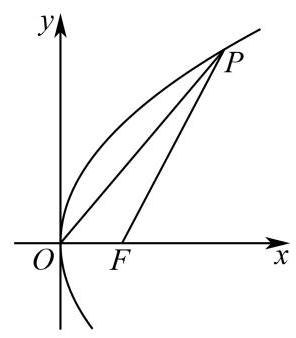
则 S △ P O F = 1 2 ∣ O F ∣ ∣ y P ∣ = 4 2 {S}_{\bigtriangleup {POF}} = \frac{1}{2}\left| {OF}\right| \left| {y}_{P}\right| = 4\sqrt{2} S △ POF = 2 1 ∣ OF ∣ ∣ y P ∣ = 4 2
所以 ∣ y P ∣ = 4 2 \left| {y}_{P}\right| = 4\sqrt{2} ∣ y P ∣ = 4 2 y P 2 = 8 x P {y}_{P}^{2} = 8{x}_{P} y P 2 = 8 x P x P = 4 {x}_{P} = 4 x P = 4
所以 ∣ P F ∣ = x P − ( − 2 ) = 6 \left| {PF}\right| = {x}_{P} - \left( {-2}\right) = 6 ∣ PF ∣ = x P − ( − 2 ) = 6
故答案为:6
奉贤 · 第14题 ★★☆☆☆ · 教师预估 已知双曲线的方程为 x 2 − y 2 4 = λ {x}^{2} - \frac{{y}^{2}}{4} = \lambda x 2 − 4 y 2 = λ
A. 渐近线与 λ \lambda λ
B. 实轴长与 λ \lambda λ
C. 焦距与 λ \lambda λ
D. 焦点与 λ无关
考点： 含参双曲线渐近线与焦点。难度依据： 含参双曲线渐近线与焦点
展开答案与解析 【答案】 A
【解析】
【详解】 已知双曲线的方程为 x 2 − y 2 4 = λ {x}^{2} - \frac{{y}^{2}}{4} = \lambda x 2 − 4 y 2 = λ λ ≠ 0 \lambda \neq 0 λ = 0
当 λ > 0 \lambda > 0 λ > 0 x 2 λ − y 2 4 λ = 1 \frac{{x}^{2}}{\lambda } - \frac{{y}^{2}}{4\lambda } = 1 λ x 2 − 4 λ y 2 = 1 x x x a 2 = λ , b 2 = 4 λ , c 2 = a 2 + b 2 = 5 λ {a}^{2} = \lambda ,{b}^{2} = {4\lambda },{c}^{2} = {a}^{2} + {b}^{2} = {5\lambda } a 2 = λ , b 2 = 4 λ , c 2 = a 2 + b 2 = 5 λ
当 λ < 0 \lambda < 0 λ < 0 y 2 − 4 λ − x 2 − λ = 1 \frac{{y}^{2}}{-{4\lambda }} - \frac{{x}^{2}}{-\lambda } = 1 − 4 λ y 2 − − λ x 2 = 1 y y y a 2 = − 4 λ , b 2 = − λ , c 2 = a 2 + b 2 = − 5 λ {a}^{2} = - {4\lambda },{b}^{2} = - \lambda ,{c}^{2} = {a}^{2} + {b}^{2} = - {5\lambda } a 2 = − 4 λ , b 2 = − λ , c 2 = a 2 + b 2 = − 5 λ
当 λ > 0 \lambda > 0 λ > 0 y = ± b 2 a 2 x = ± 2 x y = \pm \sqrt{\frac{{b}^{2}}{{a}^{2}}}x = \pm {2x} y = ± a 2 b 2 x = ± 2 x 2 a = 2 λ {2a} = 2\sqrt{\lambda } 2 a = 2 λ
焦距为 2 c = 2 5 λ {2c} = 2\sqrt{5\lambda } 2 c = 2 5 λ ( ± 5 λ , 0 ) \left( {\pm \sqrt{5\lambda },0}\right) ( ± 5 λ , 0 )
当 λ < 0 \lambda < 0 λ < 0 y = ± a 2 b 2 x = ± − 4 λ − λ x = ± 2 x y = \pm \sqrt{\frac{{a}^{2}}{{b}^{2}}}x = \pm \sqrt{\frac{-{4\lambda }}{-\lambda }}x = \pm {2x} y = ± b 2 a 2 x = ± − λ − 4 λ x = ± 2 x 2 a = 4 − λ {2a} = 4\sqrt{-\lambda } 2 a = 4 − λ
焦距为 2 c = 2 − 5 λ {2c} = 2\sqrt{-{5\lambda }} 2 c = 2 − 5 λ ( 0 , ± − 5 λ ) \left( {0, \pm \sqrt{-{5\lambda }}}\right) ( 0 , ± − 5 λ )
∴ \therefore ∴ λ \lambda λ λ \lambda λ
宝山 · 第4题 ★☆☆☆☆ · 教师预估 若 n → = ( 1 , 2 ) \overrightarrow{n} = \left( {1,2}\right) n = ( 1 , 2 ) l : a x + y − 1 = 0 l : {ax} + y - 1 = 0 l : a x + y − 1 = 0 a a a
考点： 直线法向量与平行坐标比例；直线一般式及法向量。难度依据： 直线法向量与平行坐标比例；直线一般式及法向量
展开答案与解析 【答案】 1 2 # # 0.5 \frac{1}{2}\# \# {0.5} 2 1 ## 0.5
【解析】
【分析】 利用直线一般式的法向量形式, 结合已知法向量与该法向量平行的性质列比例式求解 a a a
【详解】 已知直线 l l l a x + y − 1 = 0 {ax} + y - 1 = 0 a x + y − 1 = 0
根据直线一般式 A x + B y + C = 0 {Ax} + {By} + C = 0 A x + B y + C = 0 l l l ( a , 1 ) \left( {a,1}\right) ( a , 1 )
因为 n → = ( 1 , 2 ) \overrightarrow{n} = \left( {1,2}\right) n = ( 1 , 2 ) l l l ( a , 1 ) \left( {a,1}\right) ( a , 1 ) ( 1 , 2 ) \left( {1,2}\right) ( 1 , 2 )
由向量平行的坐标关系得: 2 a = 1 × 1 {2a} = 1 \times 1 2 a = 1 × 1 a = 1 2 a = \frac{1}{2} a = 2 1
【点睛】 本题考查直线法向量的概念和向量平行的坐标运算, 记住直线一般式 A x + B y + C = 0 {Ax} + {By} + C = 0 A x + B y + C = 0 ( A , B ) \left( {A, B}\right) ( A , B )
崇明 · 第10题 ★★★★☆ · 教师预估 如图,已知圆柱的一个截面边界是椭圆 Γ \Gamma Γ Γ \Gamma Γ A C {AC} A C A B {AB} A B Γ \Gamma Γ y = 1 − 3 sin x 2 y = 1 - \sqrt{3}\sin \frac{x}{2} y = 1 − 3 sin 2 x Γ \Gamma Γ
B B B
考点： 圆柱斜截面与展开；周期振幅确定圆柱尺寸；椭圆离心率。难度依据： 圆柱斜截面与展开；周期振幅确定圆柱尺寸；椭圆离心率
展开答案与解析 【答案】 21 7 \frac{\sqrt{21}}{7} 7 21
【解析】
【分析】 由正弦函数的最值和周期求得圆柱的高和底面半径, 进而求得椭圆的长轴和短轴, 即可得离心率.
【详解】 函数 y = 1 − 3 sin x 2 y = 1 - \sqrt{3}\sin \frac{x}{2} y = 1 − 3 sin 2 x [ 1 − 3 , 1 + 3 ] \left\lbrack {1 - \sqrt{3},1 + \sqrt{3}}\right\rbrack [ 1 − 3 , 1 + 3 ] T = 2 π 1 2 = 4 π T = \frac{2\pi }{\frac{1}{2}} = {4\pi } T = 2 1 2 π = 4 π
依题意,圆柱的高 h = ∣ A B ∣ = 2 3 h = \left| {AB}\right| = 2\sqrt{3} h = ∣ A B ∣ = 2 3 r r r 2 π r = 4 π {2\pi r} = {4\pi } 2 π r = 4 π r = 2 r = 2 r = 2
椭圆短轴长 2 b = 2 r = 4 {2b} = {2r} = 4 2 b = 2 r = 4 b = 2 b = 2 b = 2 2 a = h 2 + ( 2 r ) 2 = 2 7 {2a} = \sqrt{{h}^{2} + {\left( 2r\right) }^{2}} = 2\sqrt{7} 2 a = h 2 + ( 2 r ) 2 = 2 7 a = 7 a = \sqrt{7} a = 7 e = a 2 − b 2 a = 1 − b 2 a 2 = 21 7 e = \frac{\sqrt{{a}^{2} - {b}^{2}}}{a} = \sqrt{1 - \frac{{b}^{2}}{{a}^{2}}} = \frac{\sqrt{21}}{7} e = a a 2 − b 2 = 1 − a 2 b 2 = 7 21
普陀 · 第3题 ★☆☆☆☆ · 教师预估 已知点 P ( 2 , y ) P\left( {2, y}\right) P ( 2 , y ) y 2 = 4 x {y}^{2} = {4x} y 2 = 4 x P P P F F F
考点： 抛物线焦半径。难度依据： 抛物线焦半径
展开答案与解析 【答案】 3
【解析】
【分析】 利用焦点弦长的性质即可得出.
【详解】 ∵ \because ∵ P ( 2 , y ) P\left( {2, y}\right) P ( 2 , y ) y 2 = 4 x {y}^{2} = {4x} y 2 = 4 x
∴ P \therefore P ∴ P F F F = 2 + 1 = 3 = 2 + 1 = 3 = 2 + 1 = 3
故答案为: 3 .
【点睛】 本题考查过焦点弦长的性质, 属于基础题.
杨浦 · 第8题 ★★☆☆☆ · 教师预估 直线 l : ( a − 3 ) x + ( 2 a + 1 ) y − 3 = 0 l : \left( {a - 3}\right) x + \left( {{2a} + 1}\right) y - 3 = 0 l : ( a − 3 ) x + ( 2 a + 1 ) y − 3 = 0 n → = ( 3 , 2 ) \overrightarrow{n} = \left( {3,2}\right) n = ( 3 , 2 ) a = a = a =
考点： 直线系数向量与给定法向量共线。难度依据： 运用法向量坐标关系
展开答案与解析 【答案】 − 9 4 - \frac{9}{4} − 4 9
【解析】
【详解】 易知直线 l : ( a − 3 ) x + ( 2 a + 1 ) y − 3 = 0 l : \left( {a - 3}\right) x + \left( {{2a} + 1}\right) y - 3 = 0 l : ( a − 3 ) x + ( 2 a + 1 ) y − 3 = 0 ( a − 3 , 2 a + 1 ) \left( {a - 3,{2a} + 1}\right) ( a − 3 , 2 a + 1 ) l l l n → = ( 3 , 2 ) \overrightarrow{n} = \left( {3,2}\right) n = ( 3 , 2 )
根据向量共线的坐标表示得 2 ( a − 3 ) − 3 ( 2 a + 1 ) = 0 2\left( {a - 3}\right) - 3\left( {{2a} + 1}\right) = 0 2 ( a − 3 ) − 3 ( 2 a + 1 ) = 0 a = − 9 4 a = - \frac{9}{4} a = − 4 9
松江 · 第4题 ★★☆☆☆ · 教师预估 已知抛物线 y 2 = 2 p x ( p > 0 ) {y}^{2} = {2px}\left( {p > 0}\right) y 2 = 2 p x ( p > 0 ) ( x + 2 ) 2 + ( y + 1 ) 2 = 1 {\left( x + 2\right) }^{2} + {\left( y + 1\right) }^{2} = 1 ( x + 2 ) 2 + ( y + 1 ) 2 = 1
考点： 准线经过圆心确定焦点。难度依据： 将平分圆周转为经过圆心
展开答案与解析 【答案】 ( 2 , 0 ) \left( {2,0}\right) ( 2 , 0 )
【解析】
【分析】 根据抛物线的准线经过圆心求出 p p p
【详解】 因为抛物线 y 2 = 2 p x ( p > 0 ) {y}^{2} = {2px}\left( {p > 0}\right) y 2 = 2 p x ( p > 0 ) ( x + 2 ) 2 + ( y + 1 ) 2 = 1 {\left( x + 2\right) }^{2} + {\left( y + 1\right) }^{2} = 1 ( x + 2 ) 2 + ( y + 1 ) 2 = 1 x = − p 2 x = - \frac{p}{2} x = − 2 p ( − 2 , − 1 ) \left( {-2, - 1}\right) ( − 2 , − 1 ) − 2 = − p 2 - 2 = - \frac{p}{2} − 2 = − 2 p
解得 p = 4 p = 4 p = 4 y 2 = 8 x {y}^{2} = {8x} y 2 = 8 x
所以该抛物线的焦点坐标为 ( 2 , 0 ) \left( {2,0}\right) ( 2 , 0 )
虹口 · 第10题 ★★★★☆ · 教师预估 已知焦点为 F F F C : y 2 = 4 x C : {y}^{2} = {4x} C : y 2 = 4 x A A A B B B ∠ A F B = 150 ∘ \angle {AFB} = {150}^{ \circ } ∠ A FB = 150 ∘ E E E A A A B B B E E E C C C H H H ∣ A B ∣ 2 ∣ E H ∣ 2 \frac{{\left| AB\right| }^{2}}{{\left| EH\right| }^{2}} ∣ E H ∣ 2 ∣ A B ∣ 2
考点： 抛物线焦半径及焦点角；基本不等式求长度比最值；余弦定理表达弦长。难度依据： 抛物线焦半径及焦点角；基本不等式求长度比最值；余弦定理表达弦长
展开答案与解析 【答案】 2 + 3 2 + \sqrt{3} 2 + 3
【解析】
【分析】 设 ∣ A F ∣ = a , ∣ B F ∣ = b \left| {AF}\right| = a,\left| {BF}\right| = b ∣ A F ∣ = a , ∣ BF ∣ = b ∣ E H ∣ = 1 2 ( a + b ) \left| {EH}\right| = \frac{1}{2}\left( {a + b}\right) ∣ E H ∣ = 2 1 ( a + b ) △ A F B \bigtriangleup {AFB} △ A FB ∣ A B ∣ ≥ 2 − 3 4 ( a + b ) \left| {AB}\right| \geq \frac{2 - \sqrt{3}}{4}\left( {a + b}\right) ∣ A B ∣ ≥ 4 2 − 3 ( a + b ) ∣ A B ∣ 2 ∣ E H ∣ 2 \frac{{\left| AB\right| }^{2}}{{\left| EH\right| }^{2}} ∣ E H ∣ 2 ∣ A B ∣ 2
【详解】 设 ∣ A F ∣ = a , ∣ B F ∣ = b \left| {AF}\right| = a,\left| {BF}\right| = b ∣ A F ∣ = a , ∣ BF ∣ = b A Q {AQ} A Q Q , B P Q,{BP} Q , BP P P P
由抛物线的定义,知 ∣ A F ∣ = ∣ A Q ∣ , ∣ B F ∣ = ∣ B P ∣ \left| {AF}\right| = \left| {AQ}\right| ,\left| {BF}\right| = \left| {BP}\right| ∣ A F ∣ = ∣ A Q ∣ , ∣ BF ∣ = ∣ BP ∣ ∣ E H ∣ = 1 2 ( a + b ) , \left| {EH}\right| = \frac{1}{2}\left( {a + b}\right) , ∣ E H ∣ = 2 1 ( a + b ) ,
由余弦定理得 ∣ A B ∣ 2 = a 2 + b 2 − 2 a b cos 150 ∘ = a 2 + b 2 + 3 a b = ( a + b ) 2 − ( 2 − 3 ) a b {\left| AB\right| }^{2} = {a}^{2} + {b}^{2} - {2ab}\cos {150}^{ \circ } = {a}^{2} + {b}^{2} + \sqrt{3}{ab} = {\left( a + b\right) }^{2} - \left( {2 - \sqrt{3}}\right) {ab} ∣ A B ∣ 2 = a 2 + b 2 − 2 ab cos 150 ∘ = a 2 + b 2 + 3 ab = ( a + b ) 2 − ( 2 − 3 ) ab a b ≤ ( a + b 2 ) 2 {ab} \leq {\left( \frac{a + b}{2}\right) }^{2} ab ≤ ( 2 a + b ) 2
∴ ( a + b ) 2 − ( 2 − 3 ) a b ≥ ( a + b ) 2 − 2 − 3 4 ( a + b ) 2 = 2 + 3 4 ( a + b ) 2 \therefore {\left( a + b\right) }^{2} - \left( {2 - \sqrt{3}}\right) {ab} \geq {\left( a + b\right) }^{2} - \frac{2 - \sqrt{3}}{4}{\left( a + b\right) }^{2} = \frac{2 + \sqrt{3}}{4}{\left( a + b\right) }^{2} ∴ ( a + b ) 2 − ( 2 − 3 ) ab ≥ ( a + b ) 2 − 4 2 − 3 ( a + b ) 2 = 4 2 + 3 ( a + b ) 2 a = b a = b a = b
∴ ∣ A B ∣ 2 ≥ 2 + 3 4 ( a + b ) 2 \therefore {\left| AB\right| }^{2} \geq \frac{2 + \sqrt{3}}{4}{\left( a + b\right) }^{2} ∴ ∣ A B ∣ 2 ≥ 4 2 + 3 ( a + b ) 2
∴ ∣ A B ∣ 2 ∣ E H ∣ 2 ≥ 2 + 3 4 ( a + b ) 2 [ 1 2 ( a + b ) ] 2 = 2 + 3 \therefore \frac{{\left| AB\right| }^{2}}{{\left| EH\right| }^{2}} \geq \frac{\frac{2 + \sqrt{3}}{4}{\left( a + b\right) }^{2}}{{\left\lbrack \frac{1}{2}\left( a + b\right) \right\rbrack }^{2}} = 2 + \sqrt{3} ∴ ∣ E H ∣ 2 ∣ A B ∣ 2 ≥ [ 2 1 ( a + b ) ] 2 4 2 + 3 ( a + b ) 2 = 2 + 3 ∣ A B ∣ 2 ∣ E H ∣ 2 \frac{{\left| AB\right| }^{2}}{{\left| EH\right| }^{2}} ∣ E H ∣ 2 ∣ A B ∣ 2 2 + 3 2 + \sqrt{3} 2 + 3
虹口 · 第13题 ★☆☆☆☆ · 教师预估 双曲线 y 2 − 2 x 2 = 1 {y}^{2} - 2{x}^{2} = 1 y 2 − 2 x 2 = 1
A. y = ± 2 x y = \pm \sqrt{2}x y = ± 2 x
B. x = ± 2 y x = \pm \sqrt{2}y x = ± 2 y
C. y = ± 2 x y = \pm {2x} y = ± 2 x
D. x = ± 2 y x = \pm {2y} x = ± 2 y
考点： 双曲线渐近线。难度依据： 双曲线渐近线
展开答案与解析 【答案】 A
【解析】
【详解】 双曲线 y 2 − 2 x 2 = 1 {y}^{2} - 2{x}^{2} = 1 y 2 − 2 x 2 = 1 y 2 − x 2 1 2 = 1 {y}^{2} - \frac{{x}^{2}}{\frac{1}{2}} = 1 y 2 − 2 1 x 2 = 1
显然该双曲线焦点在 y y y a 2 = 1 , b 2 = 1 2 {a}^{2} = 1,{b}^{2} = \frac{1}{2} a 2 = 1 , b 2 = 2 1 a = 1 , b = 2 2 a = 1, b = \frac{\sqrt{2}}{2} a = 1 , b = 2 2
因为焦点在 y y y y = ± a b x y = \pm \frac{a}{b}x y = ± b a x a b = 1 2 2 = 2 \frac{a}{b} = \frac{1}{\frac{\sqrt{2}}{2}} = \sqrt{2} b a = 2 2 1 = 2
所以双曲线 y 2 − 2 x 2 = 1 {y}^{2} - 2{x}^{2} = 1 y 2 − 2 x 2 = 1 y = ± 2 x y = \pm \sqrt{2}x y = ± 2 x
金山 · 第15题 ★★★★☆ · 教师预估 已知椭圆 Γ 1 : x 2 a 2 + y 2 b 2 = 1 {\Gamma }_{1} : \frac{{x}^{2}}{{a}^{2}} + \frac{{y}^{2}}{{b}^{2}} = 1 Γ 1 : a 2 x 2 + b 2 y 2 = 1 Γ 2 : y 2 b 2 − x 2 a 2 = 1 {\Gamma }_{2} : \frac{{y}^{2}}{{b}^{2}} - \frac{{x}^{2}}{{a}^{2}} = 1 Γ 2 : b 2 y 2 − a 2 x 2 = 1 ( a > b > 0 ) \left( {a > b > 0}\right) ( a > b > 0 ) F 1 、 F 2 {F}_{1}\text{ 、 }{F}_{2} F 1 、 F 2 Γ 1 {\Gamma }_{1} Γ 1 P P P Γ 2 {\Gamma }_{2} Γ 2 Γ 2 {\Gamma }_{2} Γ 2 1 3 \frac{1}{3} 3 1 △ P F 1 F 2 \bigtriangleup {P{F}_{1}{F}_{2}} △ P F 1 F 2 P P P
A. 3
B. 4
C. 6
D. 8
考点： 椭圆焦点与双曲线渐近线；渐近线夹角及直角点数。难度依据： 椭圆焦点与双曲线渐近线；渐近线夹角及直角点数
展开答案与解析 【答案】 C
【解析】
【分析】 先根据双曲线的渐近线夹角的余弦值求出 b a \frac{b}{a} a b a = 2 b a = \sqrt{2}b a = 2 b ∠ F 1 P F 2 = 90 ∘ , ∠ P F 1 F 2 = 90 ∘ , ∠ P F 2 F 1 = 90 ∘ \angle {F}_{1}P{F}_{2} = {90}^{ \circ },\angle P{F}_{1}{F}_{2} = {90}^{ \circ },\angle P{F}_{2}{F}_{1} = {90}^{ \circ } ∠ F 1 P F 2 = 90 ∘ , ∠ P F 1 F 2 = 90 ∘ , ∠ P F 2 F 1 = 90 ∘
【详解】 双曲线 Γ 2 : y 2 b 2 − x 2 a 2 = 1 {\Gamma }_{2} : \frac{{y}^{2}}{{b}^{2}} - \frac{{x}^{2}}{{a}^{2}} = 1 Γ 2 : b 2 y 2 − a 2 x 2 = 1 y = ± b a x y = \pm \frac{b}{a}x y = ± a b x
设渐近线 y = b a x y = \frac{b}{a}x y = a b x θ \theta θ tan θ = b a \tan \theta = \frac{b}{a} tan θ = a b
∵ a > b > 0 , ∴ 0 < b a < 1 , ∴ 0 < tan θ < 1 , ∴ 0 < θ < π 4 \because a > b > 0,\therefore 0 < \frac{b}{a} < 1,\therefore 0 < \tan \theta < 1,\therefore 0 < \theta < \frac{\pi }{4} ∵ a > b > 0 , ∴ 0 < a b < 1 , ∴ 0 < tan θ < 1 , ∴ 0 < θ < 4 π
∴ \therefore ∴ 2 θ , ∴ cos 2 θ = 1 3 {2\theta },\therefore \cos {2\theta } = \frac{1}{3} 2 θ , ∴ cos 2 θ = 3 1
∵ cos 2 θ = cos 2 θ − sin 2 θ = cos 2 θ − sin 2 θ cos 2 θ + sin 2 θ = 1 − tan 2 θ 1 + tan 2 θ \because \cos {2\theta } = {\cos }^{2}\theta - {\sin }^{2}\theta = \frac{{\cos }^{2}\theta - {\sin }^{2}\theta }{{\cos }^{2}\theta + {\sin }^{2}\theta } = \frac{1 - {\tan }^{2}\theta }{1 + {\tan }^{2}\theta } ∵ cos 2 θ = cos 2 θ − sin 2 θ = c o s 2 θ + s i n 2 θ c o s 2 θ − s i n 2 θ = 1 + t a n 2 θ 1 − t a n 2 θ
∴ 1 − tan 2 θ 1 + tan 2 θ = 1 3 , ∴ 1 − ( b a ) 2 1 + ( b a ) 2 = 1 3 , ∴ b a = 2 2 , ∴ a = 2 b \therefore \frac{1 - {\tan }^{2}\theta }{1 + {\tan }^{2}\theta } = \frac{1}{3},\therefore \frac{1 - {\left( \frac{b}{a}\right) }^{2}}{1 + {\left( \frac{b}{a}\right) }^{2}} = \frac{1}{3},\therefore \frac{b}{a} = \frac{\sqrt{2}}{2},\therefore a = \sqrt{2}b ∴ 1 + t a n 2 θ 1 − t a n 2 θ = 3 1 , ∴ 1 + ( a b ) 2 1 − ( a b ) 2 = 3 1 , ∴ a b = 2 2 , ∴ a = 2 b
椭圆 Γ 1 : x 2 a 2 + y 2 b 2 = 1 , c = a 2 − b 2 = ( 2 b ) 2 − b 2 = b {\Gamma }_{1} : \frac{{x}^{2}}{{a}^{2}} + \frac{{y}^{2}}{{b}^{2}} = 1,\;c = \sqrt{{a}^{2} - {b}^{2}} = \sqrt{{\left( \sqrt{2}b\right) }^{2} - {b}^{2}} = b Γ 1 : a 2 x 2 + b 2 y 2 = 1 , c = a 2 − b 2 = ( 2 b ) 2 − b 2 = b
∵ \because ∵ F 1 、 F 2 {F}_{1}\text{ 、 }{F}_{2} F 1 、 F 2 Γ 1 {\Gamma }_{1} Γ 1 ∴ F 1 ( − b , 0 ) , F 2 ( b , 0 ) \therefore {F}_{1}\left( {-b,0}\right) ,{F}_{2}\left( {b,0}\right) ∴ F 1 ( − b , 0 ) , F 2 ( b , 0 )
当 ∠ F 1 P F 2 = 90 ∘ \angle {F}_{1}P{F}_{2} = {90}^{ \circ } ∠ F 1 P F 2 = 90 ∘ F 1 F 2 {F}_{1}{F}_{2} F 1 F 2 x 2 + y 2 = c 2 = b 2 {x}^{2} + {y}^{2} = {c}^{2} = {b}^{2} x 2 + y 2 = c 2 = b 2
双曲线 Γ 2 : y 2 b 2 − x 2 a 2 = 1 {\Gamma }_{2} : \frac{{y}^{2}}{{b}^{2}} - \frac{{x}^{2}}{{a}^{2}} = 1 Γ 2 : b 2 y 2 − a 2 x 2 = 1 a = 2 b a = \sqrt{2}b a = 2 b Γ 2 : y 2 b 2 − x 2 a 2 = 1 {\Gamma }_{2} : \frac{{y}^{2}}{{b}^{2}} - \frac{{x}^{2}}{{a}^{2}} = 1 Γ 2 : b 2 y 2 − a 2 x 2 = 1
得到 y 2 b 2 − x 2 2 b 2 = 1 \frac{{y}^{2}}{{b}^{2}} - \frac{{x}^{2}}{2{b}^{2}} = 1 b 2 y 2 − 2 b 2 x 2 = 1 y 2 = b 2 + x 2 2 {y}^{2} = {b}^{2} + \frac{{x}^{2}}{2} y 2 = b 2 + 2 x 2
联立 { x 2 + y 2 = b 2 y 2 = b 2 + x 2 2 \left\{ \begin{array}{l} {x}^{2} + {y}^{2} = {b}^{2} \\ {y}^{2} = {b}^{2} + \frac{{x}^{2}}{2} \end{array}\right. { x 2 + y 2 = b 2 y 2 = b 2 + 2 x 2 y 2 = b 2 + x 2 2 {y}^{2} = {b}^{2} + \frac{{x}^{2}}{2} y 2 = b 2 + 2 x 2 x 2 + y 2 = b 2 {x}^{2} + {y}^{2} = {b}^{2} x 2 + y 2 = b 2
得到 x 2 + b 2 + x 2 2 = b 2 {x}^{2} + {b}^{2} + \frac{{x}^{2}}{2} = {b}^{2} x 2 + b 2 + 2 x 2 = b 2 x = 0 x = 0 x = 0
将 x = 0 x = 0 x = 0 y 2 = b 2 + x 2 2 {y}^{2} = {b}^{2} + \frac{{x}^{2}}{2} y 2 = b 2 + 2 x 2 y = ± b y = \pm b y = ± b
则有 2 个点 P P P ∠ F 1 P F 2 = 90 ∘ \angle {F}_{1}P{F}_{2} = {90}^{ \circ } ∠ F 1 P F 2 = 90 ∘
当 ∠ P F 1 F 2 = 90 ∘ \angle P{F}_{1}{F}_{2} = {90}^{ \circ } ∠ P F 1 F 2 = 90 ∘
过 F 1 {F}_{1} F 1 x = − b x = - b x = − b x = − b x = - b x = − b y 2 b 2 − x 2 2 b 2 = 1 \frac{{y}^{2}}{{b}^{2}} - \frac{{x}^{2}}{2{b}^{2}} = 1 b 2 y 2 − 2 b 2 x 2 = 1
得到 y 2 b 2 − ( − b ) 2 2 b 2 = 1 \frac{{y}^{2}}{{b}^{2}} - \frac{{\left( -b\right) }^{2}}{2{b}^{2}} = 1 b 2 y 2 − 2 b 2 ( − b ) 2 = 1 y = ± 6 2 b y = \pm \frac{\sqrt{6}}{2}b y = ± 2 6 b P P P ∠ P F 1 F 2 = 90 ∘ \angle P{F}_{1}{F}_{2} = {90}^{ \circ } ∠ P F 1 F 2 = 90 ∘
当 ∠ P F 2 F 1 = 90 ∘ \angle P{F}_{2}{F}_{1} = {90}^{ \circ } ∠ P F 2 F 1 = 90 ∘
过 F 2 {F}_{2} F 2 x = b \mathrm{x} = \mathrm{b} x = b x = b \mathrm{x} = \mathrm{b} x = b y 2 b 2 − x 2 2 b 2 = 1 \frac{{y}^{2}}{{b}^{2}} - \frac{{x}^{2}}{2{b}^{2}} = 1 b 2 y 2 − 2 b 2 x 2 = 1
得到 y 2 b 2 − b 2 2 b 2 = 1 \frac{{y}^{2}}{{b}^{2}} - \frac{{b}^{2}}{2{b}^{2}} = 1 b 2 y 2 − 2 b 2 b 2 = 1 y = ± 6 2 b y = \pm \frac{\sqrt{6}}{2}b y = ± 2 6 b P P P ∠ P F 2 F 1 = 90 ∘ \angle P{F}_{2}{F}_{1} = {90}^{ \circ } ∠ P F 2 F 1 = 90 ∘
综上可知,使得 △ P F 1 F 2 \bigtriangleup P{F}_{1}{F}_{2} △ P F 1 F 2 P P P C \mathrm{C} C
闵行 · 第8题 ★★★☆☆ · 教师预估 在 A B C {ABC} A BC A B = 3 , A C = 5 , B C = 4 {AB} = 3,{AC} = 5,{BC} = 4 A B = 3 , A C = 5 , BC = 4 A A A B B B C C C
考点： 双曲线焦点与渐近线夹角。难度依据： 双曲线焦点与渐近线夹角
展开答案与解析 【答案】 π 3 \frac{\pi }{3} 3 π
【解析】
【详解】 由题可知以 B 、 C B\text{ 、 }C B 、 C 2 c = ∣ B C ∣ = 4 ⇒ c = 2 {2c} = \left| {BC}\right| = 4 \Rightarrow c = 2 2 c = ∣ BC ∣ = 4 ⇒ c = 2
又点 A A A ∥ A C ∣ − ∣ A B ∥ = 5 − 3 = 2 a ⇒ a = 1 \parallel {AC}\left| -\right| {AB}\parallel = 5 - 3 = {2a} \Rightarrow a = 1 ∥ A C ∣ − ∣ A B ∥= 5 − 3 = 2 a ⇒ a = 1
由双曲线的关系: c 2 = a 2 + b 2 {c}^{2} = {a}^{2} + {b}^{2} c 2 = a 2 + b 2 b = c 2 − a 2 = 4 − 1 = 3 b = \sqrt{{c}^{2} - {a}^{2}} = \sqrt{4 - 1} = \sqrt{3} b = c 2 − a 2 = 4 − 1 = 3
设 B C {BC} BC x x x y = ± 3 x y = \pm \sqrt{3}x y = ± 3 x
由 y = ± 3 x y = \pm \sqrt{3}x y = ± 3 x π 3 \frac{\pi }{3} 3 π 2 π 3 \frac{2\pi }{3} 3 2 π
根据直线夹角的定义 [ 0 , π 2 ] \left\lbrack {0,\frac{\pi }{2}}\right\rbrack [ 0 , 2 π ] π 3 \frac{\pi }{3} 3 π
青浦 · 第2题 ★☆☆☆☆ · 教师预估 设抛物线 y 2 = 8 x {y}^{2} = {8x} y 2 = 8 x
考点： 抛物线标准方程与准线。难度依据： 抛物线标准方程与准线
展开答案与解析 【答案】 x = − 2 x = - 2 x = − 2
【解析】
【分析】 由题意结合抛物线的标准方程确定其准线方程即可.
【详解】 由抛物线方程 y 2 = 8 x {y}^{2} = {8x} y 2 = 8 x 2 p = 8 {2p} = 8 2 p = 8 p 2 = 2 \frac{p}{2} = 2 2 p = 2 x = − 2 x = - 2 x = − 2 x = − 2 x = - 2 x = − 2
【点睛】 本题主要考查由抛物线方程确定其准线的方法, 属于基础题.
青浦 · 第10题 ★★★☆☆ · 教师预估 已知点 F F F E : x 2 a 2 − y 2 b 2 = 1 ( a > 0 , b > 0 ) E : \frac{{x}^{2}}{{a}^{2}} - \frac{{y}^{2}}{{b}^{2}} = 1\left( {a > 0, b > 0}\right) E : a 2 x 2 − b 2 y 2 = 1 ( a > 0 , b > 0 ) O O O l l l E E E P P P Q Q Q ∣ P F ∣ = 5 ∣ Q F ∣ \left| {PF}\right| = 5\left| {QF}\right| ∣ PF ∣ = 5 ∣ QF ∣ ∠ P F Q = 60 ∘ \angle {PFQ} = {60}^{ \circ } ∠ PFQ = 60 ∘ E E E
考点： 双曲线定义和离心率；余弦定理求焦距。难度依据： 双曲线定义和离心率；余弦定理求焦距
展开答案与解析 【答案】 31 4 # # 1 4 31 \frac{\sqrt{31}}{4}\# \# \frac{1}{4}\sqrt{31} 4 31 ## 4 1 31
【解析】
【分析】 设 F 2 {F}_{2} F 2 P F Q F 2 {PFQ}{F}_{2} PFQ F 2 ∣ P F ∣ \left| {PF}\right| ∣ PF ∣ ∣ P F 2 ∣ \left| {P{F}_{2}}\right| ∣ P F 2 ∣ a a a a , c a, c a , c
设 F 2 {F}_{2} F 2 P F Q F 2 {PFQ}{F}_{2} PFQ F 2 ∣ P F 2 ∣ = ∣ Q F ∣ \left| {P{F}_{2}}\right| = \left| {QF}\right| ∣ P F 2 ∣ = ∣ QF ∣
所以 ∣ P F ∣ = 5 ∣ Q F ∣ = 5 ∣ P F 2 ∣ \left| {PF}\right| = 5\left| {QF}\right| = 5\left| {P{F}_{2}}\right| ∣ PF ∣ = 5 ∣ QF ∣ = 5 ∣ P F 2 ∣
又 ∣ P F ∣ − ∣ P F 2 ∣ = 2 a \left| {PF}\right| - \left| {P{F}_{2}}\right| = {2a} ∣ PF ∣ − ∣ P F 2 ∣ = 2 a 4 ∣ P F 2 ∣ = 2 a , ∣ P F 2 ∣ = a 2 4\left| {P{F}_{2}}\right| = {2a},\left| {P{F}_{2}}\right| = \frac{a}{2} 4 ∣ P F 2 ∣ = 2 a , ∣ P F 2 ∣ = 2 a ∣ P F ∣ = 5 a 2 \left| {PF}\right| = \frac{5a}{2} ∣ PF ∣ = 2 5 a
因为 ∠ P F Q = 60 ∘ \angle {PFQ} = {60}^{ \circ } ∠ PFQ = 60 ∘ ∠ F P F 2 = 120 ∘ \angle {FP}{F}_{2} = {120}^{ \circ } ∠ FP F 2 = 120 ∘
由余弦定理得 ∣ F 1 F 2 ∣ 2 = ∣ P F ∣ 2 + ∣ P F 2 ∣ 2 − 2 ∣ P F ∣ ∣ P F 2 ∣ cos 120 ∘ {\left| {F}_{1}{F}_{2}\right| }^{2} = {\left| PF\right| }^{2} + {\left| P{F}_{2}\right| }^{2} - 2\left| {PF}\right| \left| {P{F}_{2}}\right| \cos {120}^{ \circ } ∣ F 1 F 2 ∣ 2 = ∣ PF ∣ 2 + ∣ P F 2 ∣ 2 − 2 ∣ PF ∣ ∣ P F 2 ∣ cos 120 ∘
即 4 c 2 = 25 a 2 4 + a 2 4 − 2 × 5 a 2 × a 2 × ( − 1 2 ) 4{c}^{2} = \frac{{25}{a}^{2}}{4} + \frac{{a}^{2}}{4} - 2 \times \frac{5a}{2} \times \frac{a}{2} \times \left( {-\frac{1}{2}}\right) 4 c 2 = 4 25 a 2 + 4 a 2 − 2 × 2 5 a × 2 a × ( − 2 1 )
得 4 c 2 = 31 a 2 4 4{c}^{2} = \frac{{31}{a}^{2}}{4} 4 c 2 = 4 31 a 2 c 2 a 2 = 31 16 \frac{{c}^{2}}{{a}^{2}} = \frac{31}{16} a 2 c 2 = 16 31
所以离心率 e = c a = 31 4 e = \frac{c}{a} = \frac{\sqrt{31}}{4} e = a c = 4 31
静安 · 第4题 ★★☆☆☆ · 教师预估 双曲线 x 2 4 − y 2 = 1 \frac{{x}^{2}}{4} - {y}^{2} = 1 4 x 2 − y 2 = 1
考点： 双曲线渐近线夹角。难度依据： 双曲线渐近线夹角
展开答案与解析 【答案】 arctan 4 3 \arctan \frac{4}{3} arctan 3 4
【解析】
【分析】 首先得到双曲线的两条渐近线, 再利用正切两角和差公式求解即可.
【详解】 由题可得 a = 2 , b = 1 a = 2, b = 1 a = 2 , b = 1 y = ± b a x = ± 1 2 x y = \pm \frac{b}{a}x = \pm \frac{1}{2}x y = ± a b x = ± 2 1 x
两条渐近线斜率为 k 1 = tan θ 1 = 1 2 , k 2 = tan θ 2 = − 1 2 {k}_{1} = \tan {\theta }_{1} = \frac{1}{2},\;{k}_{2} = \tan {\theta }_{2} = - \frac{1}{2} k 1 = tan θ 1 = 2 1 , k 2 = tan θ 2 = − 2 1
两直线夹角 θ ∈ ( 0 , π 2 ] \theta \in \left( {0,\frac{\pi }{2}}\right\rbrack θ ∈ ( 0 , 2 π ] tan θ = ∣ k 2 − k 1 1 + k 1 k 2 ∣ \tan \theta = \left| \frac{{k}_{2} - {k}_{1}}{1 + {k}_{1}{k}_{2}}\right| tan θ = 1 + k 1 k 2 k 2 − k 1
代入得 tan θ = ∣ − 1 2 − 1 2 1 + ( 1 2 ) ( − 1 2 ) ∣ = ∣ − 1 3 4 ∣ = 4 3 \tan \theta = \left| \frac{-\frac{1}{2} - \frac{1}{2}}{1 + \left( \frac{1}{2}\right) \left( {-\frac{1}{2}}\right) }\right| = \left| \frac{-1}{\frac{3}{4}}\right| = \frac{4}{3} tan θ = 1 + ( 2 1 ) ( − 2 1 ) − 2 1 − 2 1 = 4 3 − 1 = 3 4
由于 tan θ = 4 3 \tan \theta = \frac{4}{3} tan θ = 3 4 θ ∈ ( 0 , π 2 ] \theta \in \left( {0,\frac{\pi }{2}}\right\rbrack θ ∈ ( 0 , 2 π ] arctan 4 3 \arctan \frac{4}{3} arctan 3 4
黄浦 · 第2题 ★☆☆☆☆ · 教师预估 若直线 3 x + y − 2 = 0 {3x} + y - 2 = 0 3 x + y − 2 = 0 x − a y + 1 = 0 x - {ay} + 1 = 0 x − a y + 1 = 0 a a a
考点： 两直线垂直。难度依据： 两直线垂直
展开答案与解析 【答案】 3
【解析】
【详解】 若直线 3 x + y − 2 = 0 {3x} + y - 2 = 0 3 x + y − 2 = 0 x − a y + 1 = 0 x - {ay} + 1 = 0 x − a y + 1 = 0
则 3 × 1 + 1 × ( − a ) = 0 3 \times 1 + 1 \times \left( {-a}\right) = 0 3 × 1 + 1 × ( − a ) = 0 a = 3 a = 3 a = 3
黄浦 · 第10题 ★★★☆☆ · 教师预估 已知曲线 Γ 1 : y 2 = 2 p x ( p > 0 ) {\Gamma }_{1} : {y}^{2} = {2px}\left( {p > 0}\right) Γ 1 : y 2 = 2 p x ( p > 0 ) Γ 2 : y 2 a 2 − x 2 b 2 = 1 ( y > 0 ) {\Gamma }_{2} : \frac{{y}^{2}}{{a}^{2}} - \frac{{x}^{2}}{{b}^{2}} = 1\left( {y > 0}\right) Γ 2 : a 2 y 2 − b 2 x 2 = 1 ( y > 0 ) P , Q P, Q P , Q F F F Γ 1 {\Gamma }_{1} Γ 1 O O O ∣ P F ∣ + ∣ Q F ∣ = 10 ∣ O F ∣ \left| {PF}\right| + \left| {QF}\right| = {10}\left| {OF}\right| ∣ PF ∣ + ∣ QF ∣ = 10 ∣ OF ∣ Γ 2 {\Gamma }_{2} Γ 2
考点： 抛物线双曲线与离心率。难度依据： 抛物线双曲线与离心率
展开答案与解析 【答案】 3 \sqrt{3} 3
【解析】
【分析】 联立抛物线和双曲线方程,根据韦达定理可得 x 1 + x 2 = 2 p b 2 a 2 {x}_{1} + {x}_{2} = \frac{{2p}{b}^{2}}{{a}^{2}} x 1 + x 2 = a 2 2 p b 2 b 2 a 2 = 2 \frac{{b}^{2}}{{a}^{2}} = 2 a 2 b 2 = 2
【详解】 由题意可知: 抛物线 Γ 1 : y 2 = 2 p x ( p > 0 ) {\Gamma }_{1} : {y}^{2} = {2px}\left( {p > 0}\right) Γ 1 : y 2 = 2 p x ( p > 0 ) F ( p 2 , 0 ) F\left( {\frac{p}{2},0}\right) F ( 2 p , 0 )
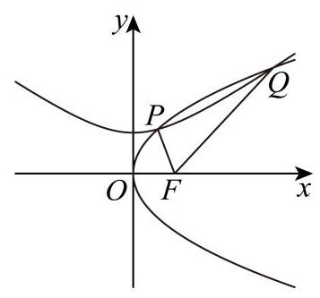
设 P ( x 1 , y 1 ) , Q ( x 2 , y 2 ) P\left( {{x}_{1},{y}_{1}}\right) , Q\left( {{x}_{2},{y}_{2}}\right) P ( x 1 , y 1 ) , Q ( x 2 , y 2 )
联立方程 { y 2 = 2 p x y 2 a 2 − x 2 b 2 = 1 \left\{ \begin{array}{l} {y}^{2} = {2px} \\ \frac{{y}^{2}}{{a}^{2}} - \frac{{x}^{2}}{{b}^{2}} = 1 \end{array}\right. { y 2 = 2 p x a 2 y 2 − b 2 x 2 = 1 y y y 1 b 2 x 2 − 2 p a 2 x + 1 = 0 \frac{1}{{b}^{2}}{x}^{2} - \frac{2p}{{a}^{2}}x + 1 = 0 b 2 1 x 2 − a 2 2 p x + 1 = 0
则 Δ = 4 p 2 a 4 − 4 b 2 > 0 \Delta = \frac{4{p}^{2}}{{a}^{4}} - \frac{4}{{b}^{2}} > 0 Δ = a 4 4 p 2 − b 2 4 > 0 p b > a 2 {pb} > {a}^{2} p b > a 2 x 1 + x 2 = 2 p b 2 a 2 {x}_{1} + {x}_{2} = \frac{{2p}{b}^{2}}{{a}^{2}} x 1 + x 2 = a 2 2 p b 2
又因为 ∣ P F ∣ + ∣ Q F ∣ = 10 ∣ O F ∣ \left| {PF}\right| + \left| {QF}\right| = {10}\left| {OF}\right| ∣ PF ∣ + ∣ QF ∣ = 10 ∣ OF ∣ x 1 + p 2 + x 2 + p 2 = 10 × p 2 {x}_{1} + \frac{p}{2} + {x}_{2} + \frac{p}{2} = {10} \times \frac{p}{2} x 1 + 2 p + x 2 + 2 p = 10 × 2 p
即 x 1 + x 2 = 4 p {x}_{1} + {x}_{2} = {4p} x 1 + x 2 = 4 p 2 p b 2 a 2 = 4 p \frac{{2p}{b}^{2}}{{a}^{2}} = {4p} a 2 2 p b 2 = 4 p b 2 a 2 = 2 \frac{{b}^{2}}{{a}^{2}} = 2 a 2 b 2 = 2
所以双曲线 Γ 2 {\Gamma }_{2} Γ 2 e = c a = 1 + b 2 a 2 = 3 e = \frac{c}{a} = \sqrt{1 + \frac{{b}^{2}}{{a}^{2}}} = \sqrt{3} e = a c = 1 + a 2 b 2 = 3
直线与曲线交点、弦及定值定点 联立与韦达需保留判别式、退化情形和分支限制，完整呈现综合大题。
嘉定 · 第20题 ★★★★☆ · 教师预估 本题资料或解析有待核事项，预览不可作为已审定成品。
已知椭圆 Γ : x 2 a 2 + y 2 4 = 1 ( a > 2 ) \Gamma : \frac{{x}^{2}}{{a}^{2}} + \frac{{y}^{2}}{4} = 1\left( {a > 2}\right) Γ : a 2 x 2 + 4 y 2 = 1 ( a > 2 ) l 1 : y = x 2 、 l 2 : y = − x 2 {l}_{1} : y = \frac{x}{2}\text{ 、 }{l}_{2} : y = - \frac{x}{2} l 1 : y = 2 x 、 l 2 : y = − 2 x P P P l 1 {l}_{1} l 1 l 2 {l}_{2} l 2 M M M l 2 {l}_{2} l 2 l 1 {l}_{1} l 1 N N N
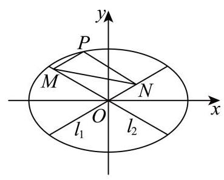
(1)当 P P P ∣ M N ∣ \left| {MN}\right| ∣ MN ∣
(2)若椭圆的离心率 e = 3 2 e = \frac{\sqrt{3}}{2} e = 2 3 Γ \Gamma Γ ∣ O M → + O N → ∣ \left| {\overrightarrow{OM} + \overrightarrow{ON}}\right| OM + ON
(3)若 ∣ M N ∣ \left| {MN}\right| ∣ MN ∣ P P P a a a O N P M {ONPM} ONPM
考点： (1) 椭圆顶点与平行线关系；(2) 椭圆离心率与向量模的范围；(3) 定值条件与面积最值。难度依据： 椭圆与向量定值面积最值
核查说明： 题干与答案解析尚未逐页对照原卷，数学内容未独立终审。
展开答案与解析 【答案】 (1) 4 (2)最大值为 4，最小值为 2
(3) a = 8 a = 8 a = 8 O N P M {ONPM} ONPM
【解析】
【分析】 (1) 根据条件分别求直线 P M {PM} PM P N {PN} PN M , N M, N M , N
(2)首先根据离心率求椭圆方程，再根据向量的平行四边形法则转化为求 ∣ O P → ∣ \left| \overrightarrow{OP}\right| OP
(3)首先根据点 P P P P M {PM} PM P N {PN} PN M M M N N N a a a cos ∠ M O N \cos \angle {MON} cos ∠ MON ∣ M N ∣ \left| {MN}\right| ∣ MN ∣ △ M O N \bigtriangleup {MON} △ MON
【小问 1 详解】
当点 P P P P ( 0 , 2 ) , l P M : y = x 2 + 2 , l P N : y = − x 2 + 2 P\left( {0,2}\right) ,{l}_{PM} : y = \frac{x}{2} + 2,{l}_{PN} : y = - \frac{x}{2} + 2 P ( 0 , 2 ) , l PM : y = 2 x + 2 , l PN : y = − 2 x + 2
联立 { y = x 2 + 2 y = − x 2 \left\{ \begin{array}{l} y = \frac{x}{2} + 2 \\ y = - \frac{x}{2} \end{array}\right. { y = 2 x + 2 y = − 2 x { x = − 2 y = 1 \left\{ \begin{array}{l} x = - 2 \\ y = 1 \end{array}\right. { x = − 2 y = 1 M ( − 2 , 1 ) M\left( {-2,1}\right) M ( − 2 , 1 )
联立 { y = − x 2 + 2 y = x 2 \left\{ \begin{array}{l} y = - \frac{x}{2} + 2 \\ y = \frac{x}{2} \end{array}\right. { y = − 2 x + 2 y = 2 x { x = 2 y = 1 \left\{ \begin{array}{l} x = 2 \\ y = 1 \end{array}\right. { x = 2 y = 1 N ( 2 , 1 ) N\left( {2,1}\right) N ( 2 , 1 )
所以 ∣ M N ∣ = ∣ 2 − ( − 2 ) ∣ = 4 \left| {MN}\right| = \left| {2 - \left( {-2}\right) }\right| = 4 ∣ MN ∣ = ∣ 2 − ( − 2 ) ∣ = 4
【小问 2 详解】
椭圆的离心率 e = a 2 − 4 a = 3 2 e = \frac{\sqrt{{a}^{2} - 4}}{a} = \frac{\sqrt{3}}{2} e = a a 2 − 4 = 2 3 a 2 = 16 {a}^{2} = {16} a 2 = 16
所以椭圆方程为 x 2 16 + y 2 4 = 1 \frac{{x}^{2}}{16} + \frac{{y}^{2}}{4} = 1 16 x 2 + 4 y 2 = 1
由条件可知四边形 O N P M {ONPM} ONPM O M → + O N → = O P → \overrightarrow{OM} + \overrightarrow{ON} = \overrightarrow{OP} OM + ON = OP
设 P ( x 0 , y 0 ) , − 4 ≤ x 0 ≤ 4 P\left( {{x}_{0},{y}_{0}}\right) , - 4 \leq {x}_{0} \leq 4 P ( x 0 , y 0 ) , − 4 ≤ x 0 ≤ 4
所以 ∣ O M → + O N → ∣ = ∣ O P → ∣ = x 0 2 + y 0 2 = 3 4 x 0 2 + 4 ∈ [ 2 , 4 ] \left| {\overrightarrow{OM} + \overrightarrow{ON}}\right| = \left| \overrightarrow{OP}\right| = \sqrt{{x}_{0}^{2} + {y}_{0}^{2}} = \sqrt{\frac{3}{4}{x}_{0}^{2} + 4} \in \left\lbrack {2,4}\right\rbrack OM + ON = OP = x 0 2 + y 0 2 = 4 3 x 0 2 + 4 ∈ [ 2 , 4 ]
所以 ∣ O M → + O N → ∣ \left| {\overrightarrow{OM} + \overrightarrow{ON}}\right| OM + ON
【小问 3 详解】
设 P ( x 0 , y 0 ) P\left( {{x}_{0},{y}_{0}}\right) P ( x 0 , y 0 ) l P M : y − y 0 = 1 2 ( x − x 0 ) , l P N : y − y 0 = − 1 2 ( x − x 0 ) {l}_{PM} : y - {y}_{0} = \frac{1}{2}\left( {x - {x}_{0}}\right) ,{l}_{PN} : y - {y}_{0} = - \frac{1}{2}\left( {x - {x}_{0}}\right) l PM : y − y 0 = 2 1 ( x − x 0 ) , l PN : y − y 0 = − 2 1 ( x − x 0 )
联立 { y − y 0 = 1 2 ( x − x 0 ) y = − 1 2 x \left\{ \begin{array}{l} y - {y}_{0} = \frac{1}{2}\left( {x - {x}_{0}}\right) \\ y = - \frac{1}{2}x \end{array}\right. { y − y 0 = 2 1 ( x − x 0 ) y = − 2 1 x x = x 0 2 − y 0 , y = − x 0 4 + y 0 2 x = \frac{{x}_{0}}{2} - {y}_{0}, y = - \frac{{x}_{0}}{4} + \frac{{y}_{0}}{2} x = 2 x 0 − y 0 , y = − 4 x 0 + 2 y 0
即 M ( x 0 2 − y 0 , − x 0 4 + y 0 2 ) M\left( {\frac{{x}_{0}}{2} - {y}_{0}, - \frac{{x}_{0}}{4} + \frac{{y}_{0}}{2}}\right) M ( 2 x 0 − y 0 , − 4 x 0 + 2 y 0 )
联立 { y − y 0 = − 1 2 ( x − x 0 ) y = 1 2 x \left\{ \begin{array}{l} y - {y}_{0} = - \frac{1}{2}\left( {x - {x}_{0}}\right) \\ y = \frac{1}{2}x \end{array}\right. { y − y 0 = − 2 1 ( x − x 0 ) y = 2 1 x x = x 0 2 + y 0 , y = x 0 4 + y 0 2 x = \frac{{x}_{0}}{2} + {y}_{0}, y = \frac{{x}_{0}}{4} + \frac{{y}_{0}}{2} x = 2 x 0 + y 0 , y = 4 x 0 + 2 y 0
即 N ( x 0 2 + y 0 , x 0 4 + y 0 2 ) N\left( {\frac{{x}_{0}}{2} + {y}_{0},\frac{{x}_{0}}{4} + \frac{{y}_{0}}{2}}\right) N ( 2 x 0 + y 0 , 4 x 0 + 2 y 0 )
因为点 P P P x 0 2 a 2 + y 0 2 4 = 1 \frac{{x}_{0}^{2}}{{a}^{2}} + \frac{{y}_{0}^{2}}{4} = 1 a 2 x 0 2 + 4 y 0 2 = 1
所以 ∣ M N ∣ = 4 y 0 2 + x 0 2 4 = 4 × 4 × ( 1 − x 0 2 a 2 ) + x 0 2 4 = 16 + ( 1 4 − 16 a 2 ) x 0 2 \left| {MN}\right| = \sqrt{4{y}_{0}^{2} + \frac{{x}_{0}^{2}}{4}} = \sqrt{4 \times 4 \times \left( {1 - \frac{{x}_{0}^{2}}{{a}^{2}}}\right) + \frac{{x}_{0}^{2}}{4}} = \sqrt{{16} + \left( {\frac{1}{4} - \frac{16}{{a}^{2}}}\right) {x}_{0}^{2}} ∣ MN ∣ = 4 y 0 2 + 4 x 0 2 = 4 × 4 × ( 1 − a 2 x 0 2 ) + 4 x 0 2 = 16 + ( 4 1 − a 2 16 ) x 0 2
因为 ∣ M N ∣ \left| {MN}\right| ∣ MN ∣ x 0 {x}_{0} x 0 1 4 − 16 a 2 = 0 \frac{1}{4} - \frac{16}{{a}^{2}} = 0 4 1 − a 2 16 = 0 a 2 = 64 {a}^{2} = {64} a 2 = 64 a = 8 a = 8 a = 8 ∣ M N ∣ = 4 \left| {MN}\right| = 4 ∣ MN ∣ = 4
如图: 由条件可知, tan ∠ N O x = 1 2 \tan \angle {NOx} = \frac{1}{2} tan ∠ NO x = 2 1 cos ∠ N O x = 2 5 = 2 5 5 \cos \angle {NOx} = \frac{2}{\sqrt{5}} = \frac{2\sqrt{5}}{5} cos ∠ NO x = 5 2 = 5 2 5
cos ∠ M O N = cos ( π − 2 ∠ N O x ) = − cos 2 ∠ N O x = 1 − 2 cos 2 ∠ N O x = − 3 5 \cos \angle {MON} = \cos \left( {\pi - 2\angle {NOx}}\right) = - \cos 2\angle {NOx} = 1 - 2{\cos }^{2}\angle {NOx} = - \frac{3}{5} cos ∠ MON = cos ( π − 2∠ NO x ) = − cos 2∠ NO x = 1 − 2 cos 2 ∠ NO x = − 5 3
则 sin ∠ M O N = 4 5 \sin \angle {MON} = \frac{4}{5} sin ∠ MON = 5 4 ∣ M N ∣ \left| {MN}\right| ∣ MN ∣
△ M O N \bigtriangleup {MON} △ MON ∣ M N ∣ 2 = ∣ O M ∣ 2 + ∣ O N ∣ 2 − 2 ∣ O M ∣ ∣ O N ∣ cos ∠ M O N {\left| MN\right| }^{2} = {\left| OM\right| }^{2} + {\left| ON\right| }^{2} - 2\left| {OM}\right| \left| {ON}\right| \cos \angle {MON} ∣ MN ∣ 2 = ∣ OM ∣ 2 + ∣ ON ∣ 2 − 2 ∣ OM ∣ ∣ ON ∣ cos ∠ MON
= ∣ O M ∣ 2 + ∣ O N ∣ 2 + 6 5 ∣ O M ∣ ∣ O N ∣ ≥ 16 5 ∣ O M ∣ ∣ O N ∣ = {\left| OM\right| }^{2} + {\left| ON\right| }^{2} + \frac{6}{5}\left| {OM}\right| \left| {ON}\right| \geq \frac{16}{5}\left| {OM}\right| \left| {ON}\right| = ∣ OM ∣ 2 + ∣ ON ∣ 2 + 5 6 ∣ OM ∣ ∣ ON ∣ ≥ 5 16 ∣ OM ∣ ∣ ON ∣
即 ∣ O M ∣ ∣ O N ∣ ≤ 5 \left| {OM}\right| \left| {ON}\right| \leq 5 ∣ OM ∣ ∣ ON ∣ ≤ 5 S △ M O N = 1 2 ∣ O M ∣ ∣ O N ∣ sin ∠ M O N ≤ 2 {S}_{\bigtriangleup {MON}} = \frac{1}{2}\left| {OM}\right| \left| {ON}\right| \sin \angle {MON} \leq 2 S △ MON = 2 1 ∣ OM ∣ ∣ ON ∣ sin ∠ MON ≤ 2
而四边形 O N P M {ONPM} ONPM S □ O N P M = 2 S △ M O N ≤ 4 {S}_{\square {ONPM}} = 2{S}_{\bigtriangleup {MON}} \leq 4 S □ ONPM = 2 S △ MON ≤ 4 ∣ O M ∣ = ∣ O N ∣ \left| {OM}\right| = \left| {ON}\right| ∣ OM ∣ = ∣ ON ∣
此时，四边形 ONPM 的最大值为 4 ，
如下图:由以上可知， cos ∠ M O N = 3 5 \cos \angle {MON} = \frac{3}{5} cos ∠ MON = 5 3 ∣ M N ∣ = 4 \left| {MN}\right| = 4 ∣ MN ∣ = 4
△ M O N \bigtriangleup {MON} △ MON ∣ M N ∣ 2 = ∣ O M ∣ 2 + ∣ O N ∣ 2 − 2 ∣ O M ∣ ∣ O N ∣ cos ∠ M O N {\left| MN\right| }^{2} = {\left| OM\right| }^{2} + {\left| ON\right| }^{2} - 2\left| {OM}\right| \left| {ON}\right| \cos \angle {MON} ∣ MN ∣ 2 = ∣ OM ∣ 2 + ∣ ON ∣ 2 − 2 ∣ OM ∣ ∣ ON ∣ cos ∠ MON
= ∣ O M ∣ 2 + ∣ O N ∣ 2 − 6 5 ∣ O M ∣ ∣ O N ∣ ≥ 4 5 ∣ O M ∣ ∣ O N ∣ = {\left| OM\right| }^{2} + {\left| ON\right| }^{2} - \frac{6}{5}\left| {OM}\right| \left| {ON}\right| \geq \frac{4}{5}\left| {OM}\right| \left| {ON}\right| = ∣ OM ∣ 2 + ∣ ON ∣ 2 − 5 6 ∣ OM ∣ ∣ ON ∣ ≥ 5 4 ∣ OM ∣ ∣ ON ∣
即 ∣ O M ∣ ∣ O N ∣ ≤ 20 \left| {OM}\right| \left| {ON}\right| \leq {20} ∣ OM ∣ ∣ ON ∣ ≤ 20 S △ M O N = 1 2 ∣ O M ∣ ∣ O N ∣ sin ∠ M O N ≤ 8 {S}_{\bigtriangleup {MON}} = \frac{1}{2}\left| {OM}\right| \left| {ON}\right| \sin \angle {MON} \leq 8 S △ MON = 2 1 ∣ OM ∣ ∣ ON ∣ sin ∠ MON ≤ 8
而四边形 O N P M {ONPM} ONPM S □ O N P M = 2 S △ M O N ≤ 16 {S}_{\square {ONPM}} = 2{S}_{\bigtriangleup {MON}} \leq {16} S □ ONPM = 2 S △ MON ≤ 16 ∣ O M ∣ = ∣ O N ∣ \left| {OM}\right| = \left| {ON}\right| ∣ OM ∣ = ∣ ON ∣
综上两种情况可知,四边形 O N P M {ONPM} ONPM
奉贤 · 第20题 ★★★★☆ · 教师预估 已知椭圆 Γ : x 2 a 2 + y 2 b 2 = 1 ( a > b > 0 ) \Gamma : \frac{{x}^{2}}{{a}^{2}} + \frac{{y}^{2}}{{b}^{2}} = 1\left( {a > b > 0}\right) Γ : a 2 x 2 + b 2 y 2 = 1 ( a > b > 0 ) ( 0 , 1 ) \left( {0,1}\right) ( 0 , 1 ) 2 2 \frac{\sqrt{2}}{2} 2 2 M ( 0 , − m ) M\left( {0, - m}\right) M ( 0 , − m ) m > 0 m > 0 m > 0 l l l Γ \Gamma Γ C , D C, D C , D
(1)求椭圆下的方程；
(2)若直线 l l l x 2 + y 2 = 2 3 {x}^{2} + {y}^{2} = \frac{2}{3} x 2 + y 2 = 3 2 m = 2 m = 2 m = 2 C D {CD} C D
(3)若以 C D {CD} C D x x x P P P P P P
考点： (1) 离心率求椭圆方程；(2) 切线条件及弦长；(3) 数量积建立直径圆定点。难度依据： 椭圆方程弦长和直径圆定点；数量积表示圆周角
展开答案与解析 【答案】 (1) x 2 2 + y 2 = 1 \frac{{x}^{2}}{2} + {y}^{2} = 1 2 x 2 + y 2 = 1
(2) 4 21 11 \frac{4\sqrt{21}}{11} 11 4 21
(3) P ( 0 , 1 ) P\left( {0,1}\right) P ( 0 , 1 )
【解析】
【分析】 (1) 利用离心率及所过点计算即可得;
(2)设出直线 l l l k 2 {k}^{2} k 2 y y y
(3) 设 l : y = k x − m , P ( s , t ) ( t > 0 ) l : y = {kx} - m, P\left( {s, t}\right) \left( {t > 0}\right) l : y = k x − m , P ( s , t ) ( t > 0 ) y y y P C → ⋅ P D → = 0 \overrightarrow{PC} \cdot \overrightarrow{PD} = 0 PC ⋅ P D = 0 s 、 t 、 k 、 m s\text{ 、 }t\text{ 、 }k\text{ 、 }m s 、 t 、 k 、 m
【小问 1 详解】
由题意可得 { c a = 2 2 1 b 2 = 1 a 2 = b 2 + c 2 \left\{ \begin{array}{l} \frac{c}{a} = \frac{\sqrt{2}}{2} \\ \frac{1}{{b}^{2}} = 1 \\ {a}^{2} = {b}^{2} + {c}^{2} \end{array}\right. ⎩ ⎨ ⎧ a c = 2 2 b 2 1 = 1 a 2 = b 2 + c 2 { a = 2 b = 1 c = 1 \left\{ \begin{array}{l} a = \sqrt{2} \\ b = 1 \\ c = 1 \end{array}\right. ⎩ ⎨ ⎧ a = 2 b = 1 c = 1
故椭圆 Γ \Gamma Γ x 2 2 + y 2 = 1 \frac{{x}^{2}}{2} + {y}^{2} = 1 2 x 2 + y 2 = 1
【小问 2 详解】
由 m = 2 m = 2 m = 2 M ( 0 , − 2 ) M\left( {0, - 2}\right) M ( 0 , − 2 ) l : y = k x − 2 , C ( x 1 , y 1 ) 、 D ( x 2 , y 2 ) l : y = {kx} - 2, C\left( {{x}_{1},{y}_{1}}\right) \text{ 、 }D\left( {{x}_{2},{y}_{2}}\right) l : y = k x − 2 , C ( x 1 , y 1 ) 、 D ( x 2 , y 2 )
则由直线 l l l x 2 + y 2 = 2 3 {x}^{2} + {y}^{2} = \frac{2}{3} x 2 + y 2 = 3 2 ∣ − 2 ∣ k 2 + 1 = 2 3 \frac{\left| -2\right| }{\sqrt{{k}^{2} + 1}} = \sqrt{\frac{2}{3}} k 2 + 1 ∣ − 2 ∣ = 3 2 k 2 = 5 {k}^{2} = 5 k 2 = 5
联立 { y = k x − 2 x 2 2 + y 2 = 1 \left\{ \begin{array}{l} y = {kx} - 2 \\ \frac{{x}^{2}}{2} + {y}^{2} = 1 \end{array}\right. { y = k x − 2 2 x 2 + y 2 = 1 y y y ( 2 k 2 + 1 ) x 2 − 8 k x + 6 = 0 \left( {2{k}^{2} + 1}\right) {x}^{2} - {8kx} + 6 = 0 ( 2 k 2 + 1 ) x 2 − 8 k x + 6 = 0
Δ = ( − 8 k ) 2 − 4 ( 2 k 2 + 1 ) × 6 = 16 k 2 − 24 = 16 × 5 − 24 = 56 > 0 , \Delta = {\left( -8k\right) }^{2} - 4\left( {2{k}^{2} + 1}\right) \times 6 = {16}{k}^{2} - {24} = {16} \times 5 - {24} = {56} > 0, Δ = ( − 8 k ) 2 − 4 ( 2 k 2 + 1 ) × 6 = 16 k 2 − 24 = 16 × 5 − 24 = 56 > 0 ,
则 x 1 + x 2 = 8 k 2 k 2 + 1 , x 1 x 2 = 6 2 k 2 + 1 {x}_{1} + {x}_{2} = \frac{8k}{2{k}^{2} + 1},\;{x}_{1}{x}_{2} = \frac{6}{2{k}^{2} + 1} x 1 + x 2 = 2 k 2 + 1 8 k , x 1 x 2 = 2 k 2 + 1 6
则 ∣ C D ∣ = k 2 + 1 ⋅ ( x 1 + x 2 ) 2 − 4 x 1 x 2 = k 2 + 1 ⋅ ( 8 k 2 k 2 + 1 ) 2 − 4 × 6 2 k 2 + 1 = k 2 + 1 2 k 2 + 1 ⋅ 16 k 2 − 24 = 2 2 ⋅ k 2 + 1 ⋅ 2 k 2 − 3 2 k 2 + 1 = 2 2 × 5 + 1 × 2 × 5 − 3 2 × 5 + 1 = 4 21 11 ; \left| {CD}\right| = \sqrt{{k}^{2} + 1} \cdot \sqrt{{\left( {x}_{1} + {x}_{2}\right) }^{2} - 4{x}_{1}{x}_{2}} = \sqrt{{k}^{2} + 1} \cdot \sqrt{{\left( \frac{8k}{2{k}^{2} + 1}\right) }^{2} - 4 \times \frac{6}{2{k}^{2} + 1}} \; = \frac{\sqrt{{k}^{2} + 1}}{2{k}^{2} + 1} \cdot \sqrt{{16}{k}^{2} - {24}} = \frac{2\sqrt{2} \cdot \sqrt{{k}^{2} + 1} \cdot \sqrt{2{k}^{2} - 3}}{2{k}^{2} + 1} \; = \frac{2\sqrt{2} \times \sqrt{5 + 1} \times \sqrt{2 \times 5 - 3}}{2 \times 5 + 1} = \frac{4\sqrt{21}}{11}; ∣ C D ∣ = k 2 + 1 ⋅ ( x 1 + x 2 ) 2 − 4 x 1 x 2 = k 2 + 1 ⋅ ( 2 k 2 + 1 8 k ) 2 − 4 × 2 k 2 + 1 6 = 2 k 2 + 1 k 2 + 1 ⋅ 16 k 2 − 24 = 2 k 2 + 1 2 2 ⋅ k 2 + 1 ⋅ 2 k 2 − 3 = 2 × 5 + 1 2 2 × 5 + 1 × 2 × 5 − 3 = 11 4 21 ;
设 l : y = k x − m , C ( x 1 , y 1 ) 、 D ( x 2 , y 2 ) , P ( s , t ) ( t > 0 ) l : y = {kx} - m, C\left( {{x}_{1},{y}_{1}}\right) \text{ 、 }D\left( {{x}_{2},{y}_{2}}\right) , P\left( {s, t}\right) \left( {t > 0}\right) l : y = k x − m , C ( x 1 , y 1 ) 、 D ( x 2 , y 2 ) , P ( s , t ) ( t > 0 )
联立 { y = k x − m x 2 2 + y 2 = 1 \left\{ \begin{array}{l} y = {kx} - m \\ \frac{{x}^{2}}{2} + {y}^{2} = 1 \end{array}\right. { y = k x − m 2 x 2 + y 2 = 1 y y y ( 2 k 2 + 1 ) x 2 − 4 k m x + 2 m 2 − 2 = 0 \left( {2{k}^{2} + 1}\right) {x}^{2} - {4kmx} + 2{m}^{2} - 2 = 0 ( 2 k 2 + 1 ) x 2 − 4 km x + 2 m 2 − 2 = 0
Δ = ( − 4 k m ) 2 − 4 ( 2 k 2 + 1 ) ( 2 m 2 − 2 ) = 16 m 2 k 2 − 16 m 2 k 2 + 8 − 8 m 2 + 16 k 2 \Delta = {\left( -4km\right) }^{2} - 4\left( {2{k}^{2} + 1}\right) \left( {2{m}^{2} - 2}\right) = {16}{m}^{2}{k}^{2} - {16}{m}^{2}{k}^{2} + 8 - 8{m}^{2} + {16}{k}^{2} Δ = ( − 4 km ) 2 − 4 ( 2 k 2 + 1 ) ( 2 m 2 − 2 ) = 16 m 2 k 2 − 16 m 2 k 2 + 8 − 8 m 2 + 16 k 2
= 8 − 8 m 2 + 16 k 2 > 0 = 8 - 8{m}^{2} + {16}{k}^{2} > 0 = 8 − 8 m 2 + 16 k 2 > 0 2 k 2 − m 2 + 1 > 0 2{k}^{2} - {m}^{2} + 1 > 0 2 k 2 − m 2 + 1 > 0
x 1 + x 2 = 4 k m 2 k 2 + 1 , x 1 x 2 = 2 m 2 − 2 2 k 2 + 1 , {x}_{1} + {x}_{2} = \frac{4km}{2{k}^{2} + 1},\;{x}_{1}{x}_{2} = \frac{2{m}^{2} - 2}{2{k}^{2} + 1}, x 1 + x 2 = 2 k 2 + 1 4 km , x 1 x 2 = 2 k 2 + 1 2 m 2 − 2 ,
由点 P P P C D {CD} C D P C → ⋅ P D → = 0 \overrightarrow{PC} \cdot \overrightarrow{PD} = 0 PC ⋅ P D = 0
由 P C → = ( x 1 − s , y 1 − t ) , P D → = ( x 2 − s , y 2 − t ) \overrightarrow{PC} = \left( {{x}_{1} - s,{y}_{1} - t}\right) ,\overrightarrow{PD} = \left( {{x}_{2} - s,{y}_{2} - t}\right) PC = ( x 1 − s , y 1 − t ) , P D = ( x 2 − s , y 2 − t )
则 P C → ⋅ P D → = ( x 1 − s ) ( x 2 − s ) + ( y 1 − t ) ( y 2 − t ) \overrightarrow{PC} \cdot \overrightarrow{PD} = \left( {{x}_{1} - s}\right) \left( {{x}_{2} - s}\right) + \left( {{y}_{1} - t}\right) \left( {{y}_{2} - t}\right) PC ⋅ P D = ( x 1 − s ) ( x 2 − s ) + ( y 1 − t ) ( y 2 − t )
= x 1 x 2 − s ( x 1 + x 2 ) + s 2 + y 1 y 2 − t ( y 1 + y 2 ) + t 2 = {x}_{1}{x}_{2} - s\left( {{x}_{1} + {x}_{2}}\right) + {s}^{2} + {y}_{1}{y}_{2} - t\left( {{y}_{1} + {y}_{2}}\right) + {t}^{2} = x 1 x 2 − s ( x 1 + x 2 ) + s 2 + y 1 y 2 − t ( y 1 + y 2 ) + t 2
= x 1 x 2 − s ( x 1 + x 2 ) + s 2 + ( k x 1 − m ) ( k x 2 − m ) − t ( k x 1 − m + k x 2 − m ) + t 2 = {x}_{1}{x}_{2} - s\left( {{x}_{1} + {x}_{2}}\right) + {s}^{2} + \left( {k{x}_{1} - m}\right) \left( {k{x}_{2} - m}\right) - t\left( {k{x}_{1} - m + k{x}_{2} - m}\right) + {t}^{2} = x 1 x 2 − s ( x 1 + x 2 ) + s 2 + ( k x 1 − m ) ( k x 2 − m ) − t ( k x 1 − m + k x 2 − m ) + t 2
= ( k 2 + 1 ) x 1 x 2 − ( s + k m + t k ) ( x 1 + x 2 ) + s 2 + t 2 + m 2 + 2 t m = \left( {{k}^{2} + 1}\right) {x}_{1}{x}_{2} - \left( {s + {km} + {tk}}\right) \left( {{x}_{1} + {x}_{2}}\right) + {s}^{2} + {t}^{2} + {m}^{2} + {2tm} = ( k 2 + 1 ) x 1 x 2 − ( s + km + t k ) ( x 1 + x 2 ) + s 2 + t 2 + m 2 + 2 t m
= ( 2 m 2 − 2 ) ( k 2 + 1 ) 2 k 2 + 1 − 4 k m ( s + k m + t k ) 2 k 2 + 1 + ( s 2 + t 2 + m 2 + 2 t m ) ( 2 k 2 + 1 ) 2 k 2 + 1
= \frac{\left( {2{m}^{2} - 2}\right) \left( {{k}^{2} + 1}\right) }{2{k}^{2} + 1} - \frac{{4km}\left( {s + {km} + {tk}}\right) }{2{k}^{2} + 1} + \frac{\left( {{s}^{2} + {t}^{2} + {m}^{2} + {2tm}}\right) \left( {2{k}^{2} + 1}\right) }{2{k}^{2} + 1}
= 2 k 2 + 1 ( 2 m 2 − 2 ) ( k 2 + 1 ) − 2 k 2 + 1 4 km ( s + km + t k ) + 2 k 2 + 1 ( s 2 + t 2 + m 2 + 2 t m ) ( 2 k 2 + 1 )
= − 2 k 2 + 3 m 2 − 2 − 4 k m s + 2 k 2 s 2 + 2 k 2 t 2 + s 2 + t 2 + 2 t m 2 k 2 + 1
= \frac{-2{k}^{2} + 3{m}^{2} - 2 - {4kms} + 2{k}^{2}{s}^{2} + 2{k}^{2}{t}^{2} + {s}^{2} + {t}^{2} + {2tm}}{2{k}^{2} + 1}
= 2 k 2 + 1 − 2 k 2 + 3 m 2 − 2 − 4 km s + 2 k 2 s 2 + 2 k 2 t 2 + s 2 + t 2 + 2 t m
= ( 2 t 2 + 2 s 2 − 2 ) k 2 − 4 m s k + 3 m 2 + s 2 + t 2 + 2 t m − 2 2 k 2 + 1 = 0 ,
= \frac{\left( {2{t}^{2} + 2{s}^{2} - 2}\right) {k}^{2} - {4msk} + 3{m}^{2} + {s}^{2} + {t}^{2} + {2tm} - 2}{2{k}^{2} + 1} = 0,
= 2 k 2 + 1 ( 2 t 2 + 2 s 2 − 2 ) k 2 − 4 m s k + 3 m 2 + s 2 + t 2 + 2 t m − 2 = 0 ,
即 ( 2 t 2 + 2 s 2 − 2 ) k 2 − 4 m s k + 3 m 2 + s 2 + t 2 + 2 t m − 2 = 0 \left( {2{t}^{2} + 2{s}^{2} - 2}\right) {k}^{2} - {4msk} + 3{m}^{2} + {s}^{2} + {t}^{2} + {2tm} - 2 = 0 ( 2 t 2 + 2 s 2 − 2 ) k 2 − 4 m s k + 3 m 2 + s 2 + t 2 + 2 t m − 2 = 0
故 { 2 t 2 + 2 s 2 − 2 = 0 − 4 s = 0 3 m 2 + s 2 + t 2 + 2 t m − 2 = 0 \left\{ \begin{array}{l} 2{t}^{2} + 2{s}^{2} - 2 = 0 \\ - {4s} = 0 \\ 3{m}^{2} + {s}^{2} + {t}^{2} + {2tm} - 2 = 0 \end{array}\right. ⎩ ⎨ ⎧ 2 t 2 + 2 s 2 − 2 = 0 − 4 s = 0 3 m 2 + s 2 + t 2 + 2 t m − 2 = 0 { s = 0 t 2 = 1 3 m 2 + 2 t m − 1 = 0 \left\{ \begin{array}{l} s = 0 \\ {t}^{2} = 1 \\ 3{m}^{2} + {2tm} - 1 = 0 \end{array}\right. ⎩ ⎨ ⎧ s = 0 t 2 = 1 3 m 2 + 2 t m − 1 = 0
由 t > 0 t > 0 t > 0 t = 1 t = 1 t = 1 3 m 2 + 2 m − 1 = ( 3 m − 1 ) ( m + 1 ) = 0 3{m}^{2} + {2m} - 1 = \left( {{3m} - 1}\right) \left( {m + 1}\right) = 0 3 m 2 + 2 m − 1 = ( 3 m − 1 ) ( m + 1 ) = 0
即 m = 1 3 m = \frac{1}{3} m = 3 1 m = − 1 m = - 1 m = − 1 m > 0 m > 0 m > 0 m = 1 3 m = \frac{1}{3} m = 3 1
即当且仅当 m = 1 3 m = \frac{1}{3} m = 3 1 C D {CD} C D x x x P P P P P P ( 0 , 1 ) \left( {0,1}\right) ( 0 , 1 )
宝山 · 第20题 ★★★★☆ · 教师预估 将以坐标原点为顶点,以 x x x P ( 1 , 1 ) P\left( {1,1}\right) P ( 1 , 1 ) C C C C C C A ( x 1 , y 1 ) 、 B ( x 2 , y 2 ) A\left( {{x}_{1},{y}_{1}}\right) \text{ 、 }B\left( {{x}_{2},{y}_{2}}\right) A ( x 1 , y 1 ) 、 B ( x 2 , y 2 ) P A 、 P B {PA}\text{ 、 }{PB} P A 、 PB k P A 、 k P B {k}_{PA}\text{ 、 }{k}_{PB} k P A 、 k PB k P A + k P B = 0. {k}_{PA} + {k}_{PB} = 0. k P A + k PB = 0.
(1)求抛物线 C C C
(2)证明:直线 A B {AB} A B k A B = − 1 2 {k}_{AB} = - \frac{1}{2} k A B = − 2 1
(3)若直线 A B {AB} A B y y y b ∈ [ 0 , 1 ] b \in \left\lbrack {0,1}\right\rbrack b ∈ [ 0 , 1 ] △ A B P \bigtriangleup {ABP} △ A BP
考点： (1) 代点求抛物线方程；(2) 联立及韦达关系证明弦斜率定值；(3) 弦长与点线距离建立面积函数。难度依据： 抛物线弦斜率定值与面积最值；构造函数求弦面积最大值
展开答案与解析 【答案】 (1) y 2 = x {y}^{2} = x y 2 = x
(3) 16 3 9 \frac{{16}\sqrt{3}}{9} 9 16 3
【解析】
【分析】 (1) 待定系数法设出抛物线的表达式,代入点 P P P
(2)联立 P A 、 P B {PA}\text{ 、 }{PB} P A 、 PB A 、 B A\text{ 、 }B A 、 B
(3)用含 b b b ∣ A B ∣ \left| {AB}\right| ∣ A B ∣ P P P A B {AB} A B △ A B P \bigtriangleup {ABP} △ A BP
【小问 1 详解】
由题意,设所求抛物线 C C C y 2 = m x {y}^{2} = {mx} y 2 = m x
点 P ( 1 , 1 ) P\left( {1,1}\right) P ( 1 , 1 ) C C C m = 1 m = 1 m = 1
所以抛物线 C C C y 2 = x {y}^{2} = x y 2 = x
【小问 2 详解】
由题意直线 P A {PA} P A y − 1 = k P A ( x − 1 ) y - 1 = {k}_{PA}\left( {x - 1}\right) y − 1 = k P A ( x − 1 )
联立 { y − 1 = k P A ( x − 1 ) y 2 = x \left\{ \begin{array}{l} y - 1 = {k}_{PA}\left( {x - 1}\right) \\ {y}^{2} = x \end{array}\right. { y − 1 = k P A ( x − 1 ) y 2 = x k P A y 2 − y + 1 − k P A = 0 {k}_{PA}{y}^{2} - y + 1 - {k}_{PA} = 0 k P A y 2 − y + 1 − k P A = 0
由题意 Δ > 0 \Delta > 0 Δ > 0 y 1 × y P = 1 − k P A k P A {y}_{1} \times {y}_{P} = \frac{1 - {k}_{PA}}{{k}_{PA}} y 1 × y P = k P A 1 − k P A y 1 = 1 − k P A k P A {y}_{1} = \frac{1 - {k}_{PA}}{{k}_{PA}} y 1 = k P A 1 − k P A
从而 x 1 = y 1 2 = ( 1 − k P A k P A ) 2 {x}_{1} = {y}_{1}^{2} = {\left( \frac{1 - {k}_{PA}}{{k}_{PA}}\right) }^{2} x 1 = y 1 2 = ( k P A 1 − k P A ) 2 A ( ( 1 − k P A k P A ) 2 , 1 − k P A k P A ) A\left( {{\left( \frac{1 - {k}_{PA}}{{k}_{PA}}\right) }^{2},\frac{1 - {k}_{PA}}{{k}_{PA}}}\right) A ( ( k P A 1 − k P A ) 2 , k P A 1 − k P A )
同理可得 y 2 = 1 − k P B k P B , B ( ( 1 − k P B k P B ) 2 , 1 − k P B k P B ) {y}_{2} = \frac{1 - {k}_{PB}}{{k}_{PB}}, B\left( {{\left( \frac{1 - {k}_{PB}}{{k}_{PB}}\right) }^{2},\frac{1 - {k}_{PB}}{{k}_{PB}}}\right) y 2 = k PB 1 − k PB , B ( ( k PB 1 − k PB ) 2 , k PB 1 − k PB )
y 1 + y 2 = 1 − k P A k P A + 1 − k P B k P B = 1 k P A − 1 + 1 k P B − 1 = k P A + k P B k P A ⋅ k P B − 2 , {y}_{1} + {y}_{2} = \frac{1 - {k}_{PA}}{{k}_{PA}} + \frac{1 - {k}_{PB}}{{k}_{PB}} = \frac{1}{{k}_{PA}} - 1 + \frac{1}{{k}_{PB}} - 1 = \frac{{k}_{PA} + {k}_{PB}}{{k}_{PA} \cdot {k}_{PB}} - 2, y 1 + y 2 = k P A 1 − k P A + k PB 1 − k PB = k P A 1 − 1 + k PB 1 − 1 = k P A ⋅ k PB k P A + k PB − 2 ,
又 k P A + k P B = 0 {k}_{PA} + {k}_{PB} = 0 k P A + k PB = 0 y 1 + y 2 = k P A + k P B k P A ⋅ k P B − 2 = − 2 {y}_{1} + {y}_{2} = \frac{{k}_{PA} + {k}_{PB}}{{k}_{PA} \cdot {k}_{PB}} - 2 = - 2 y 1 + y 2 = k P A ⋅ k PB k P A + k PB − 2 = − 2
所以 k A B = y 1 − y 2 x 1 − x 2 = y 1 − y 2 y 1 2 − y 2 2 = y 1 − y 2 ( y 1 − y 2 ) ( y 1 + y 2 ) = 1 y 1 + y 2 = − 1 2 {k}_{AB} = \frac{{y}_{1} - {y}_{2}}{{x}_{1} - {x}_{2}} = \frac{{y}_{1} - {y}_{2}}{{y}_{1}^{2} - {y}_{2}^{2}} = \frac{{y}_{1} - {y}_{2}}{\left( {{y}_{1} - {y}_{2}}\right) \left( {{y}_{1} + {y}_{2}}\right) } = \frac{1}{{y}_{1} + {y}_{2}} = - \frac{1}{2} k A B = x 1 − x 2 y 1 − y 2 = y 1 2 − y 2 2 y 1 − y 2 = ( y 1 − y 2 ) ( y 1 + y 2 ) y 1 − y 2 = y 1 + y 2 1 = − 2 1
由(2)可知 k A B = − 1 2 {k}_{AB} = - \frac{1}{2} k A B = − 2 1
设直线 A B {AB} A B y = − 1 2 x + b y = - \frac{1}{2}x + b y = − 2 1 x + b x + 2 y − 2 b = 0 x + {2y} - {2b} = 0 x + 2 y − 2 b = 0
联立 { y 2 = x x + 2 y − 2 b = 0 \left\{ \begin{array}{l} {y}^{2} = x \\ x + {2y} - {2b} = 0 \end{array}\right. { y 2 = x x + 2 y − 2 b = 0 y 2 + 2 y − 2 b = 0 {y}^{2} + {2y} - {2b} = 0 y 2 + 2 y − 2 b = 0
由 b ∈ [ 0 , 1 ] b \in \left\lbrack {0,1}\right\rbrack b ∈ [ 0 , 1 ] Δ = 2 2 − 4 × 1 × ( − 2 b ) = 4 + 8 b > 0 \Delta = {2}^{2} - 4 \times 1 \times \left( {-{2b}}\right) = 4 + {8b} > 0 Δ = 2 2 − 4 × 1 × ( − 2 b ) = 4 + 8 b > 0
从而 y 1 + y 2 = − 2 , y 1 y 2 = − 2 b {y}_{1} + {y}_{2} = - 2,{y}_{1}{y}_{2} = - {2b} y 1 + y 2 = − 2 , y 1 y 2 = − 2 b
∣ A B ∣ = 1 + ( 1 k A B ) 2 ∣ y 1 − y 2 ∣ = 5 × ( y 1 + y 2 ) 2 − 4 y 1 y 2 = 20 + 40 b \left| {AB}\right| = \sqrt{1 + {\left( \frac{1}{{k}_{AB}}\right) }^{2}}\left| {{y}_{1} - {y}_{2}}\right| = \sqrt{5} \times \sqrt{{\left( {y}_{1} + {y}_{2}\right) }^{2} - 4{y}_{1}{y}_{2}} = \sqrt{{20} + {40b}} ∣ A B ∣ = 1 + ( k A B 1 ) 2 ∣ y 1 − y 2 ∣ = 5 × ( y 1 + y 2 ) 2 − 4 y 1 y 2 = 20 + 40 b
点 P P P A B {AB} A B d = ∣ 1 + 2 × 1 − 2 b ∣ 1 2 + 2 2 = ∣ 3 − 2 b ∣ 5 d = \frac{\left| 1 + 2 \times 1 - 2b\right| }{\sqrt{{1}^{2} + {2}^{2}}} = \frac{\left| 3 - 2b\right| }{\sqrt{5}} d = 1 2 + 2 2 ∣ 1 + 2 × 1 − 2 b ∣ = 5 ∣ 3 − 2 b ∣
S △ A B P = 1 2 ∣ A B ∣ ⋅ d = 1 2 × 20 + 40 b × ∣ 3 − 2 b ∣ 5 = ( 3 − 2 b ) 1 + 2 b , {S}_{\bigtriangleup {ABP}} = \frac{1}{2}\left| {AB}\right| \cdot d = \frac{1}{2} \times \sqrt{{20} + {40b}} \times \frac{\left| 3 - 2b\right| }{\sqrt{5}} = \left( {3 - {2b}}\right) \sqrt{1 + {2b}}, S △ A BP = 2 1 ∣ A B ∣ ⋅ d = 2 1 × 20 + 40 b × 5 ∣ 3 − 2 b ∣ = ( 3 − 2 b ) 1 + 2 b ,
令 t = 1 + 2 b t = \sqrt{1 + {2b}} t = 1 + 2 b t ∈ [ 1 , 3 ] , S △ A B P = ( 4 − t 2 ) t = 4 t − t 3 t \in \left\lbrack {1,\sqrt{3}}\right\rbrack ,{S}_{\bigtriangleup {ABP}} = \left( {4 - {t}^{2}}\right) t = {4t} - {t}^{3} t ∈ [ 1 , 3 ] , S △ A BP = ( 4 − t 2 ) t = 4 t − t 3
设 h ( t ) = 4 t − t 3 h\left( t\right) = {4t} - {t}^{3} h ( t ) = 4 t − t 3 h ′ ( t ) = 4 − 3 t 2 {h}^{\prime }\left( t\right) = 4 - 3{t}^{2} h ′ ( t ) = 4 − 3 t 2 h ′ ( t ) = 0 {h}^{\prime }\left( t\right) = 0 h ′ ( t ) = 0 t = 2 3 = 2 3 3 t = \frac{2}{\sqrt{3}} = \frac{2\sqrt{3}}{3} t = 3 2 = 3 2 3
则当 t ∈ [ 1 , 2 3 3 ] t \in \left\lbrack {1,\frac{2\sqrt{3}}{3}}\right\rbrack t ∈ [ 1 , 3 2 3 ] h ′ ( t ) > 0 , h ( t ) = 4 t − t 3 {h}^{\prime }\left( t\right) > 0, h\left( t\right) = {4t} - {t}^{3} h ′ ( t ) > 0 , h ( t ) = 4 t − t 3
当 t ∈ [ 2 3 3 , 3 ] t \in \left\lbrack {\frac{2\sqrt{3}}{3},\sqrt{3}}\right\rbrack t ∈ [ 3 2 3 , 3 ] h ′ ( t ) < 0 , h ( t ) = 4 t − t 3 {h}^{\prime }\left( t\right) < 0, h\left( t\right) = {4t} - {t}^{3} h ′ ( t ) < 0 , h ( t ) = 4 t − t 3
从而 h ( t ) max = 4 × 2 3 3 − ( 2 3 3 ) 3 = 16 9 3 h{\left( t\right) }_{\max } = 4 \times \frac{2\sqrt{3}}{3} - {\left( \frac{2\sqrt{3}}{3}\right) }^{3} = \frac{16}{9}\sqrt{3} h ( t ) m a x = 4 × 3 2 3 − ( 3 2 3 ) 3 = 9 16 3
即 △ A B P \bigtriangleup {ABP} △ A BP 16 9 3 \frac{16}{9}\sqrt{3} 9 16 3
崇明 · 第20题 ★★★★☆ · 教师预估 已知椭圆 C : x 2 4 + y 2 3 = 1 C : \frac{{x}^{2}}{4} + \frac{{y}^{2}}{3} = 1 C : 4 x 2 + 3 y 2 = 1
(1)求椭圆 C C C e e e
(2)已知椭圆右顶点为 A A A M M M y y y P P P C C C A P → = 2 P M → \overrightarrow{AP} = 2\overrightarrow{PM} A P = 2 PM M M M
(3)已知 G ( 5 2 , 0 ) G\left( {\frac{5}{2},0}\right) G ( 2 5 , 0 ) R ( 4 , 0 ) R\left( {4,0}\right) R ( 4 , 0 ) C C C D D D E E E D G {DG} D G x = 1 x = 1 x = 1 H H H E H ⊥ y {EH} \bot y E H ⊥ y
考点： (1) 椭圆离心率；(2) 向量分点及椭圆坐标；(3) 直线与椭圆联立、韦达及坐标证明。难度依据： 椭圆离心率分点及直线定向；分点坐标和共线条件
展开答案与解析 【答案】 (1) 1 2 \frac{1}{2} 2 1
(2) ( 0 , 6 ) \left( {0,\sqrt{6}}\right) ( 0 , 6 )
(3) 证明见详解.
【解析】
【分析】 (1) 根据离心率定义直接计算可得;
(2)设 M ( 0 , m ) , m > 0 M\left( {0, m}\right) , m > 0 M ( 0 , m ) , m > 0 P P P
(3)利用韦达定理表示出点 E E E H H H E E E H H H
【小问 1 详解】
记椭圆 C : x 2 4 + y 2 3 = 1 C : \frac{{x}^{2}}{4} + \frac{{y}^{2}}{3} = 1 C : 4 x 2 + 3 y 2 = 1 2 a {2a} 2 a 2 b {2b} 2 b 2 c {2c} 2 c
则 a = 2 , b = 3 , c = a 2 − b 2 = 1 a = 2, b = \sqrt{3}, c = \sqrt{{a}^{2} - {b}^{2}} = 1 a = 2 , b = 3 , c = a 2 − b 2 = 1 e = c a = 1 2 e = \frac{c}{a} = \frac{1}{2} e = a c = 2 1
【小问 2 详解】
由题知, A ( 2 , 0 ) A\left( {2,0}\right) A ( 2 , 0 ) M ( 0 , m ) , m > 0 , P ( x P , y P ) M\left( {0, m}\right) , m > 0, P\left( {{x}_{P},{y}_{P}}\right) M ( 0 , m ) , m > 0 , P ( x P , y P )
因为 A P → = ( x P − 2 , y P ) , P M → = ( − x P , m − y P ) , A P → = 2 P M → \overrightarrow{AP} = \left( {{x}_{P} - 2,{y}_{P}}\right) ,\overrightarrow{PM} = \left( {-{x}_{P}, m - {y}_{P}}\right) ,\overrightarrow{AP} = 2\overrightarrow{PM} A P = ( x P − 2 , y P ) , PM = ( − x P , m − y P ) , A P = 2 PM
所以 ( x P − 2 , y P ) = 2 ( − x P , m − y P ) \left( {{x}_{P} - 2,{y}_{P}}\right) = 2\left( {-{x}_{P}, m - {y}_{P}}\right) ( x P − 2 , y P ) = 2 ( − x P , m − y P ) x P = 2 3 , y P = 2 m 3 {x}_{P} = \frac{2}{3},{y}_{P} = \frac{2m}{3} x P = 3 2 , y P = 3 2 m
代入椭圆方程得 1 9 + 4 m 2 27 = 1 \frac{1}{9} + \frac{4{m}^{2}}{27} = 1 9 1 + 27 4 m 2 = 1 m = 6 m = \sqrt{6} m = 6
【小问 3 详解】
易知,当直线 D E {DE} D E D , E D, E D , E H H H
设直线 D E {DE} D E x = n y + 4 , D ( x 1 , y 1 ) , E ( x 2 , y 2 ) x = {ny} + 4, D\left( {{x}_{1},{y}_{1}}\right) , E\left( {{x}_{2},{y}_{2}}\right) x = n y + 4 , D ( x 1 , y 1 ) , E ( x 2 , y 2 )
联立 { x 2 4 + y 2 3 = 1 x = n y + 4 \left\{ \begin{array}{l} \frac{{x}^{2}}{4} + \frac{{y}^{2}}{3} = 1 \\ x = {ny} + 4 \end{array}\right. { 4 x 2 + 3 y 2 = 1 x = n y + 4 ( 3 n 2 + 4 ) y 2 + 24 n y + 36 = 0 \left( {3{n}^{2} + 4}\right) {y}^{2} + {24ny} + {36} = 0 ( 3 n 2 + 4 ) y 2 + 24 n y + 36 = 0
由 Δ = ( 24 n ) 2 − 4 ( 3 n 2 + 4 ) × 36 = 144 ( n 2 − 4 ) > 0 \Delta = {\left( {24}n\right) }^{2} - 4\left( {3{n}^{2} + 4}\right) \times {36} = {144}\left( {{n}^{2} - 4}\right) > 0 Δ = ( 24 n ) 2 − 4 ( 3 n 2 + 4 ) × 36 = 144 ( n 2 − 4 ) > 0 n < − 2 n < - 2 n < − 2 n > 2 n > 2 n > 2
则 y 1 + y 2 = − 24 n 3 n 2 + 4 , y 1 y 2 = 36 3 n 2 + 4 {y}_{1} + {y}_{2} = \frac{-{24n}}{3{n}^{2} + 4},{y}_{1}{y}_{2} = \frac{36}{3{n}^{2} + 4} y 1 + y 2 = 3 n 2 + 4 − 24 n , y 1 y 2 = 3 n 2 + 4 36
所以 3 ( y 1 + y 2 ) = − 2 n y 1 y 2 3\left( {{y}_{1} + {y}_{2}}\right) = - {2n}{y}_{1}{y}_{2} 3 ( y 1 + y 2 ) = − 2 n y 1 y 2 y 2 = − 3 y 1 3 + 2 n y 1 {y}_{2} = \frac{-3{y}_{1}}{3 + {2n}{y}_{1}} y 2 = 3 + 2 n y 1 − 3 y 1
设 H ( 1 , h ) H\left( {1, h}\right) H ( 1 , h ) D , H , G D, H, G D , H , G D H → / / H G → \overrightarrow{DH}//\overrightarrow{HG} DH // H G D H → = ( 1 − x 1 , h − y 1 ) , H G → = ( 3 2 , − h ) \overrightarrow{DH} = \left( {1 - {x}_{1}, h - {y}_{1}}\right) ,\overrightarrow{HG} = \left( {\frac{3}{2}, - h}\right) DH = ( 1 − x 1 , h − y 1 ) , H G = ( 2 3 , − h )
所以 − h ( 1 − x 1 ) = 3 2 ( h − y 1 ) - h\left( {1 - {x}_{1}}\right) = \frac{3}{2}\left( {h - {y}_{1}}\right) − h ( 1 − x 1 ) = 2 3 ( h − y 1 ) h = 3 y 1 5 − 2 x 1 = 3 y 1 5 − 2 ( n y 1 + 4 ) = − 3 y 1 3 + 2 n y 1 h = \frac{3{y}_{1}}{5 - 2{x}_{1}} = \frac{3{y}_{1}}{5 - 2\left( {n{y}_{1} + 4}\right) } = \frac{-3{y}_{1}}{3 + {2n}{y}_{1}} h = 5 − 2 x 1 3 y 1 = 5 − 2 ( n y 1 + 4 ) 3 y 1 = 3 + 2 n y 1 − 3 y 1
所以 h = y 2 h = {y}_{2} h = y 2 E H ⊥ y {EH} \bot y E H ⊥ y
徐汇 · 第20题 ★★★★★ · 教师预估 已知无穷数列 { λ n } \left\{ {\lambda }_{n}\right\} { λ n } λ n > 0 {\lambda }_{n} > 0 λ n > 0 C n {C}_{n} C n x 2 − y 2 = λ n 2 , A n 、 B n {x}^{2} - {y}^{2} = {\lambda }_{n}{}^{2},{A}_{n}\text{ 、 }{B}_{n} x 2 − y 2 = λ n 2 , A n 、 B n C n {C}_{n} C n A n {A}_{n} A n C n {C}_{n} C n
(1)若 λ 1 = 1 {\lambda }_{1} = 1 λ 1 = 1 C 1 {C}_{1} C 1
(2)若 λ 1 = 1 , λ 2 = 2 {\lambda }_{1} = 1,{\lambda }_{2} = 2 λ 1 = 1 , λ 2 = 2 T ( t , 0 ) T\left( {t,0}\right) T ( t , 0 ) A 1 A 2 {A}_{1}{A}_{2} A 1 A 2 t t t
(3)已知直线 A n B n {A}_{n}{B}_{n} A n B n C n + 1 {C}_{n + 1} C n + 1 B n {B}_{n} B n C n {C}_{n} C n A n B n {A}_{n}{B}_{n} A n B n C n {C}_{n} C n C n {C}_{n} C n { λ n } \left\{ {\lambda }_{n}\right\} { λ n } n n n C n {C}_{n} C n C n {C}_{n} C n { λ n } \left\{ {\lambda }_{n}\right\} { λ n }
考点： (1)求双曲线渐近线与焦点；(2)双曲线右支坐标与中点范围；(3)求两类弦长最小值并比较等差增长。难度依据： 直线联立和弦长最值与数列增长结合
展开答案与解析 【答案】 (1) 渐近线方程 y = ± x y = \pm x y = ± x ( ± 2 , 0 ) \left( {\pm \sqrt{2},0}\right) ( ± 2 , 0 )
(2) [ 3 2 , + ∞ ) \left\lbrack {\frac{3}{2}, + \infty }\right) [ 2 3 , + ∞ )
(3)不存在，理由见解析
【解析】
【分析】 (1) 根据双曲线的标准方程求出 a , b , c a, b, c a , b , c
(2)先设出 A 1 , A 2 {A}_{1},{A}_{2} A 1 , A 2 t t t x 1 , x 2 {x}_{1},{x}_{2} x 1 , x 2 t t t
(3)先设出直线 A n B n {A}_{n}{B}_{n} A n B n C n , C n + 1 {C}_{n},{C}_{n + 1} C n , C n + 1 { λ n } \left\{ {\lambda }_{n}\right\} { λ n }
【小问 1 详解】
当 λ 1 = 1 {\lambda }_{1} = 1 λ 1 = 1 C 1 {C}_{1} C 1 x 2 − y 2 = 1 {x}^{2} - {y}^{2} = 1 x 2 − y 2 = 1 a = b = 1 a = b = 1 a = b = 1
根据双曲线渐近线方程 y = ± b a x y = \pm \frac{b}{a}x y = ± a b x y = ± x y = \pm x y = ± x
根据 c 2 = a 2 + b 2 {c}^{2} = {a}^{2} + {b}^{2} c 2 = a 2 + b 2 c = 1 + 1 = 2 c = \sqrt{1 + 1} = \sqrt{2} c = 1 + 1 = 2 x x x ( ± 2 , 0 ) \left( {\pm \sqrt{2},0}\right) ( ± 2 , 0 )
【小问 2 详解】
设 A 1 ( x 1 , y 1 ) , A 2 ( x 2 , y 2 ) {A}_{1}\left( {{x}_{1},{y}_{1}}\right) ,{A}_{2}\left( {{x}_{2},{y}_{2}}\right) A 1 ( x 1 , y 1 ) , A 2 ( x 2 , y 2 ) A 1 {A}_{1} A 1 C 1 : x 2 − y 2 = 1 {C}_{1} : {x}^{2} - {y}^{2} = 1 C 1 : x 2 − y 2 = 1 x 1 ≥ 1 {x}_{1} \geq 1 x 1 ≥ 1
A 2 {A}_{2} A 2 C 2 : x 2 − y 2 = 4 {C}_{2} : {x}^{2} - {y}^{2} = 4 C 2 : x 2 − y 2 = 4 x 2 ≥ 2 {x}_{2} \geq 2 x 2 ≥ 2
已知点 T ( t , 0 ) T\left( {t,0}\right) T ( t , 0 ) A 1 A 2 {A}_{1}{A}_{2} A 1 A 2 t = x 1 + x 2 2 t = \frac{{x}_{1} + {x}_{2}}{2} t = 2 x 1 + x 2
因为 x 1 ≥ 1 , x 2 ≥ 2 {x}_{1} \geq 1,{x}_{2} \geq 2 x 1 ≥ 1 , x 2 ≥ 2 x 1 + x 2 ≥ 3 {x}_{1} + {x}_{2} \geq 3 x 1 + x 2 ≥ 3 t = x 1 + x 2 2 ≥ 3 2 t = \frac{{x}_{1} + {x}_{2}}{2} \geq \frac{3}{2} t = 2 x 1 + x 2 ≥ 2 3
即实数 t t t [ 3 2 , + ∞ ) \left\lbrack {\frac{3}{2}, + \infty }\right) [ 2 3 , + ∞ )
【小问 3 详解】
C n {C}_{n} C n ( λ n , 0 ) \left( {{\lambda }_{n},0}\right) ( λ n , 0 )
若直线 A n B n {A}_{n}{B}_{n} A n B n A n ( λ n , 0 ) , B n ( − λ n , 0 ) , A n B n {A}_{n}\left( {{\lambda }_{n},0}\right) ,{B}_{n}\left( {-{\lambda }_{n},0}\right) ,{A}_{n}{B}_{n} A n ( λ n , 0 ) , B n ( − λ n , 0 ) , A n B n ∣ A n B n ∣ = 2 λ n \left| {{A}_{n}{B}_{n}}\right| = 2{\lambda }_{n} ∣ A n B n ∣ = 2 λ n A n B n {A}_{n}{B}_{n} A n B n A n B n {A}_{n}{B}_{n} A n B n x = t y + λ n + 1 x = {ty} + {\lambda }_{n + 1} x = t y + λ n + 1 x 2 − y 2 = λ n 2 {x}^{2} - {y}^{2} = {\lambda }_{n}^{2} x 2 − y 2 = λ n 2
得 ( t 2 − 1 ) y 2 + 2 t λ n + 1 y + λ n + 1 2 − λ n 2 = 0 \left( {{t}^{2} - 1}\right) {y}^{2} + {2t}{\lambda }_{n + 1}y + {\lambda }_{n + 1}^{2} - {\lambda }_{n}^{2} = 0 ( t 2 − 1 ) y 2 + 2 t λ n + 1 y + λ n + 1 2 − λ n 2 = 0
当 t 2 − 1 ≠ 0 {t}^{2} - 1 \neq 0 t 2 − 1 = 0 Δ = 4 t 2 λ n + 1 2 − 4 ( t 2 − 1 ) ( λ n + 1 2 − λ n 2 ) = 4 ( t 2 λ n 2 + λ n + 1 2 − λ n 2 ) > 0 \Delta = 4{t}^{2}{\lambda }_{n + 1}^{2} - 4\left( {{t}^{2} - 1}\right) \left( {{\lambda }_{n + 1}^{2} - {\lambda }_{n}^{2}}\right) = 4\left( {{t}^{2}{\lambda }_{n}^{2} + {\lambda }_{n + 1}^{2} - {\lambda }_{n}^{2}}\right) > 0 Δ = 4 t 2 λ n + 1 2 − 4 ( t 2 − 1 ) ( λ n + 1 2 − λ n 2 ) = 4 ( t 2 λ n 2 + λ n + 1 2 − λ n 2 ) > 0
设 A n ( x 1 , y 1 ) , B n ( x 2 , y 2 ) {A}_{n}\left( {{x}_{1},{y}_{1}}\right) ,{B}_{n}\left( {{x}_{2},{y}_{2}}\right) A n ( x 1 , y 1 ) , B n ( x 2 , y 2 ) y 1 y 2 = λ n + 1 2 − λ n 2 t 2 − 1 {y}_{1}{y}_{2} = \frac{{\lambda }_{n + 1}^{2} - {\lambda }_{n}^{2}}{{t}^{2} - 1} y 1 y 2 = t 2 − 1 λ n + 1 2 − λ n 2
∣ A n B n ∣ 2 = ( t 2 + 1 ) ( y 1 − y 2 ) 2 = ( t 2 + 1 ) 4 ( t 2 λ n 2 + λ n + 1 2 − λ n 2 ) ( t 2 − 1 ) 2 . {\left| {A}_{n}{B}_{n}\right| }^{2} = \left( {{t}^{2} + 1}\right) {\left( {y}_{1} - {y}_{2}\right) }^{2} = \left( {{t}^{2} + 1}\right) \frac{4\left( {{t}^{2}{\lambda }_{n}^{2} + {\lambda }_{n + 1}^{2} - {\lambda }_{n}^{2}}\right) }{{\left( {t}^{2} - 1\right) }^{2}}. ∣ A n B n ∣ 2 = ( t 2 + 1 ) ( y 1 − y 2 ) 2 = ( t 2 + 1 ) ( t 2 − 1 ) 2 4 ( t 2 λ n 2 + λ n + 1 2 − λ n 2 ) .
设 t 2 − 1 = a {t}^{2} - 1 = a t 2 − 1 = a ∣ A n B n ∣ 2 = 4 ( a + 2 ) ( a λ n 2 + λ n + 1 2 ) a 2 = 4 ( λ n 2 + λ n + 1 2 + 2 λ n 2 a + 2 λ n + 1 2 a 2 ) {\left| {A}_{n}{B}_{n}\right| }^{2} = \frac{4\left( {a + 2}\right) \left( {a{\lambda }_{n}^{2} + {\lambda }_{n + 1}^{2}}\right) }{{a}^{2}} = 4\left( {{\lambda }_{n}^{2} + \frac{{\lambda }_{n + 1}^{2} + 2{\lambda }_{n}^{2}}{a} + \frac{2{\lambda }_{n + 1}^{2}}{{a}^{2}}}\right) ∣ A n B n ∣ 2 = a 2 4 ( a + 2 ) ( a λ n 2 + λ n + 1 2 ) = 4 ( λ n 2 + a λ n + 1 2 + 2 λ n 2 + a 2 2 λ n + 1 2 )
当 A n B n {A}_{n}{B}_{n} A n B n y 1 y 2 > 0 {y}_{1}{y}_{2} > 0 y 1 y 2 > 0 t 2 − 1 > 0 {t}^{2} - 1 > 0 t 2 − 1 > 0 a > 0 a > 0 a > 0
所以 ∣ A n B n ∣ 2 > 4 λ n 2 ⇒ ∣ A n B n ∣ > 2 λ n {\left| {A}_{n}{B}_{n}\right| }^{2} > 4{\lambda }_{n}^{2} \Rightarrow \left| {{A}_{n}{B}_{n}}\right| > 2{\lambda }_{n} ∣ A n B n ∣ 2 > 4 λ n 2 ⇒ ∣ A n B n ∣ > 2 λ n 2 λ n 2{\lambda }_{n} 2 λ n
当 A n B n {A}_{n}{B}_{n} A n B n y 1 y 2 < 0 ⇒ a = t 2 − 1 ∈ [ − 1 , 0 ) ⇒ 1 a ≤ − 1 {y}_{1}{y}_{2} < 0 \Rightarrow a = {t}^{2} - 1 \in \lbrack - 1,0) \Rightarrow \frac{1}{a} \leq - 1 y 1 y 2 < 0 ⇒ a = t 2 − 1 ∈ [ − 1 , 0 ) ⇒ a 1 ≤ − 1
因为 − λ n + 1 2 + 2 λ n 2 4 λ n + 1 2 > − 1 - \frac{{\lambda }_{n + 1}^{2} + 2{\lambda }_{n}^{2}}{4{\lambda }_{n + 1}^{2}} > - 1 − 4 λ n + 1 2 λ n + 1 2 + 2 λ n 2 > − 1 ∣ A n B n ∣ 2 ≥ 4 ( λ n 2 − ( λ n + 1 2 + 2 λ n 2 ) + 2 λ n + 1 2 ) = 4 ( λ n + 1 2 − λ n 2 ) {\left| {A}_{n}{B}_{n}\right| }^{2} \geq 4\left( {{\lambda }_{n}^{2} - \left( {{\lambda }_{n + 1}^{2} + 2{\lambda }_{n}^{2}}\right) + 2{\lambda }_{n + 1}^{2}}\right) = 4\left( {{\lambda }_{n + 1}^{2} - {\lambda }_{n}^{2}}\right) ∣ A n B n ∣ 2 ≥ 4 ( λ n 2 − ( λ n + 1 2 + 2 λ n 2 ) + 2 λ n + 1 2 ) = 4 ( λ n + 1 2 − λ n 2 )
所以同支弦长最小值为 2 λ n + 1 2 − λ n 2 2\sqrt{{\lambda }_{n + 1}^{2} - {\lambda }_{n}^{2}} 2 λ n + 1 2 − λ n 2 2 λ n + 1 2 − λ n 2 > 2 λ n 2\sqrt{{\lambda }_{n + 1}^{2} - {\lambda }_{n}^{2}} > 2{\lambda }_{n} 2 λ n + 1 2 − λ n 2 > 2 λ n λ n + 1 > 2 λ n {\lambda }_{n + 1} > \sqrt{2}{\lambda }_{n} λ n + 1 > 2 λ n
若 { λ n } \left\{ {\lambda }_{n}\right\} { λ n } d > 0 d > 0 d > 0 n n n ( 2 − 1 ) λ n > d \left( {\sqrt{2} - 1}\right) {\lambda }_{n} > d ( 2 − 1 ) λ n > d
此时 2 λ n > λ n + d = λ n + 1 \sqrt{2}{\lambda }_{n} > {\lambda }_{n} + d = {\lambda }_{n + 1} 2 λ n > λ n + d = λ n + 1 { λ n } \left\{ {\lambda }_{n}\right\} { λ n }
普陀 · 第20题 ★★★★★ · 教师预估 原题允许交点恰为右顶点，源解析未讨论这一情形，原答案不能直接作为标准答案。
设 a > 0 , b > 0 , m 、 t ∈ R a > 0, b > 0, m\text{ 、 }t \in \mathbf{R} a > 0 , b > 0 , m 、 t ∈ R Γ : x 2 a 2 − y 2 b 2 = 1 \Gamma : \frac{{x}^{2}}{{a}^{2}} - \frac{{y}^{2}}{{b}^{2}} = 1 Γ : a 2 x 2 − b 2 y 2 = 1 y = 2 2 x y = 2\sqrt{2}x y = 2 2 x P P P Γ \Gamma Γ l l l x − m y − t = 0 , O x - {my} - t = 0, O x − m y − t = 0 , O
(1)若点 P P P ( 3 , 8 ) \left( {3,8}\right) ( 3 , 8 ) Γ \Gamma Γ
(2)若直线 l l l O O O Γ \Gamma Γ A A A B B B P A {PA} P A P B {PB} PB k 1 {k}_{1} k 1 k 2 {k}_{2} k 2 k 1 ⋅ k 2 {k}_{1} \cdot {k}_{2} k 1 ⋅ k 2
(3)设点 F 1 {F}_{1} F 1 Γ \Gamma Γ A 1 、 A 2 {A}_{1}\text{ 、 }{A}_{2} A 1 、 A 2 Γ \Gamma Γ A 1 P {A}_{1}P A 1 P x = 1 x = 1 x = 1 M M M l l l P P P Γ \Gamma Γ Q Q Q a = 3 a = 3 a = 3 M Q {MQ} MQ A 2 {A}_{2} A 2 △ F 1 P Q \vartriangle {F}_{1}{PQ} △ F 1 PQ
考点： (1) 渐近线及点求双曲线方程；(2) 中心对称与点差法求斜率积；(3) 过焦点弦及周长范围。难度依据： 双曲线渐近线斜率积与焦点弦周长
核查说明： 第(3)问原结论[108,+∞)与字面题设冲突：P=(5,8√2),Q=A2=(3,0)满足条件，l:x-y/(4√2)-3=0，M=(1,4√2)，周长30+2√33<108。原解除以y2漏掉Q=A2分支；不得擅加Q异于A2，需核原始版本。；第(3)问字面题设存在反例：P=(5,8√2),Q=A2=(3,0)，l:x-y/(4√2)-3=0，M=(1,4√2)。F1P=18,F1Q=12,PQ=2√33，周长30+2√33<108。原解漏掉Q=A2分支，不能擅加排除条件。；第(3)原解由一条等式直接令两个系数为零，推理必要性待独立核查。
展开答案与解析 【已确认的题设冲突·原答案不可作标准答案】
第(3)问字面题设存在反例：P=(5,8√2),Q=A2=(3,0)，l:x-y/(4√2)-3=0，M=(1,4√2)。F1P=18,F1Q=12,PQ=2√33，周长30+2√33<108。原解漏掉Q=A2分支，不能擅加排除条件。
以下保留源答案与解析，供回源核对，并非确认其结论成立。
【答案】 ( 1 ) x 2 − y 2 8 = 1 \left( 1\right) {x}^{2} - \frac{{y}^{2}}{8} = 1 ( 1 ) x 2 − 8 y 2 = 1
(2) 8
(3) [ 108 , + ∞ ) \lbrack {108}, + \infty ) [ 108 , + ∞ )
【解析】
【分析】 (1) 由题意得 b = 2 2 a b = 2\sqrt{2}a b = 2 2 a P P P a a a b b b
(2)设点 P ( x 3 , y 3 ) P\left( {{x}_{3},{y}_{3}}\right) P ( x 3 , y 3 ) A ( x 4 , y 4 ) A\left( {{x}_{4},{y}_{4}}\right) A ( x 4 , y 4 ) A A A B B B B ( − x 4 , − y 4 ) B\left( {-{x}_{4}, - {y}_{4}}\right) B ( − x 4 , − y 4 ) k 1 ⋅ k 2 {k}_{1} \cdot {k}_{2} k 1 ⋅ k 2
(3)设点 P ( x 1 , y 1 ) P\left( {{x}_{1},{y}_{1}}\right) P ( x 1 , y 1 ) Q ( x 2 , y 2 ) Q\left( {{x}_{2},{y}_{2}}\right) Q ( x 2 , y 2 ) X 1 {X}_{1} X 1 x 2 ∈ ( 0 , + ∞ ) {x}_{2} \in \left( {0, + \infty }\right) x 2 ∈ ( 0 , + ∞ ) l l l y 1 + y 2 y 1 y 2 = − 2 m t t 2 − 9 \frac{{y}_{1} + {y}_{2}}{{y}_{1}{y}_{2}} = - \frac{2mt}{{t}^{2} - 9} y 1 y 2 y 1 + y 2 = − t 2 − 9 2 m t A 1 P {A}_{1}P A 1 P M M M M Q {MQ} MQ A 2 {A}_{2} A 2 M Q {MQ} MQ t t t y 1 y 2 < 0 {y}_{1}{y}_{2} < 0 y 1 y 2 < 0 m 2 {m}^{2} m 2 △ P F 1 Q \bigtriangleup P{F}_{1}Q △ P F 1 Q
【小问 1 详解】
由题意可知 b a = 2 2 \frac{b}{a} = 2\sqrt{2} a b = 2 2 b = 2 2 a b = 2\sqrt{2}a b = 2 2 a x 2 a 2 − y 2 8 a 2 = 1 \frac{{x}^{2}}{{a}^{2}} - \frac{{y}^{2}}{8{a}^{2}} = 1 a 2 x 2 − 8 a 2 y 2 = 1
将点 P P P 3 2 a 2 − 8 2 8 a 2 = 1 \frac{{3}^{2}}{{a}^{2}} - \frac{{8}^{2}}{8{a}^{2}} = 1 a 2 3 2 − 8 a 2 8 2 = 1 a = 1 a = 1 a = 1 b = 2 2 b = 2\sqrt{2} b = 2 2
所以双曲线 Γ \Gamma Γ x 2 − y 2 8 = 1 {x}^{2} - \frac{{y}^{2}}{8} = 1 x 2 − 8 y 2 = 1
【小问 2 详解】
由 (1) 可知,双曲线的方程为 x 2 a 2 − y 2 8 a 2 = 1 \frac{{x}^{2}}{{a}^{2}} - \frac{{y}^{2}}{8{a}^{2}} = 1 a 2 x 2 − 8 a 2 y 2 = 1 8 x 2 − y 2 = 8 a 2 8{x}^{2} - {y}^{2} = 8{a}^{2} 8 x 2 − y 2 = 8 a 2
设点 P ( x 3 , y 3 ) 、 A ( x 4 , y 4 ) P\left( {{x}_{3},{y}_{3}}\right) \text{ 、 }A\left( {{x}_{4},{y}_{4}}\right) P ( x 3 , y 3 ) 、 A ( x 4 , y 4 ) A 、 B A\text{ 、 }B A 、 B B ( − x 4 , − y 4 ) B\left( {-{x}_{4}, - {y}_{4}}\right) B ( − x 4 , − y 4 )
因为 { 8 x 3 2 − y 3 2 = 8 a 2 8 x 4 2 − y 4 2 = 8 a 2 \left\{ \begin{array}{l} 8{x}_{3}^{2} - {y}_{3}^{2} = 8{a}^{2} \\ 8{x}_{4}^{2} - {y}_{4}^{2} = 8{a}^{2} \end{array}\right. { 8 x 3 2 − y 3 2 = 8 a 2 8 x 4 2 − y 4 2 = 8 a 2 8 ( x 3 2 − x 4 2 ) − ( y 3 2 − y 4 2 ) = 0 8\left( {{x}_{3}^{2} - {x}_{4}^{2}}\right) - \left( {{y}_{3}^{2} - {y}_{4}^{2}}\right) = 0 8 ( x 3 2 − x 4 2 ) − ( y 3 2 − y 4 2 ) = 0 y 3 2 − y 4 2 x 3 2 − x 4 2 = 8 \frac{{y}_{3}^{2} - {y}_{4}^{2}}{{x}_{3}^{2} - {x}_{4}^{2}} = 8 x 3 2 − x 4 2 y 3 2 − y 4 2 = 8
所以 k 1 ⋅ k 2 = y 3 − y 4 x 3 − x 4 ⋅ y 3 + y 4 x 3 + x 4 = y 3 2 − y 4 2 x 3 2 − x 4 2 = 8 {k}_{1} \cdot {k}_{2} = \frac{{y}_{3} - {y}_{4}}{{x}_{3} - {x}_{4}} \cdot \frac{{y}_{3} + {y}_{4}}{{x}_{3} + {x}_{4}} = \frac{{y}_{3}^{2} - {y}_{4}^{2}}{{x}_{3}^{2} - {x}_{4}^{2}} = 8 k 1 ⋅ k 2 = x 3 − x 4 y 3 − y 4 ⋅ x 3 + x 4 y 3 + y 4 = x 3 2 − x 4 2 y 3 2 − y 4 2 = 8
【小问 3 详解】
因为 a = 3 a = 3 a = 3 x 2 9 − y 2 72 = 1 \frac{{x}^{2}}{9} - \frac{{y}^{2}}{72} = 1 9 x 2 − 72 y 2 = 1 8 x 2 − y 2 = 72 8{x}^{2} - {y}^{2} = {72} 8 x 2 − y 2 = 72
易知点 A 1 ( − 3 , 0 ) 、 A 2 ( 3 , 0 ) 、 F 1 ( − 9 , 0 ) {A}_{1}\left( {-3,0}\right) \text{ 、 }{A}_{2}\left( {3,0}\right) \text{ 、 }{F}_{1}\left( {-9,0}\right) A 1 ( − 3 , 0 ) 、 A 2 ( 3 , 0 ) 、 F 1 ( − 9 , 0 )
设点 P ( x 1 , y 1 ) 、 Q ( x 2 , y 2 ) P\left( {{x}_{1},{y}_{1}}\right) \text{ 、 }Q\left( {{x}_{2},{y}_{2}}\right) P ( x 1 , y 1 ) 、 Q ( x 2 , y 2 ) x 1 、 x 2 ∈ ( 0 , + ∞ ) {x}_{1}\text{ 、 }{x}_{2} \in \left( {0, + \infty }\right) x 1 、 x 2 ∈ ( 0 , + ∞ )
联立 { x = m y + t 8 x 2 − y 2 = 72 得 ( 8 m 2 − 1 ) y 2 + 16 m t y + 8 t 2 − 72 = 0 \left\{ {\begin{array}{l} x = {my} + t \\ 8{x}^{2} - {y}^{2} = {72} \end{array}\text{ 得 }\left( {8{m}^{2} - 1}\right) {y}^{2} + {16mty} + 8{t}^{2} - {72} = 0}\right. { x = m y + t 8 x 2 − y 2 = 72 得 ( 8 m 2 − 1 ) y 2 + 16 m t y + 8 t 2 − 72 = 0
则 { 8 m 2 − 1 ≠ 0 Δ = ( 16 m t ) 2 − 4 ( 8 m 2 − 1 ) ( 8 t 2 − 72 ) = 32 ( 72 m 2 + t 2 − 9 ) > 0 \left\{ \begin{array}{l} 8{m}^{2} - 1 \neq 0 \\ \Delta = {\left( {16}mt\right) }^{2} - 4\left( {8{m}^{2} - 1}\right) \left( {8{t}^{2} - {72}}\right) = {32}\left( {{72}{m}^{2} + {t}^{2} - 9}\right) > 0 \end{array}\right. { 8 m 2 − 1 = 0 Δ = ( 16 m t ) 2 − 4 ( 8 m 2 − 1 ) ( 8 t 2 − 72 ) = 32 ( 72 m 2 + t 2 − 9 ) > 0 { m 2 ≠ 1 8 72 m 2 + t 2 > 9 \left\{ \begin{array}{l} {m}^{2} \neq \frac{1}{8} \\ {72}{m}^{2} + {t}^{2} > 9 \end{array}\right. { m 2 = 8 1 72 m 2 + t 2 > 9
由韦达定理可得 y 1 + y 2 = − 16 m t 8 m 2 − 1 , y 1 y 2 = 8 t 2 − 72 8 m 2 − 1 {y}_{1} + {y}_{2} = - \frac{16mt}{8{m}^{2} - 1},{y}_{1}{y}_{2} = \frac{8{t}^{2} - {72}}{8{m}^{2} - 1} y 1 + y 2 = − 8 m 2 − 1 16 m t , y 1 y 2 = 8 m 2 − 1 8 t 2 − 72 y 1 + y 2 y 1 y 2 = − 2 m t t 2 − 9 \frac{{y}_{1} + {y}_{2}}{{y}_{1}{y}_{2}} = - \frac{2mt}{{t}^{2} - 9} y 1 y 2 y 1 + y 2 = − t 2 − 9 2 m t
直线 A 1 P {A}_{1}P A 1 P y = y 1 x 1 + 3 ( x + 3 ) y = \frac{{y}_{1}}{{x}_{1} + 3}\left( {x + 3}\right) y = x 1 + 3 y 1 ( x + 3 ) x = 1 x = 1 x = 1 M ( 1 , 4 y 1 m y 1 + t + 3 ) M\left( {1,\frac{4{y}_{1}}{m{y}_{1} + t + 3}}\right) M ( 1 , m y 1 + t + 3 4 y 1 )
直线 M Q {MQ} MQ y = y 2 − 4 y 1 m y 1 + t + 3 x 2 − 1 ( x − 1 ) + 4 y 1 m y 1 + t + 3 y = \frac{{y}_{2} - \frac{4{y}_{1}}{m{y}_{1} + t + 3}}{{x}_{2} - 1}\left( {x - 1}\right) + \frac{4{y}_{1}}{m{y}_{1} + t + 3} y = x 2 − 1 y 2 − m y 1 + t + 3 4 y 1 ( x − 1 ) + m y 1 + t + 3 4 y 1
将点 A 2 {A}_{2} A 2 M Q {MQ} MQ 6 m y 1 y 2 + ( 4 t − 12 ) y 1 + ( 2 t + 6 ) y 2 ( m y 1 + t + 3 ) ( m y 2 + t − 1 ) = 0 \frac{{6m}{y}_{1}{y}_{2} + \left( {{4t} - {12}}\right) {y}_{1} + \left( {{2t} + 6}\right) {y}_{2}}{\left( {m{y}_{1} + t + 3}\right) \left( {m{y}_{2} + t - 1}\right) } = 0 ( m y 1 + t + 3 ) ( m y 2 + t − 1 ) 6 m y 1 y 2 + ( 4 t − 12 ) y 1 + ( 2 t + 6 ) y 2 = 0
即 6 m y 1 y 2 + ( 4 t − 12 ) y 1 + ( 2 t + 6 ) y 2 = 0 {6m}{y}_{1}{y}_{2} + \left( {{4t} - {12}}\right) {y}_{1} + \left( {{2t} + 6}\right) {y}_{2} = 0 6 m y 1 y 2 + ( 4 t − 12 ) y 1 + ( 2 t + 6 ) y 2 = 0
由①得 m y 1 y 2 = − t 2 − 9 2 t ( y 1 + y 2 ) m{y}_{1}{y}_{2} = - \frac{{t}^{2} - 9}{2t}\left( {{y}_{1} + {y}_{2}}\right) m y 1 y 2 = − 2 t t 2 − 9 ( y 1 + y 2 ) ( t + 27 t − 12 ) y 1 + ( − t + 27 t + 6 ) y 2 = 0 \left( {t + \frac{27}{t} - {12}}\right) {y}_{1} + \left( {-t + \frac{27}{t} + 6}\right) {y}_{2} = 0 ( t + t 27 − 12 ) y 1 + ( − t + t 27 + 6 ) y 2 = 0
故 { t + 27 t − 12 = 0 − t + 27 t + 6 = 0 \left\{ \begin{array}{l} t + \frac{27}{t} - {12} = 0 \\ - t + \frac{27}{t} + 6 = 0 \end{array}\right. { t + t 27 − 12 = 0 − t + t 27 + 6 = 0 t = 9 t = 9 t = 9
所以 y 1 y 2 = 576 8 m 2 − 1 < 0 {y}_{1}{y}_{2} = \frac{576}{8{m}^{2} - 1} < 0 y 1 y 2 = 8 m 2 − 1 576 < 0 0 ≤ m 2 < 1 8 0 \leq {m}^{2} < \frac{1}{8} 0 ≤ m 2 < 8 1
所以 ∣ P Q ∣ = 1 + m 2 ⋅ ( y 1 + y 2 ) 2 − 4 y 1 y 2 = 1 + m 2 ⋅ 48 1 + m 2 ∣ 8 m 2 − 1 ∣ = 48 ( 1 + m 2 ) 1 − 8 m 2 \left| {PQ}\right| = \sqrt{1 + {m}^{2}} \cdot \sqrt{{\left( {y}_{1} + {y}_{2}\right) }^{2} - 4{y}_{1}{y}_{2}} = \sqrt{1 + {m}^{2}} \cdot \frac{{48}\sqrt{1 + {m}^{2}}}{\left| 8{m}^{2} - 1\right| } = \frac{{48}\left( {1 + {m}^{2}}\right) }{1 - 8{m}^{2}} ∣ PQ ∣ = 1 + m 2 ⋅ ( y 1 + y 2 ) 2 − 4 y 1 y 2 = 1 + m 2 ⋅ ∣ 8 m 2 − 1 ∣ 48 1 + m 2 = 1 − 8 m 2 48 ( 1 + m 2 )
= − 6 ( 1 − 8 m 2 ) + 54 1 − 8 m 2 = 54 1 − 8 m 2 − 6 ∈ [ 48 , + ∞ ) , = \frac{-6\left( {1 - 8{m}^{2}}\right) + {54}}{1 - 8{m}^{2}} = \frac{54}{1 - 8{m}^{2}} - 6 \in \lbrack {48}, + \infty ), = 1 − 8 m 2 − 6 ( 1 − 8 m 2 ) + 54 = 1 − 8 m 2 54 − 6 ∈ [ 48 , + ∞ ) ,
因为 t = 9 t = 9 t = 9 l : x = m y + 9 l : x = {my} + 9 l : x = m y + 9 F 2 ( 9 , 0 ) {F}_{2}\left( {9,0}\right) F 2 ( 9 , 0 )
由双曲线的定义可得 ∣ P F 1 ∣ − ∣ P F 2 ∣ = 2 a = 6 \left| {P{F}_{1}}\right| - \left| {P{F}_{2}}\right| = {2a} = 6 ∣ P F 1 ∣ − ∣ P F 2 ∣ = 2 a = 6 ∣ Q F 1 ∣ − ∣ Q F 2 ∣ = 2 a = 6 \left| {Q{F}_{1}}\right| - \left| {Q{F}_{2}}\right| = {2a} = 6 ∣ Q F 1 ∣ − ∣ Q F 2 ∣ = 2 a = 6
故 △ P F 1 Q \bigtriangleup P{F}_{1}Q △ P F 1 Q
∣ P F 1 ∣ + ∣ Q F 1 ∣ + ∣ P Q ∣ = ∣ P F 2 ∣ + ∣ Q F 2 ∣ + 6 + ∣ P Q ∣ = 2 ∣ P Q ∣ + 12 ∈ [ 108 , + ∞ ) ,
\left| {P{F}_{1}}\right| + \left| {Q{F}_{1}}\right| + \left| {PQ}\right| = \left| {P{F}_{2}}\right| + \left| {Q{F}_{2}}\right| + 6 + \left| {PQ}\right| = 2\left| {PQ}\right| + {12} \in \lbrack {108}, + \infty ),
∣ P F 1 ∣ + ∣ Q F 1 ∣ + ∣ PQ ∣ = ∣ P F 2 ∣ + ∣ Q F 2 ∣ + 6 + ∣ PQ ∣ = 2 ∣ PQ ∣ + 12 ∈ [ 108 , + ∞ ) ,
即 △ P F 1 Q \bigtriangleup P{F}_{1}Q △ P F 1 Q [ 108 , + ∞ ) \lbrack {108}, + \infty ) [ 108 , + ∞ )
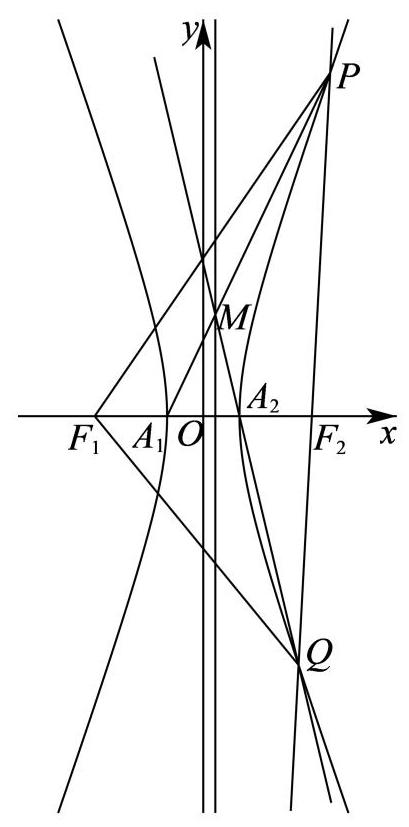
杨浦 · 第20题 ★★★★☆ · 教师预估 已知 A 、 F A\text{ 、 }F A 、 F Γ : x 2 − y 2 = λ \Gamma : {x}^{2} - {y}^{2} = \lambda Γ : x 2 − y 2 = λ λ > 0 \lambda > 0 λ > 0 Γ \Gamma Γ l 0 {l}_{0} l 0
( 1 )求双曲线 Γ \Gamma Γ l 0 {l}_{0} l 0
(2)设 λ = 2 \lambda = 2 λ = 2 Q Q Q l 0 {l}_{0} l 0 F Q {FQ} FQ P P P Γ \Gamma Γ Q Q Q
(3)设 λ = 1 \lambda = 1 λ = 1 A A A Γ \Gamma Γ M M M N N N A M {AM} A M A N {AN} A N l 0 {l}_{0} l 0 C C C D D D △ A M N \bigtriangleup {AMN} △ A MN △ A C D \bigtriangleup {ACD} △ A C D A M {AM} A M
考点： (1)求离心率和渐近线；(2)设渐近线点并代入中点坐标；(3)设互相垂直直线，联立曲线和渐近线比较面积。难度依据： 直线参数与面积比综合计算
展开答案与解析 【答案】 (1) e = 2 ; y = x e = \sqrt{2};y = x e = 2 ; y = x
(2) ( 1 , 1 ) \left( {1,1}\right) ( 1 , 1 )
(3) x − ( 2 − 1 ) y − 1 = 0 x - \left( {\sqrt{2} - 1}\right) y - 1 = 0 x − ( 2 − 1 ) y − 1 = 0
【解析】
【分析】 (1) 借助离心率定义与渐近线定义计算即可得;
(2)设 Q ( m , m ) Q\left( {m, m}\right) Q ( m , m ) P P P
(3)设出直线 A M {AM} A M M M M C C C A M {AM} A M A N {AN} A N N N N D D D
【小问 1 详解】
由 x 2 − y 2 = λ {x}^{2} - {y}^{2} = \lambda x 2 − y 2 = λ x 2 λ − y 2 λ = 1 \frac{{x}^{2}}{\lambda } - \frac{{y}^{2}}{\lambda } = 1 λ x 2 − λ y 2 = 1 a = b = λ a = b = \sqrt{\lambda } a = b = λ c = a 2 + b 2 = 2 λ c = \sqrt{{a}^{2} + {b}^{2}} = \sqrt{2\lambda } c = a 2 + b 2 = 2 λ
故双曲线 Γ \Gamma Γ e = c a = 2 λ λ = 2 e = \frac{c}{a} = \frac{\sqrt{2\lambda }}{\sqrt{\lambda }} = \sqrt{2} e = a c = λ 2 λ = 2
渐近线 l 0 {l}_{0} l 0 y = b a x = λ λ x = x y = \frac{b}{a}x = \frac{\sqrt{\lambda }}{\sqrt{\lambda }}x = x y = a b x = λ λ x = x
【小问 2 详解】
由 λ = 2 \lambda = 2 λ = 2 x 2 2 − y 2 2 = 1 , F ( 2 , 0 ) \frac{{x}^{2}}{2} - \frac{{y}^{2}}{2} = 1, F\left( {2,0}\right) 2 x 2 − 2 y 2 = 1 , F ( 2 , 0 ) Q ( m , m ) Q\left( {m, m}\right) Q ( m , m )
则线段 F Q {FQ} FQ P P P ( 2 + m 2 , m 2 ) \left( {\frac{2 + m}{2},\frac{m}{2}}\right) ( 2 2 + m , 2 m )
有 ( 2 + m 2 ) 2 2 − ( m 2 ) 2 2 = 1 \frac{{\left( \frac{2 + m}{2}\right) }^{2}}{2} - \frac{{\left( \frac{m}{2}\right) }^{2}}{2} = 1 2 ( 2 2 + m ) 2 − 2 ( 2 m ) 2 = 1 m = 1 m = 1 m = 1 Q Q Q ( 1 , 1 ) \left( {1,1}\right) ( 1 , 1 )
【小问 3 详解】
由 λ = 1 \lambda = 1 λ = 1 x 2 − y 2 = 1 , A ( 1 , 0 ) 、 F ( 2 , 0 ) {x}^{2} - {y}^{2} = 1, A\left( {1,0}\right) \text{ 、 }F\left( {\sqrt{2},0}\right) x 2 − y 2 = 1 , A ( 1 , 0 ) 、 F ( 2 , 0 )
由题意可得直线 A M {AM} A M
设直线 A M {AM} A M x = t y + 1 x = {ty} + 1 x = t y + 1 A N {AN} A N x = − 1 t y + 1 x = - \frac{1}{t}y + 1 x = − t 1 y + 1
{ x = t y + 1 x 2 − y 2 = 1 \left\{ \begin{array}{l} x = {ty} + 1 \\ {x}^{2} - {y}^{2} = 1 \end{array}\right. { x = t y + 1 x 2 − y 2 = 1 { x = 1 y = 0 \left\{ \begin{array}{l} x = 1 \\ y = 0 \end{array}\right. { x = 1 y = 0 { x = − t 2 − 1 t 2 − 1 y = − 2 t t 2 − 1 \left\{ \begin{array}{l} x = \frac{-{t}^{2} - 1}{{t}^{2} - 1} \\ y = \frac{-{2t}}{{t}^{2} - 1} \end{array}\right. { x = t 2 − 1 − t 2 − 1 y = t 2 − 1 − 2 t M ( − t 2 − 1 t 2 − 1 , − 2 t t 2 − 1 ) M\left( {\frac{-{t}^{2} - 1}{{t}^{2} - 1},\frac{-{2t}}{{t}^{2} - 1}}\right) M ( t 2 − 1 − t 2 − 1 , t 2 − 1 − 2 t )
由 M M M { − t 2 − 1 t 2 − 1 > 0 − 2 t t 2 − 1 > 0 \left\{ \begin{array}{l} \frac{-{t}^{2} - 1}{{t}^{2} - 1} > 0 \\ \frac{-{2t}}{{t}^{2} - 1} > 0 \end{array}\right. { t 2 − 1 − t 2 − 1 > 0 t 2 − 1 − 2 t > 0 0 < t < 1 0 < t < 1 0 < t < 1
{ x = t y + 1 y = x , 解得 { x = 1 1 − t y = 1 1 − t , 即 C ( 1 1 − t , 1 1 − t ) , \left\{ {\begin{array}{l} x = {ty} + 1 \\ y = x \end{array},\text{ 解得 }\left\{ {\begin{array}{l} x = \frac{1}{1 - t} \\ y = \frac{1}{1 - t} \end{array},\text{ 即 }C\left( {\frac{1}{1 - t},\frac{1}{1 - t}}\right) ,}\right. }\right. { x = t y + 1 y = x , 解得 { x = 1 − t 1 y = 1 − t 1 , 即 C ( 1 − t 1 , 1 − t 1 ) ,
则 N ( − ( − 1 t ) 2 − 1 ( − 1 t ) 2 − 1 , − 2 ( − 1 t ) ( − 1 t ) 2 − 1 ) N\left( {\frac{-{\left( -\frac{1}{t}\right) }^{2} - 1}{{\left( -\frac{1}{t}\right) }^{2} - 1},\frac{-2\left( {-\frac{1}{t}}\right) }{{\left( -\frac{1}{t}\right) }^{2} - 1}}\right) N ( ( − t 1 ) 2 − 1 − ( − t 1 ) 2 − 1 , ( − t 1 ) 2 − 1 − 2 ( − t 1 ) ) N ( − 1 − t 2 1 − t 2 , 2 t 1 − t 2 ) N\left( {\frac{-1 - {t}^{2}}{1 - {t}^{2}},\frac{2t}{1 - {t}^{2}}}\right) N ( 1 − t 2 − 1 − t 2 , 1 − t 2 2 t )
D ( 1 1 − ( − 1 t ) , 1 1 − ( − 1 t ) ) D\left( {\frac{1}{1 - \left( {-\frac{1}{t}}\right) },\frac{1}{1 - \left( {-\frac{1}{t}}\right) }}\right) D ( 1 − ( − t 1 ) 1 , 1 − ( − t 1 ) 1 ) D ( t t + 1 , t t + 1 ) D\left( {\frac{t}{t + 1},\frac{t}{t + 1}}\right) D ( t + 1 t , t + 1 t )
S △ A M N S △ A C D = 1 2 ⋅ ∣ A M ∣ ⋅ ∣ A N ∣ 1 2 ⋅ ∣ A C ∣ ⋅ ∣ A D ∣ = ∣ A M ∣ ⋅ ∣ A N ∣ ∣ A C ∣ ⋅ ∣ A D ∣ = ∣ A M ∣ ∣ A C ∣ ⋅ ∣ A N ∣ ∣ A D ∣ = ∣ y M y C ∣ ⋅ ∣ y N y D ∣ \frac{{S}_{\bigtriangleup {AMN}}}{{S}_{\bigtriangleup {ACD}}} = \frac{\frac{1}{2} \cdot \left| {AM}\right| \cdot \left| {AN}\right| }{\frac{1}{2} \cdot \left| {AC}\right| \cdot \left| {AD}\right| } = \frac{\left| {AM}\right| \cdot \left| {AN}\right| }{\left| {AC}\right| \cdot \left| {AD}\right| } = \frac{\left| AM\right| }{\left| AC\right| } \cdot \frac{\left| AN\right| }{\left| AD\right| } = \left| \frac{{y}_{M}}{{y}_{C}}\right| \cdot \left| \frac{{y}_{N}}{{y}_{D}}\right| S △ A C D S △ A MN = 2 1 ⋅ ∣ A C ∣ ⋅ ∣ A D ∣ 2 1 ⋅ ∣ A M ∣ ⋅ ∣ A N ∣ = ∣ A C ∣ ⋅ ∣ A D ∣ ∣ A M ∣ ⋅ ∣ A N ∣ = ∣ A C ∣ ∣ A M ∣ ⋅ ∣ A D ∣ ∣ A N ∣ = y C y M ⋅ y D y N
= ∣ − 2 t t 2 − 1 1 1 − t ∣ ⋅ ∣ 2 t 1 − t 2 t t + 1 ∣ = ∣ 2 t t + 1 ∣ ⋅ ∣ 2 1 − t ∣ = 4 t 1 − t 2 = 2 = \left| \frac{\frac{-{2t}}{{t}^{2} - 1}}{\frac{1}{1 - t}}\right| \cdot \left| \frac{\frac{2t}{1 - {t}^{2}}}{\frac{t}{t + 1}}\right| = \left| \frac{2t}{t + 1}\right| \cdot \left| \frac{2}{1 - t}\right| = \frac{4t}{1 - {t}^{2}} = 2 = 1 − t 1 t 2 − 1 − 2 t ⋅ t + 1 t 1 − t 2 2 t = t + 1 2 t ⋅ 1 − t 2 = 1 − t 2 4 t = 2
即 t 2 + 2 t − 1 = 0 {t}^{2} + {2t} - 1 = 0 t 2 + 2 t − 1 = 0 t = − 1 ± 2 t = - 1 \pm \sqrt{2} t = − 1 ± 2 0 < t < 1 0 < t < 1 0 < t < 1 t = 2 − 1 t = \sqrt{2} - 1 t = 2 − 1
即直线 A M {AM} A M x = ( 2 − 1 ) y + 1 x = \left( {\sqrt{2} - 1}\right) y + 1 x = ( 2 − 1 ) y + 1 x − ( 2 − 1 ) y − 1 = 0 x - \left( {\sqrt{2} - 1}\right) y - 1 = 0 x − ( 2 − 1 ) y − 1 = 0
松江 · 第20题 ★★★★★ · 教师预估 已知椭圆 Γ : x 2 a 2 + y 2 3 = 1 ( a > 0 ) \Gamma : \frac{{x}^{2}}{{a}^{2}} + \frac{{y}^{2}}{3} = 1\left( {a > 0}\right) Γ : a 2 x 2 + 3 y 2 = 1 ( a > 0 ) F ( − 1 , 0 ) F\left( {-1,0}\right) F ( − 1 , 0 ) Q ( − 4 , 0 ) Q\left( {-4,0}\right) Q ( − 4 , 0 ) l l l Γ \Gamma Γ M , N M, N M , N
(1)求椭圆下的离心率；
(2)设直线 M F 、 N F {MF}\text{ 、 }{NF} MF 、 NF k 1 , k 2 {k}_{1},{k}_{2} k 1 , k 2 k 1 + k 2 {k}_{1} + {k}_{2} k 1 + k 2
(3)若点 E E E ∣ E M ∣ = ∣ E N ∣ = ∣ E F ∣ \left| {EM}\right| = \left| {EN}\right| = \left| {EF}\right| ∣ EM ∣ = ∣ EN ∣ = ∣ EF ∣ D D D M D ⊥ x {MD} \bot x M D ⊥ x E F {EF} EF D Q {DQ} D Q
考点： (1)求椭圆离心率；(2)直线联立椭圆用韦达求焦点斜率和；(3)利用三角形外心与圆方程求斜率积。难度依据： 椭圆弦、外心及对称关系的代数计算
展开答案与解析 【答案】 (1) 1 2 \frac{1}{2} 2 1
(2) 0 (3) 是, -1
【解析】
【分析】 (1) 根据已知确定椭圆参数, 即可求离心率;
(2)设直线 l : y = k ( x + 4 ) , k ≠ 0 , M ( x 1 , y 1 ) , N ( x 2 , y 2 ) l : y = k\left( {x + 4}\right) , k \neq 0, M\left( {{x}_{1},{y}_{1}}\right) , N\left( {{x}_{2},{y}_{2}}\right) l : y = k ( x + 4 ) , k = 0 , M ( x 1 , y 1 ) , N ( x 2 , y 2 ) k 1 + k 2 = k ( 2 + 3 x 1 + 1 + 3 x 2 + 1 ) {k}_{1} + {k}_{2} = k\left( {2 + \frac{3}{{x}_{1} + 1} + \frac{3}{{x}_{2} + 1}}\right) k 1 + k 2 = k ( 2 + x 1 + 1 3 + x 2 + 1 3 )
(3)由题设 E E E △ M N F \bigtriangleup {MNF} △ MNF M ( x 1 , y 1 ) M\left( {{x}_{1},{y}_{1}}\right) M ( x 1 , y 1 ) D ( x 1 , − y 1 ) D\left( {{x}_{1}, - {y}_{1}}\right) D ( x 1 , − y 1 ) k D Q = − k {k}_{DQ} = - k k D Q = − k x 2 + y 2 + D ′ x + E ′ y + F ′ = 0 {x}^{2} + {y}^{2} + {D}^{\prime }x + {E}^{\prime }y + {F}^{\prime } = 0 x 2 + y 2 + D ′ x + E ′ y + F ′ = 0 l : y = k ( x + 4 ) l : y = k\left( {x + 4}\right) l : y = k ( x + 4 )
其与(2)中方程同解得到等比例关系求得 E ′ = − 3 k ( 3 + 4 k 2 ) , D ′ = 8 k 2 + 3 3 + 4 k 2 {E}^{\prime } = - \frac{3}{k\left( {3 + 4{k}^{2}}\right) },{D}^{\prime } = \frac{8{k}^{2} + 3}{3 + 4{k}^{2}} E ′ = − k ( 3 + 4 k 2 ) 3 , D ′ = 3 + 4 k 2 8 k 2 + 3 E E E k E F = 1 k {k}_{EF} = \frac{1}{k} k EF = k 1
【小问 1 详解】
由题设 c = 1 , b 2 = 3 c = 1,{b}^{2} = 3 c = 1 , b 2 = 3 a 2 = b 2 + c 2 = 4 ⇒ a = 2 {a}^{2} = {b}^{2} + {c}^{2} = 4 \Rightarrow a = 2 a 2 = b 2 + c 2 = 4 ⇒ a = 2 e = c a = 1 2 e = \frac{c}{a} = \frac{1}{2} e = a c = 2 1
【小问 2 详解】
由 (1) 知, Γ : x 2 4 + y 2 3 = 1 \Gamma : \frac{{x}^{2}}{4} + \frac{{y}^{2}}{3} = 1 Γ : 4 x 2 + 3 y 2 = 1 3 x 2 + 4 y 2 = 12 3{x}^{2} + 4{y}^{2} = {12} 3 x 2 + 4 y 2 = 12
设直线 l : y = k ( x + 4 ) , k ≠ 0 , M ( x 1 , y 1 ) , N ( x 2 , y 2 ) l : y = k\left( {x + 4}\right) , k \neq 0, M\left( {{x}_{1},{y}_{1}}\right) , N\left( {{x}_{2},{y}_{2}}\right) l : y = k ( x + 4 ) , k = 0 , M ( x 1 , y 1 ) , N ( x 2 , y 2 )
联立得 ( 3 + 4 k 2 ) x 2 + 32 k 2 x + 64 k 2 − 12 = 0 \left( {3 + 4{k}^{2}}\right) {x}^{2} + {32}{k}^{2}x + {64}{k}^{2} - {12} = 0 ( 3 + 4 k 2 ) x 2 + 32 k 2 x + 64 k 2 − 12 = 0 x 1 + x 2 = − 32 k 2 3 + 4 k 2 , x 1 x 2 = 64 k 2 − 12 3 + 4 k 2 {x}_{1} + {x}_{2} = - \frac{{32}{k}^{2}}{3 + 4{k}^{2}},{x}_{1}{x}_{2} = \frac{{64}{k}^{2} - {12}}{3 + 4{k}^{2}} x 1 + x 2 = − 3 + 4 k 2 32 k 2 , x 1 x 2 = 3 + 4 k 2 64 k 2 − 12
k 1 + k 2 = y 1 x 1 + 1 + y 2 x 2 + 1 = k ( x 1 + 4 ) x 1 + 1 + k ( x 2 + 4 ) x 2 + 1 = k ( 2 + 3 x 1 + 1 + 3 x 2 + 1 ) , {k}_{1} + {k}_{2} = \frac{{y}_{1}}{{x}_{1} + 1} + \frac{{y}_{2}}{{x}_{2} + 1} = \frac{k\left( {{x}_{1} + 4}\right) }{{x}_{1} + 1} + \frac{k\left( {{x}_{2} + 4}\right) }{{x}_{2} + 1} = k\left( {2 + \frac{3}{{x}_{1} + 1} + \frac{3}{{x}_{2} + 1}}\right) , k 1 + k 2 = x 1 + 1 y 1 + x 2 + 1 y 2 = x 1 + 1 k ( x 1 + 4 ) + x 2 + 1 k ( x 2 + 4 ) = k ( 2 + x 1 + 1 3 + x 2 + 1 3 ) ,
3 x 1 + 1 + 3 x 2 + 1 = 3 ( x 1 + x 2 + 2 ) x 1 x 2 + x 1 + x 2 + 1 = 2 − 8 k 2 4 k 2 − 1 = − 2 , \frac{3}{{x}_{1} + 1} + \frac{3}{{x}_{2} + 1} = \frac{3\left( {{x}_{1} + {x}_{2} + 2}\right) }{{x}_{1}{x}_{2} + {x}_{1} + {x}_{2} + 1} = \frac{2 - 8{k}^{2}}{4{k}^{2} - 1} = - 2, x 1 + 1 3 + x 2 + 1 3 = x 1 x 2 + x 1 + x 2 + 1 3 ( x 1 + x 2 + 2 ) = 4 k 2 − 1 2 − 8 k 2 = − 2 ,
所以 k 1 + k 2 = k ( 2 − 2 ) = 0 {k}_{1} + {k}_{2} = k\left( {2 - 2}\right) = 0 k 1 + k 2 = k ( 2 − 2 ) = 0
【小问 3 详解】
由 ∣ E M ∣ = ∣ E N ∣ = ∣ E F ∣ \left| {EM}\right| = \left| {EN}\right| = \left| {EF}\right| ∣ EM ∣ = ∣ EN ∣ = ∣ EF ∣ E E E △ M N F \bigtriangleup {MNF} △ MNF
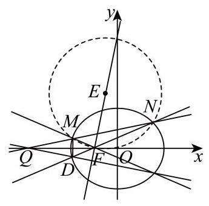
由 M ( x 1 , y 1 ) M\left( {{x}_{1},{y}_{1}}\right) M ( x 1 , y 1 ) D ( x 1 , − y 1 ) D\left( {{x}_{1}, - {y}_{1}}\right) D ( x 1 , − y 1 ) k D Q = − y 1 x 1 + 4 = − k {k}_{DQ} = \frac{-{y}_{1}}{{x}_{1} + 4} = - k k D Q = x 1 + 4 − y 1 = − k
设过 M , N , F M, N, F M , N , F x 2 + y 2 + D ′ x + E ′ y + F ′ = 0 {x}^{2} + {y}^{2} + {D}^{\prime }x + {E}^{\prime }y + {F}^{\prime } = 0 x 2 + y 2 + D ′ x + E ′ y + F ′ = 0
过 F ( − 1 , 0 ) F\left( {-1,0}\right) F ( − 1 , 0 ) 1 − D ′ + F ′ = 0 ⇒ F ′ = D ′ − 1 1 - {D}^{\prime } + {F}^{\prime } = 0 \Rightarrow {F}^{\prime } = {D}^{\prime } - 1 1 − D ′ + F ′ = 0 ⇒ F ′ = D ′ − 1
联立圆与直线 l : y = k ( x + 4 ) l : y = k\left( {x + 4}\right) l : y = k ( x + 4 )
( 1 + k 2 ) x 2 + ( 8 k 2 + D ′ + E ′ k ) x + 16 k 2 + 4 E ′ k + D ′ − 1 = 0 , \left( {1 + {k}^{2}}\right) {x}^{2} + \left( {8{k}^{2} + {D}^{\prime } + {E}^{\prime }k}\right) x + {16}{k}^{2} + 4{E}^{\prime }k + {D}^{\prime } - 1 = 0, ( 1 + k 2 ) x 2 + ( 8 k 2 + D ′ + E ′ k ) x + 16 k 2 + 4 E ′ k + D ′ − 1 = 0 ,
上述方程与 ( 3 + 4 k 2 ) x 2 + 32 k 2 x + 64 k 2 − 12 = 0 \left( {3 + 4{k}^{2}}\right) {x}^{2} + {32}{k}^{2}x + {64}{k}^{2} - {12} = 0 ( 3 + 4 k 2 ) x 2 + 32 k 2 x + 64 k 2 − 12 = 0
所以 1 + k 2 3 + 4 k 2 = 8 k 2 + D ′ + E ′ k 32 k 2 = 16 k 2 + 4 E ′ k + D ′ − 1 64 k 2 − 12 \frac{1 + {k}^{2}}{3 + 4{k}^{2}} = \frac{8{k}^{2} + {D}^{\prime } + {E}^{\prime }k}{{32}{k}^{2}} = \frac{{16}{k}^{2} + 4{E}^{\prime }k + {D}^{\prime } - 1}{{64}{k}^{2} - {12}} 3 + 4 k 2 1 + k 2 = 32 k 2 8 k 2 + D ′ + E ′ k = 64 k 2 − 12 16 k 2 + 4 E ′ k + D ′ − 1
E ′ = − 3 k ( 3 + 4 k 2 ) , D ′ = 8 k 2 + 3 3 + 4 k 2 , {E}^{\prime } = - \frac{3}{k\left( {3 + 4{k}^{2}}\right) },{D}^{\prime } = \frac{8{k}^{2} + 3}{3 + 4{k}^{2}}, E ′ = − k ( 3 + 4 k 2 ) 3 , D ′ = 3 + 4 k 2 8 k 2 + 3 ,
外心 E ( − D ′ 2 , − E ′ 2 ) E\left( {-\frac{{D}^{\prime }}{2}, - \frac{{E}^{\prime }}{2}}\right) E ( − 2 D ′ , − 2 E ′ ) k E F = − E ′ 2 − D ′ 2 + 1 = E ′ D ′ − 2 = − 3 k ( 3 + 4 k 2 ) 8 k 2 + 3 3 + 4 k 2 − 2 = − 3 k 8 k 2 + 3 − 6 − 8 k 2 = 1 k {k}_{EF} = \frac{-\frac{{E}^{\prime }}{2}}{-\frac{{D}^{\prime }}{2} + 1} = \frac{{E}^{\prime }}{{D}^{\prime } - 2} = \frac{-\frac{3}{k\left( {3 + 4{k}^{2}}\right) }}{\frac{8{k}^{2} + 3}{3 + 4{k}^{2}} - 2} = \frac{-\frac{3}{k}}{8{k}^{2} + 3 - 6 - 8{k}^{2}} = \frac{1}{k} k EF = − 2 D ′ + 1 − 2 E ′ = D ′ − 2 E ′ = 3 + 4 k 2 8 k 2 + 3 − 2 − k ( 3 + 4 k 2 ) 3 = 8 k 2 + 3 − 6 − 8 k 2 − k 3 = k 1 k E F k D Q = 1 k ⋅ ( − k ) = − 1 {k}_{EF}{k}_{DQ} = \frac{1}{k} \cdot \left( {-k}\right) = - 1 k EF k D Q = k 1 ⋅ ( − k ) = − 1
浦东 · 第20题 ★★★★★ · 教师预估 已知双曲线 C : x 2 − y 2 b 2 = 1 ( b > 0 ) C : {x}^{2} - \frac{{y}^{2}}{{b}^{2}} = 1\left( {b > 0}\right) C : x 2 − b 2 y 2 = 1 ( b > 0 ) A A A D ( 2 , 0 ) D\left( {2,0}\right) D ( 2 , 0 ) l l l C C C M M M N N N M M M
(1)若双曲线 C C C 2 5 2\sqrt{5} 2 5 C C C e e e
(2)若 b = 3 b = \sqrt{3} b = 3 △ M A D \bigtriangleup {MAD} △ M A D M M M
(3)若双曲线 C C C x + 2 y = 0 x + \sqrt{2}y = 0 x + 2 y = 0 M M M N N N C C C λ ( λ < 4 3 ) \lambda \left( {\lambda < \frac{4}{3}}\right) λ ( λ < 3 4 ) M N → = λ M D → \overrightarrow{MN} = \lambda \overrightarrow{MD} MN = λ M D l l l
考点： (1)焦距求离心率；(2)分类讨论直角并排除渐近线平行；(3)韦达与弦上向量比例求倾斜角范围。难度依据： 直角分类、双交点限制及比例范围
展开答案与解析 【答案】 (1) 5 \sqrt{5} 5
(2) ( 2 , 3 ) \left( {2,3}\right) ( 2 , 3 )
(3) ( arctan 2 2 , arctan 10 2 ) \left( {\arctan \frac{\sqrt{2}}{2},\arctan \frac{\sqrt{10}}{2}}\right) ( arctan 2 2 , arctan 2 10 )
【解析】
【分析】 (1) 根据焦距和离心率公式求解即可;
(2)分 ∠ A D M = π 2 \angle {ADM} = \frac{\pi }{2} ∠ A D M = 2 π ∠ D M A = π 2 \angle {DMA} = \frac{\pi }{2} ∠ D M A = 2 π
(3)根据渐近线方程得双曲线的方程，设直线 l l l x = m y + 2 x = {my} + 2 x = m y + 2 y 1 + y 2 , y 1 y 2 {y}_{1} + {y}_{2},{y}_{1}{y}_{2} y 1 + y 2 , y 1 y 2 M N → = λ M D → \overrightarrow{MN} = \lambda \overrightarrow{MD} MN = λ M D y 2 y 1 \frac{{y}_{2}}{{y}_{1}} y 1 y 2 ( y 1 + y 2 ) 2 y 1 y 2 \frac{{\left( {y}_{1} + {y}_{2}\right) }^{2}}{{y}_{1}{y}_{2}} y 1 y 2 ( y 1 + y 2 ) 2 m m m
【小问 1 详解】
由题， 2 c = 2 5 {2c} = 2\sqrt{5} 2 c = 2 5 c = 5 c = \sqrt{5} c = 5
故 e = c a = 5 e = \frac{c}{a} = \sqrt{5} e = a c = 5
【小问 2 详解】
因为点 M M M ∠ M A D \angle {MAD} ∠ M A D
若 ∠ A D M = π 2 \angle {ADM} = \frac{\pi }{2} ∠ A D M = 2 π x = 2 x = 2 x = 2 C : x 2 − y 2 3 = 1 C : {x}^{2} - \frac{{y}^{2}}{3} = 1 C : x 2 − 3 y 2 = 1 M ( 2 , 3 ) M\left( {2,3}\right) M ( 2 , 3 )
若 ∠ D M A = π 2 \angle {DMA} = \frac{\pi }{2} ∠ D M A = 2 π M ( x 0 , y 0 ) M\left( {{x}_{0},{y}_{0}}\right) M ( x 0 , y 0 ) M D → = ( 2 − x 0 , − y 0 ) , M A → = ( − 1 − x 0 , − y 0 ) \overrightarrow{MD} = \left( {2 - {x}_{0}, - {y}_{0}}\right) ,\overrightarrow{MA} = \left( {-1 - {x}_{0}, - {y}_{0}}\right) M D = ( 2 − x 0 , − y 0 ) , M A = ( − 1 − x 0 , − y 0 )
则 M D → ⋅ M A → = x 0 2 − x 0 − 2 + y 0 2 = 0 \overrightarrow{MD} \cdot \overrightarrow{MA} = {x}_{0}^{2} - {x}_{0} - 2 + {y}_{0}^{2} = 0 M D ⋅ M A = x 0 2 − x 0 − 2 + y 0 2 = 0
又因为点 M M M x 0 2 − y 0 2 3 = 1 {x}_{0}^{2} - \frac{{y}_{0}^{2}}{3} = 1 x 0 2 − 3 y 0 2 = 1 M ( 5 4 , 3 3 4 ) M\left( {\frac{5}{4},\frac{3\sqrt{3}}{4}}\right) M ( 4 5 , 4 3 3 ) k D M = 3 3 4 5 4 − 2 = − 3 {k}_{DM} = \frac{\frac{3\sqrt{3}}{4}}{\frac{5}{4} - 2} = - \sqrt{3} k D M = 4 5 − 2 4 3 3 = − 3
D M {DM} D M
综上,点 M M M ( 2 , 3 ) \left( {2,3}\right) ( 2 , 3 )
【小问 3 详解】 由题可得,双曲线 C : x 2 − 2 y 2 = 1 C : {x}^{2} - 2{y}^{2} = 1 C : x 2 − 2 y 2 = 1
当直线 l l l M N → = 2 M D → \overrightarrow{MN} = 2\overrightarrow{MD} MN = 2 M D λ < 4 3 \lambda < \frac{4}{3} λ < 3 4
所以直线 l l l
又 M N → = λ M D → \overrightarrow{MN} = \lambda \overrightarrow{MD} MN = λ M D M , D , N M, D, N M , D , N M , N M, N M , N l l l 0 , 1 < λ < 4 3 0,1 < \lambda < \frac{4}{3} 0 , 1 < λ < 3 4
设直线 l l l x = m y + 2 , M ( x 1 , y 1 ) 、 N ( x 2 , y 2 ) x = {my} + 2, M\left( {{x}_{1},{y}_{1}}\right) \text{ 、 }N\left( {{x}_{2},{y}_{2}}\right) x = m y + 2 , M ( x 1 , y 1 ) 、 N ( x 2 , y 2 ) y 1 > 0 , y 2 < 0 {y}_{1} > 0,{y}_{2} < 0 y 1 > 0 , y 2 < 0
联立方程 { x = m y + 2 x 2 − 2 y 2 = 1 \left\{ \begin{array}{l} x = {my} + 2 \\ {x}^{2} - 2{y}^{2} = 1 \end{array}\right. { x = m y + 2 x 2 − 2 y 2 = 1 ( m 2 − 2 ) y 2 + 4 m y + 3 = 0 \left( {{m}^{2} - 2}\right) {y}^{2} + {4my} + 3 = 0 ( m 2 − 2 ) y 2 + 4 m y + 3 = 0
显然 m 2 − 2 ≠ 0 , Δ = ( 4 m ) 2 − 4 ( m 2 − 2 ) × 3 = 4 m 2 + 24 > 0 {m}^{2} - 2 \neq 0,\Delta = {\left( 4m\right) }^{2} - 4\left( {{m}^{2} - 2}\right) \times 3 = 4{m}^{2} + {24} > 0 m 2 − 2 = 0 , Δ = ( 4 m ) 2 − 4 ( m 2 − 2 ) × 3 = 4 m 2 + 24 > 0
y 1 + y 2 = − 4 m m 2 − 2 > 0 , y 1 y 2 = 3 m 2 − 2 < 0 {y}_{1} + {y}_{2} = \frac{-{4m}}{{m}^{2} - 2} > 0,\;{y}_{1}{y}_{2} = \frac{3}{{m}^{2} - 2} < 0 y 1 + y 2 = m 2 − 2 − 4 m > 0 , y 1 y 2 = m 2 − 2 3 < 0 0 < m < 2 0 < m < \sqrt{2} 0 < m < 2
由 M N → = λ M D → \overrightarrow{MN} = \lambda \overrightarrow{MD} MN = λ M D y 2 − y 1 = − λ y 1 {y}_{2} - {y}_{1} = - \lambda {y}_{1} y 2 − y 1 = − λ y 1 1 < λ < 4 3 1 < \lambda < \frac{4}{3} 1 < λ < 3 4
故 y 2 y 1 = 1 − λ ∈ ( − 1 3 , 0 ) \frac{{y}_{2}}{{y}_{1}} = 1 - \lambda \in \left( {-\frac{1}{3},0}\right) y 1 y 2 = 1 − λ ∈ ( − 3 1 , 0 )
因此 ( y 1 + y 2 ) 2 y 1 y 2 = y 2 y 1 + y 1 y 2 + 2 \frac{{\left( {y}_{1} + {y}_{2}\right) }^{2}}{{y}_{1}{y}_{2}} = \frac{{y}_{2}}{{y}_{1}} + \frac{{y}_{1}}{{y}_{2}} + 2 y 1 y 2 ( y 1 + y 2 ) 2 = y 1 y 2 + y 2 y 1 + 2
根据对勾函数 y = x + 1 x y = x + \frac{1}{x} y = x + x 1 y y y ( − 1 , 0 ) \left( {-1,0}\right) ( − 1 , 0 )
可知 ( y 1 + y 2 ) 2 y 1 y 2 = y 2 y 1 + y 1 y 2 + 2 < − 1 3 + ( − 3 ) + 2 = − 4 3 \frac{{\left( {y}_{1} + {y}_{2}\right) }^{2}}{{y}_{1}{y}_{2}} = \frac{{y}_{2}}{{y}_{1}} + \frac{{y}_{1}}{{y}_{2}} + 2 < - \frac{1}{3} + \left( {-3}\right) + 2 = - \frac{4}{3} y 1 y 2 ( y 1 + y 2 ) 2 = y 1 y 2 + y 2 y 1 + 2 < − 3 1 + ( − 3 ) + 2 = − 3 4
又 ( y 1 + y 2 ) 2 y 1 y 2 = ( − 4 m m 2 − 2 ) 2 ⋅ m 2 − 2 3 = 16 3 ⋅ m 2 m 2 − 2 \frac{{\left( {y}_{1} + {y}_{2}\right) }^{2}}{{y}_{1}{y}_{2}} = {\left( -\frac{4m}{{m}^{2} - 2}\right) }^{2} \cdot \frac{{m}^{2} - 2}{3} = \frac{16}{3} \cdot \frac{{m}^{2}}{{m}^{2} - 2} y 1 y 2 ( y 1 + y 2 ) 2 = ( − m 2 − 2 4 m ) 2 ⋅ 3 m 2 − 2 = 3 16 ⋅ m 2 − 2 m 2
故 16 3 ⋅ m 2 m 2 − 2 < − 4 3 \frac{16}{3} \cdot \frac{{m}^{2}}{{m}^{2} - 2} < - \frac{4}{3} 3 16 ⋅ m 2 − 2 m 2 < − 3 4 2 10 < m < 2 \frac{2}{\sqrt{10}} < m < \sqrt{2} 10 2 < m < 2
所以，直线 l l l ( 2 2 , 10 2 ) \left( {\frac{\sqrt{2}}{2},\frac{\sqrt{10}}{2}}\right) ( 2 2 , 2 10 )
直线 l l l ( arctan 2 2 , arctan 10 2 ) \left( {\arctan \frac{\sqrt{2}}{2},\arctan \frac{\sqrt{10}}{2}}\right) ( arctan 2 2 , arctan 2 10 )
虹口 · 第20题 ★★★★☆ · 教师预估 设椭圆 Γ : x 2 4 + y 2 = 1 \Gamma : \frac{{x}^{2}}{4} + {y}^{2} = 1 Γ : 4 x 2 + y 2 = 1 A A A
(1)求 Γ \Gamma Γ
(2)设 Γ \Gamma Γ F F F B B B P P P Γ \Gamma Γ y y y A B → / / F P → \overrightarrow{AB}//\overrightarrow{FP} A B // FP P P P
(3)设直线 l : x − y + m = 0 l : x - y + m = 0 l : x − y + m = 0 l l l Γ \Gamma Γ C C C D D D A A A C D {CD} C D m m m
考点： (1) 椭圆离心率；(2) 向量平行转直线与椭圆交点；(3) 点在直径圆外转数量积及参数范围。难度依据： 椭圆离心率焦点弦和直径圆；平行坐标与点在圆外的数量积
展开答案与解析 【答案】 (1) 3 2 \frac{\sqrt{3}}{2} 2 3
(2) x = 5 − 3 2 x = \frac{\sqrt{5} - \sqrt{3}}{2} x = 2 5 − 3
(3) m ∈ ( − 5 , 6 5 ) ∪ ( 2 , 5 ) m \in \left( {-\sqrt{5},\frac{6}{5}}\right) \cup \left( {2,\sqrt{5}}\right) m ∈ ( − 5 , 5 6 ) ∪ ( 2 , 5 )
【解析】
【小问 1 详解】
由椭圆方程可得 a = 2 , b = 1 , c = a 2 − b 2 = 3 a = 2, b = 1, c = \sqrt{{a}^{2} - {b}^{2}} = \sqrt{3} a = 2 , b = 1 , c = a 2 − b 2 = 3 e = c a = 3 2 e = \frac{c}{a} = \frac{\sqrt{3}}{2} e = a c = 2 3
【小问 2 详解】
由条件可知 A ( − 2 , 0 ) , B ( 0 , 1 ) , F ( − 3 , 0 ) A\left( {-2,0}\right) , B\left( {0,1}\right) , F\left( {-\sqrt{3},0}\right) A ( − 2 , 0 ) , B ( 0 , 1 ) , F ( − 3 , 0 )
设直线 A B {AB} A B k A B {k}_{AB} k A B F P {FP} FP k F P {k}_{FP} k FP
k A B = 1 − 0 0 + 2 = 1 2 {k}_{AB} = \frac{1 - 0}{0 + 2} = \frac{1}{2} k A B = 0 + 2 1 − 0 = 2 1 A B → / / F P → \overrightarrow{AB}//\overrightarrow{FP} A B // FP k F P = 1 2 {k}_{FP} = \frac{1}{2} k FP = 2 1
所以直线 F P {FP} FP y = 1 2 ( x + 3 ) y = \frac{1}{2}\left( {x + \sqrt{3}}\right) y = 2 1 ( x + 3 )
联立椭圆: { x 2 4 + y 2 = 1 y = 1 2 ( x + 3 ) ⇒ x 2 + ( x + 3 ) 2 = 4 ⇒ 2 x 2 + 2 3 x − 1 = 0 \left\{ {\begin{matrix} \frac{{x}^{2}}{4} + {y}^{2} = 1 \\ y = \frac{1}{2}\left( {x + \sqrt{3}}\right) \end{matrix} \Rightarrow {x}^{2} + {\left( x + \sqrt{3}\right) }^{2} = 4 \Rightarrow 2{x}^{2} + 2\sqrt{3}x - 1 = 0}\right. { 4 x 2 + y 2 = 1 y = 2 1 ( x + 3 ) ⇒ x 2 + ( x + 3 ) 2 = 4 ⇒ 2 x 2 + 2 3 x − 1 = 0
所以 x = 5 − 3 2 x = \frac{\sqrt{5} - \sqrt{3}}{2} x = 2 5 − 3 x = − 3 − 5 2 x = \frac{-\sqrt{3} - \sqrt{5}}{2} x = 2 − 3 − 5
又因为点 P P P y y y P P P x = 5 − 3 2 x = \frac{\sqrt{5} - \sqrt{3}}{2} x = 2 5 − 3
【小问 3 详解】
设 C ( x 1 , y 1 ) , D ( x 2 , y 2 ) C\left( {{x}_{1},{y}_{1}}\right) , D\left( {{x}_{2},{y}_{2}}\right) C ( x 1 , y 1 ) , D ( x 2 , y 2 )
{ x − y + m = 0 x 2 4 + y 2 = 1 ⇒ ( y − m ) 2 4 + y 2 = 1 ⇒ 5 y 2 − 2 m y + m 2 − 4 = 0 , \left\{ {\begin{array}{l} x - y + m = 0 \\ \frac{{x}^{2}}{4} + {y}^{2} = 1 \end{array} \Rightarrow \frac{{\left( y - m\right) }^{2}}{4} + {y}^{2} = 1 \Rightarrow 5{y}^{2} - {2my} + {m}^{2} - 4 = 0,}\right. { x − y + m = 0 4 x 2 + y 2 = 1 ⇒ 4 ( y − m ) 2 + y 2 = 1 ⇒ 5 y 2 − 2 m y + m 2 − 4 = 0 ,
先确定有两个交点,即 Δ = ( − 2 m ) 2 − 4 × 5 × ( m 2 − 4 ) > 0 \Delta = {\left( -2m\right) }^{2} - 4 \times 5 \times \left( {{m}^{2} - 4}\right) > 0 Δ = ( − 2 m ) 2 − 4 × 5 × ( m 2 − 4 ) > 0
即 4 m 2 − 20 m 2 + 80 > 0 ⇒ − 16 m 2 + 80 > 0 ⇒ m 2 < 5 4{m}^{2} - {20}{m}^{2} + {80} > 0 \Rightarrow - {16}{m}^{2} + {80} > 0 \Rightarrow {m}^{2} < 5 4 m 2 − 20 m 2 + 80 > 0 ⇒ − 16 m 2 + 80 > 0 ⇒ m 2 < 5
所以 − 5 < m < 5 - \sqrt{5} < m < \sqrt{5} − 5 < m < 5
因为圆上任意一点与直径两端点连线所成的角为直角,
而点 A A A C D {CD} C D ∠ C A D < 90 ∘ \angle {CAD} < {90}^{ \circ } ∠ C A D < 90 ∘ A C → ⋅ A D → > 0 \overrightarrow{AC} \cdot \overrightarrow{AD} > 0 A C ⋅ A D > 0
由 A C → = ( x 1 + 2 , y 1 ) , A D → = ( x 2 + 2 , y 2 ) \overrightarrow{AC} = \left( {{x}_{1} + 2,{y}_{1}}\right) ,\overrightarrow{AD} = \left( {{x}_{2} + 2,{y}_{2}}\right) A C = ( x 1 + 2 , y 1 ) , A D = ( x 2 + 2 , y 2 )
所以 A C → ⋅ A D → = ( x 1 + 2 ) ( x 2 + 2 ) + y 1 y 2 > 0 \overrightarrow{AC} \cdot \overrightarrow{AD} = \left( {{x}_{1} + 2}\right) \left( {{x}_{2} + 2}\right) + {y}_{1}{y}_{2} > 0 A C ⋅ A D = ( x 1 + 2 ) ( x 2 + 2 ) + y 1 y 2 > 0
即 2 y 1 y 2 − ( m − 2 ) ( y 1 + y 2 ) + ( m − 2 ) 2 > 0 2{y}_{1}{y}_{2} - \left( {m - 2}\right) \left( {{y}_{1} + {y}_{2}}\right) + {\left( m - 2\right) }^{2} > 0 2 y 1 y 2 − ( m − 2 ) ( y 1 + y 2 ) + ( m − 2 ) 2 > 0
将 y 1 + y 2 = 2 m 5 , y 1 y 2 = m 2 − 4 5 {y}_{1} + {y}_{2} = \frac{2m}{5},{y}_{1}{y}_{2} = \frac{{m}^{2} - 4}{5} y 1 + y 2 = 5 2 m , y 1 y 2 = 5 m 2 − 4
2 ⋅ m 2 − 4 5 − ( m − 2 ) ⋅ 2 m 5 + ( m − 2 ) 2 > 0 ⇒ 2 ( m 2 − 4 ) − 2 m ( m − 2 ) + 5 ( m − 2 ) 2 > 0 2 \cdot \frac{{m}^{2} - 4}{5} - \left( {m - 2}\right) \cdot \frac{2m}{5} + {\left( m - 2\right) }^{2} > 0 \Rightarrow 2\left( {{m}^{2} - 4}\right) - {2m}\left( {m - 2}\right) + 5{\left( m - 2\right) }^{2} > 0 2 ⋅ 5 m 2 − 4 − ( m − 2 ) ⋅ 5 2 m + ( m − 2 ) 2 > 0 ⇒ 2 ( m 2 − 4 ) − 2 m ( m − 2 ) + 5 ( m − 2 ) 2 > 0
2 m 2 − 8 − 2 m 2 + 4 m + 5 ( m 2 − 4 m + 4 ) > 0 ⇒ 5 m 2 − 16 m + 12 > 0 ⇒ ( 5 m − 6 ) ( m − 2 ) > 0 2{m}^{2} - 8 - 2{m}^{2} + {4m} + 5\left( {{m}^{2} - {4m} + 4}\right) > 0 \Rightarrow 5{m}^{2} - {16m} + {12} > 0 \Rightarrow \left( {{5m} - 6}\right) \left( {m - 2}\right) > 0 2 m 2 − 8 − 2 m 2 + 4 m + 5 ( m 2 − 4 m + 4 ) > 0 ⇒ 5 m 2 − 16 m + 12 > 0 ⇒ ( 5 m − 6 ) ( m − 2 ) > 0
解得 m < 6 5 m < \frac{6}{5} m < 5 6 m > 2 m > 2 m > 2 − 5 < m < 5 - \sqrt{5} < m < \sqrt{5} − 5 < m < 5
所以 m ∈ ( − 5 , 6 5 ) ∪ ( 2 , 5 ) m \in \left( {-\sqrt{5},\frac{6}{5}}\right) \cup \left( {2,\sqrt{5}}\right) m ∈ ( − 5 , 5 6 ) ∪ ( 2 , 5 )
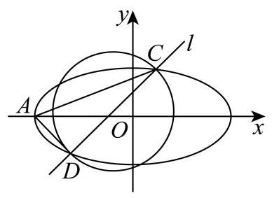
金山 · 第20题 ★★★★★ · 教师预估 已知抛物线 Γ : y 2 = 4 x \Gamma : {y}^{2} = {4x} Γ : y 2 = 4 x F F F l l l P ( x 0 , y 0 ) P\left( {{x}_{0},{y}_{0}}\right) P ( x 0 , y 0 ) O O O
(1)若 ∣ O P ∣ = ∣ P F ∣ \left| {OP}\right| = \left| {PF}\right| ∣ OP ∣ = ∣ PF ∣ P P P
(2)若直线 l 0 : y = k x + 4 {l}_{0} : y = {kx} + 4 l 0 : y = k x + 4 Γ \Gamma Γ l 0 {l}_{0} l 0
(3)若 x 0 > 3 {x}_{0} > 3 x 0 > 3 P P P C : ( x − 1 ) 2 + y 2 = 4 C : {\left( x - 1\right) }^{2} + {y}^{2} = 4 C : ( x − 1 ) 2 + y 2 = 4 l l l A 、 B A\text{ 、 }B A 、 B ∣ A B ∣ \left| {AB}\right| ∣ A B ∣
考点： (1) 点距焦点和原点相等；(2) 方程一次情形及判别式；(3) 圆切线斜率方程与交点距离范围。难度依据： 抛物线与圆切线焦准关系；换元求切线交点距离范围
展开答案与解析 【答案】 (1) ( 1 2 , 2 ) \left( {\frac{1}{2},\sqrt{2}}\right) ( 2 1 , 2 ) ( 1 2 , − 2 ) \left( {\frac{1}{2}, - \sqrt{2}}\right) ( 2 1 , − 2 )
(2) y = 1 4 x + 4 y = \frac{1}{4}x + 4 y = 4 1 x + 4 y = 4 y = 4 y = 4
(3) ( 4 , + ∞ ) \left( {4, + \infty }\right) ( 4 , + ∞ )
【解析】
【分析】 (1) 根据条件列出方程即可求解;
(2)联立抛物线方程，消元后得方程，分类讨论，根据方程有一根求解即可；
(3)设过 P P P k k k ∣ A B ∣ \left| {AB}\right| ∣ A B ∣
【小问 1 详解】
由 y 2 = 4 x {y}^{2} = {4x} y 2 = 4 x F ( 1 , 0 ) F\left( {1,0}\right) F ( 1 , 0 )
因为 ∣ O P ∣ = ∣ P F ∣ \left| {OP}\right| = \left| {PF}\right| ∣ OP ∣ = ∣ PF ∣ x 0 2 + y 0 2 = ( x 0 − 1 ) 2 + y 0 2 {x}_{0}^{2} + {y}_{0}^{2} = {\left( {x}_{0} - 1\right) }^{2} + {y}_{0}^{2} x 0 2 + y 0 2 = ( x 0 − 1 ) 2 + y 0 2
即 x 0 2 = ( x 0 − 1 ) 2 = x 0 2 − 2 x 0 + 1 {x}_{0}^{2} = {\left( {x}_{0} - 1\right) }^{2} = {x}_{0}^{2} - 2{x}_{0} + 1 x 0 2 = ( x 0 − 1 ) 2 = x 0 2 − 2 x 0 + 1 x 0 = 1 2 {x}_{0} = \frac{1}{2} x 0 = 2 1
代入抛物线方程， y 0 2 = 4 x 0 = 2 ⇒ y 0 = ± 2 {y}_{0}^{2} = 4{x}_{0} = 2 \Rightarrow {y}_{0} = \pm \sqrt{2} y 0 2 = 4 x 0 = 2 ⇒ y 0 = ± 2
所以点 P P P ( 1 2 , 2 ) \left( {\frac{1}{2},\sqrt{2}}\right) ( 2 1 , 2 ) ( 1 2 , − 2 ) \left( {\frac{1}{2}, - \sqrt{2}}\right) ( 2 1 , − 2 )
【小问 2 详解】
联立方程 { y = k x + 4 y 2 = 4 x \left\{ \begin{array}{l} y = {kx} + 4 \\ {y}^{2} = {4x} \end{array}\right. { y = k x + 4 y 2 = 4 x ( k x + 4 ) 2 = 4 x {\left( kx + 4\right) }^{2} = {4x} ( k x + 4 ) 2 = 4 x k 2 x 2 + ( 8 k − 4 ) x + 16 = 0 {k}^{2}{x}^{2} + \left( {{8k} - 4}\right) x + {16} = 0 k 2 x 2 + ( 8 k − 4 ) x + 16 = 0
因为只有一个交点,
所以 k 2 = 0 {k}^{2} = 0 k 2 = 0 k = 0 k = 0 k = 0 l 0 : y = 4 {l}_{0} : y = 4 l 0 : y = 4
当 k 2 ≠ 0 {k}^{2} \neq 0 k 2 = 0 Δ = ( 8 k − 4 ) 2 − 4 × 16 k 2 = 0 \Delta = {\left( 8k - 4\right) }^{2} - 4 \times {16}{k}^{2} = 0 Δ = ( 8 k − 4 ) 2 − 4 × 16 k 2 = 0 k = 1 4 k = \frac{1}{4} k = 4 1
此时 l 0 : y = 1 4 x + 4 {l}_{0} : y = \frac{1}{4}x + 4 l 0 : y = 4 1 x + 4
综上,直线 l 0 {l}_{0} l 0 y = 1 4 x + 4 y = \frac{1}{4}x + 4 y = 4 1 x + 4 y = 4 y = 4 y = 4
【小问 3 详解】
设 P ( t 2 , 2 t ) , t 2 > 3 P\left( {{t}^{2},{2t}}\right) ,{t}^{2} > 3 P ( t 2 , 2 t ) , t 2 > 3
由题意,切线与准线相交,故切线的斜率存在,设切线方程为 y − 2 t = k ( x − t 2 ) y - {2t} = k\left( {x - {t}^{2}}\right) y − 2 t = k ( x − t 2 ) y = k x − k t 2 + 2 t y = {kx} - k{t}^{2} + {2t} y = k x − k t 2 + 2 t
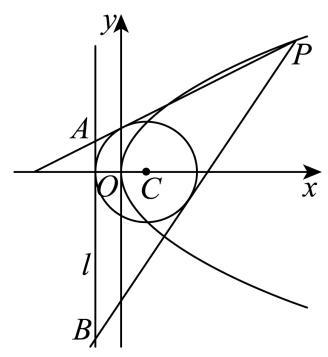
由圆 C : ( x − 1 ) 2 + y 2 = 4 C : {\left( x - 1\right) }^{2} + {y}^{2} = 4 C : ( x − 1 ) 2 + y 2 = 4 C ( 1 , 0 ) C\left( {1,0}\right) C ( 1 , 0 ) r = 2 r = 2 r = 2
所以 ∣ k ⋅ 1 − k t 2 + 2 t − 0 ∣ k 2 + 1 = 2 \frac{\left| k \cdot 1 - k{t}^{2} + 2t - 0\right| }{\sqrt{{k}^{2} + 1}} = 2 k 2 + 1 ∣ k ⋅ 1 − k t 2 + 2 t − 0 ∣ = 2 k 2 [ ( 1 − t 2 ) 2 − 4 ] + k [ 4 t ( 1 − t 2 ) ] + 4 t 2 − 4 = 0 {k}^{2}\left\lbrack {{\left( 1 - {t}^{2}\right) }^{2} - 4}\right\rbrack + k\left\lbrack {{4t}\left( {1 - {t}^{2}}\right) }\right\rbrack + 4{t}^{2} - 4 = 0 k 2 [ ( 1 − t 2 ) 2 − 4 ] + k [ 4 t ( 1 − t 2 ) ] + 4 t 2 − 4 = 0
设 A ( − 1 , y 1 ) , B ( − 1 , y 2 ) A\left( {-1,{y}_{1}}\right) , B\left( {-1,{y}_{2}}\right) A ( − 1 , y 1 ) , B ( − 1 , y 2 )
x = − 1 x = - 1 x = − 1 y = k ( − 1 ) − k t 2 + 2 t = − k ( t 2 + 1 ) + 2 t y = k\left( {-1}\right) - k{t}^{2} + {2t} = - k\left( {{t}^{2} + 1}\right) + {2t} y = k ( − 1 ) − k t 2 + 2 t = − k ( t 2 + 1 ) + 2 t
所以 y 1 = − k 1 ( t 2 + 1 ) + 2 t , y 2 = − k 2 ( t 2 + 1 ) + 2 t {y}_{1} = - {k}_{1}\left( {{t}^{2} + 1}\right) + {2t},{y}_{2} = - {k}_{2}\left( {{t}^{2} + 1}\right) + {2t} y 1 = − k 1 ( t 2 + 1 ) + 2 t , y 2 = − k 2 ( t 2 + 1 ) + 2 t k 1 , k 2 {k}_{1},{k}_{2} k 1 , k 2 P A , P B {PA},{PB} P A , PB ∣ A B ∣ = ∣ y 1 − y 2 ∣ = ∣ k 1 − k 2 ∣ ⋅ ( t 2 + 1 ) \left| {AB}\right| = \left| {{y}_{1} - {y}_{2}}\right| = \left| {{k}_{1} - {k}_{2}}\right| \cdot \left( {{t}^{2} + 1}\right) ∣ A B ∣ = ∣ y 1 − y 2 ∣ = ∣ k 1 − k 2 ∣ ⋅ ( t 2 + 1 )
又 k 1 + k 2 = − 4 t ( 1 − t 2 ) ( 1 − t 2 ) 2 − 4 , k 1 ⋅ k 2 = 4 t 2 − 4 ( 1 − t 2 ) 2 − 4 {k}_{1} + {k}_{2} = - \frac{{4t}\left( {1 - {t}^{2}}\right) }{{\left( 1 - {t}^{2}\right) }^{2} - 4},{k}_{1} \cdot {k}_{2} = \frac{4{t}^{2} - 4}{{\left( 1 - {t}^{2}\right) }^{2} - 4} k 1 + k 2 = − ( 1 − t 2 ) 2 − 4 4 t ( 1 − t 2 ) , k 1 ⋅ k 2 = ( 1 − t 2 ) 2 − 4 4 t 2 − 4
令 u = t 2 > 3 u = {t}^{2} > 3 u = t 2 > 3
∣ A B ∣ = ( k 1 + k 2 ) 2 − 4 k 1 k 2 ⋅ ( u + 1 ) = 16 ( u − 1 ) ( u + 3 ) ∣ ( u − 3 ) ( u + 1 ) ∣ ⋅ ( u + 1 ) = 16 ( u − 1 ) ( u + 3 ) u − 3 ,
\left| {AB}\right| = \sqrt{{\left( {k}_{1} + {k}_{2}\right) }^{2} - 4{k}_{1}{k2}} \cdot \left( {u + 1}\right) = \frac{\sqrt{{16}\left( {u - 1}\right) \left( {u + 3}\right) }}{\left| \left( u - 3\right) \left( u + 1\right) \right| } \cdot \left( {u + 1}\right) = \frac{\sqrt{{16}\left( {u - 1}\right) \left( {u + 3}\right) }}{u - 3},
∣ A B ∣ = ( k 1 + k 2 ) 2 − 4 k 1 k 2 ⋅ ( u + 1 ) = ∣ ( u − 3 ) ( u + 1 ) ∣ 16 ( u − 1 ) ( u + 3 ) ⋅ ( u + 1 ) = u − 3 16 ( u − 1 ) ( u + 3 ) ,
令 s = u − 3 > 0 s = u - 3 > 0 s = u − 3 > 0 u = s + 3 u = s + 3 u = s + 3
所以 ∣ A B ∣ = 4 ( s + 2 ) ( s + 6 ) s = 4 ( s + 2 ) ( s + 6 ) s 2 = 4 1 + 8 s + 12 s 2 = 4 12 ( 1 s + 1 3 ) 2 − 1 3 \left| {AB}\right| = \frac{4\sqrt{\left( {s + 2}\right) \left( {s + 6}\right) }}{s} = 4\sqrt{\frac{\left( {s + 2}\right) \left( {s + 6}\right) }{{s}^{2}}} = 4\sqrt{1 + \frac{8}{s} + \frac{12}{{s}^{2}}} = 4\sqrt{{12}{\left( \frac{1}{s} + \frac{1}{3}\right) }^{2} - \frac{1}{3}} ∣ A B ∣ = s 4 ( s + 2 ) ( s + 6 ) = 4 s 2 ( s + 2 ) ( s + 6 ) = 4 1 + s 8 + s 2 12 = 4 12 ( s 1 + 3 1 ) 2 − 3 1 1 s > 0 \frac{1}{s} > 0 s 1 > 0 12 ( 1 s + 1 3 ) 2 − 1 3 > 12 × 1 9 − 1 3 = 1 {12}{\left( \frac{1}{s} + \frac{1}{3}\right) }^{2} - \frac{1}{3} > {12} \times \frac{1}{9} - \frac{1}{3} = 1 12 ( s 1 + 3 1 ) 2 − 3 1 > 12 × 9 1 − 3 1 = 1 ∣ A B ∣ > 4 \left| {AB}\right| > 4 ∣ A B ∣ > 4 ∣ A B ∣ \left| {AB}\right| ∣ A B ∣ ( 4 , + ∞ ) \left( {4, + \infty }\right) ( 4 , + ∞ )
长宁 · 第20题 ★★★★☆ · 教师预估 本题资料或解析有待核事项，预览不可作为已审定成品。
双曲线 Γ : x 2 3 − y 2 b 2 = 1 ( b > 0 ) \Gamma : \frac{{x}^{2}}{3} - \frac{{y}^{2}}{{b}^{2}} = 1\left( {b > 0}\right) Γ : 3 x 2 − b 2 y 2 = 1 ( b > 0 ) P ( 2 , 1 ) P\left( {2,1}\right) P ( 2 , 1 ) x x x Γ \Gamma Γ P P P A A A B B B P A {PA} P A P B {PB} PB y y y M M M N N N
(1)求 Γ \Gamma Γ
(2)设直线 P A {PA} P A x x x Q Q Q M Q → = 2 Q P → \overrightarrow{MQ} = 2\overrightarrow{QP} MQ = 2 QP A A A
(3) 若 M M M N N N A B {AB} A B
考点： （1）双曲线离心率；（2）向量分点及直线与双曲线交点；（3）对称截距和直线定点。难度依据： 双曲线离心率与直线定点；分点坐标
核查说明： 分析与详解的定点参数表达不一致，需回核并数学验证。
展开答案与解析 【答案】 (1) e = 2 e = \sqrt{2} e = 2
(2) 14 5 \frac{14}{5} 5 14
(3)证明见解析
【解析】
【分析】 (1) 将点的坐标代入双曲线方程求得 b 2 = 3 {b}^{2} = 3 b 2 = 3
(2)设出点的坐标，利用坐标运算，结合向量关系，联立求解即可；
(3)先求得 k P A + k P B = 1 {k}_{PA} + {k}_{PB} = 1 k P A + k PB = 1 A B : y = k x + s {AB} : y = {kx} + s A B : y = k x + s x 2 − y 2 = 3 {x}^{2} - {y}^{2} = 3 x 2 − y 2 = 3 s = 1 − 2 k s = 1 - {2k} s = 1 − 2 k
【小问 1 详解】
将 P ( 2 , 1 ) P\left( {2,1}\right) P ( 2 , 1 ) x 2 3 − y 2 b 2 = 1 ( b > 0 ) \frac{{x}^{2}}{3} - \frac{{y}^{2}}{{b}^{2}} = 1\left( {b > 0}\right) 3 x 2 − b 2 y 2 = 1 ( b > 0 ) 4 3 − 1 b 2 = 1 ⇒ b 2 = 3 \frac{4}{3} - \frac{1}{{b}^{2}} = 1 \Rightarrow {b}^{2} = 3 3 4 − b 2 1 = 1 ⇒ b 2 = 3
因为双曲线中 a 2 = 3 {a}^{2} = 3 a 2 = 3 c 2 = a 2 + b 2 = 6 {c}^{2} = {a}^{2} + {b}^{2} = 6 c 2 = a 2 + b 2 = 6
即离心率: e = c a = 6 3 = 2 e = \frac{c}{a} = \frac{\sqrt{6}}{\sqrt{3}} = \sqrt{2} e = a c = 3 6 = 2
【小问 2 详解】
设 A ( x 1 , y 1 ) A\left( {{x}_{1},{y}_{1}}\right) A ( x 1 , y 1 ) P A {PA} P A y − 1 = y 1 − 1 x 1 − 2 ( x − 2 ) y - 1 = \frac{{y}_{1} - 1}{{x}_{1} - 2}\left( {x - 2}\right) y − 1 = x 1 − 2 y 1 − 1 ( x − 2 )
令 x = 0 x = 0 x = 0 y = − 2 y 1 + 2 x 1 − 2 + 1 = x 1 − 2 y 1 x 1 − 2 y = \frac{-2{y}_{1} + 2}{{x}_{1} - 2} + 1 = \frac{{x}_{1} - 2{y}_{1}}{{x}_{1} - 2} y = x 1 − 2 − 2 y 1 + 2 + 1 = x 1 − 2 x 1 − 2 y 1 M ( 0 , x 1 − 2 y 1 x 1 − 2 ) M\left( {0,\frac{{x}_{1} - 2{y}_{1}}{{x}_{1} - 2}}\right) M ( 0 , x 1 − 2 x 1 − 2 y 1 )
令 y = 0 y = 0 y = 0 − 1 = y 1 − 1 x 1 − 2 ( x − 2 ) ⇒ x = 2 − x 1 − 2 y 1 − 1 = 2 y 1 − x 1 y 1 − 1 - 1 = \frac{{y}_{1} - 1}{{x}_{1} - 2}\left( {x - 2}\right) \Rightarrow x = 2 - \frac{{x}_{1} - 2}{{y}_{1} - 1} = \frac{2{y}_{1} - {x}_{1}}{{y}_{1} - 1} − 1 = x 1 − 2 y 1 − 1 ( x − 2 ) ⇒ x = 2 − y 1 − 1 x 1 − 2 = y 1 − 1 2 y 1 − x 1 Q ( 2 y 1 − x 1 y 1 − 1 , 0 ) Q\left( {\frac{2{y}_{1} - {x}_{1}}{{y}_{1} - 1},0}\right) Q ( y 1 − 1 2 y 1 − x 1 , 0 )
由 M Q → = 2 Q P → \overrightarrow{MQ} = 2\overrightarrow{QP} MQ = 2 QP ( 2 y 1 − x 1 y 1 − 1 , − x 1 − 2 y 1 x 1 − 2 ) = 2 ( 2 − 2 y 1 − x 1 y 1 − 1 , 1 ) \left( {\frac{2{y}_{1} - {x}_{1}}{{y}_{1} - 1}, - \frac{{x}_{1} - 2{y}_{1}}{{x}_{1} - 2}}\right) = 2\left( {2 - \frac{2{y}_{1} - {x}_{1}}{{y}_{1} - 1},1}\right) ( y 1 − 1 2 y 1 − x 1 , − x 1 − 2 x 1 − 2 y 1 ) = 2 ( 2 − y 1 − 1 2 y 1 − x 1 , 1 )
则由纵坐标对应相等可得 − x 1 − 2 y 1 x 1 − 2 = 2 ⇒ y 1 = 3 x 1 − 4 2 - \frac{{x}_{1} - 2{y}_{1}}{{x}_{1} - 2} = 2 \Rightarrow {y}_{1} = \frac{3{x}_{1} - 4}{2} − x 1 − 2 x 1 − 2 y 1 = 2 ⇒ y 1 = 2 3 x 1 − 4
由 (1) 知双曲线化简为 x 2 − y 2 = 3 {x}^{2} - {y}^{2} = 3 x 2 − y 2 = 3 x 1 2 − ( 3 x 1 − 4 2 ) 2 = 3 ⇒ 5 x 1 2 − 24 x 1 + 28 = 0 {x}_{1}^{2} - {\left( \frac{3{x}_{1} - 4}{2}\right) }^{2} = 3 \Rightarrow 5{x}_{1}^{2} - {24}{x}_{1} + {28} = 0 x 1 2 − ( 2 3 x 1 − 4 ) 2 = 3 ⇒ 5 x 1 2 − 24 x 1 + 28 = 0
解得 x 1 = 14 5 {x}_{1} = \frac{14}{5} x 1 = 5 14 x 1 = 2 {x}_{1} = 2 x 1 = 2 P P P x 1 = 14 5 {x}_{1} = \frac{14}{5} x 1 = 5 14
【小问 3 详解】
设 M ( 0 , m ) M\left( {0, m}\right) M ( 0 , m ) M , N M, N M , N N ( 0 , − m ) N\left( {0, - m}\right) N ( 0 , − m )
计算得直线 P A , P B {PA},{PB} P A , PB k P A = 1 + m 2 , k P B = 1 − m 2 {k}_{PA} = \frac{1 + m}{2},{k}_{PB} = \frac{1 - m}{2} k P A = 2 1 + m , k PB = 2 1 − m
所以有 k P A + k P B = 1 − m 2 + 1 + m 2 = 1 {k}_{PA} + {k}_{PB} = \frac{1 - m}{2} + \frac{1 + m}{2} = 1 k P A + k PB = 2 1 − m + 2 1 + m = 1
设直线 A B : y = k x + s {AB} : y = {kx} + s A B : y = k x + s x 2 − y 2 = 3 {x}^{2} - {y}^{2} = 3 x 2 − y 2 = 3
可得: x 2 − ( k x + s ) 2 = 3 ⇒ ( 1 − k 2 ) x 2 − 2 k s x − s 2 − 3 = 0 {x}^{2} - {\left( kx + s\right) }^{2} = 3 \Rightarrow \left( {1 - {k}^{2}}\right) {x}^{2} - {2ksx} - {s}^{2} - 3 = 0 x 2 − ( k x + s ) 2 = 3 ⇒ ( 1 − k 2 ) x 2 − 2 k s x − s 2 − 3 = 0
设 A ( x A , y A ) , B ( x B , y B ) A\left( {{x}_{A},{y}_{A}}\right) , B\left( {{x}_{B},{y}_{B}}\right) A ( x A , y A ) , B ( x B , y B )
由韦达定理得 x A + x B = 2 k s 1 − k 2 , x A x B = − s 2 + 3 1 − k 2 {x}_{A} + {x}_{B} = \frac{2ks}{1 - {k}^{2}},{x}_{A}{x}_{B} = - \frac{{s}^{2} + 3}{1 - {k}^{2}} x A + x B = 1 − k 2 2 k s , x A x B = − 1 − k 2 s 2 + 3
由 k P A + k P B = 1 {k}_{PA} + {k}_{PB} = 1 k P A + k PB = 1 y A − 1 x A − 2 + y B − 1 x B − 2 = 1 ⇒ k x A + s − 1 x A − 2 + k x B + s − 1 x B − 2 = 1 \frac{{y}_{A} - 1}{{x}_{A} - 2} + \frac{{y}_{B} - 1}{{x}_{B} - 2} = 1 \Rightarrow \frac{k{x}_{A} + s - 1}{{x}_{A} - 2} + \frac{k{x}_{B} + s - 1}{{x}_{B} - 2} = 1 x A − 2 y A − 1 + x B − 2 y B − 1 = 1 ⇒ x A − 2 k x A + s − 1 + x B − 2 k x B + s − 1 = 1
整理得: ( k x A + s − 1 ) ( x B − 2 ) + ( k x B + s − 1 ) ( x A − 2 ) = ( x A − 2 ) ( x B − 2 ) \left( {k{x}_{A} + s - 1}\right) \left( {{x}_{B} - 2}\right) + \left( {k{x}_{B} + s - 1}\right) \left( {{x}_{A} - 2}\right) = \left( {{x}_{A} - 2}\right) \left( {{x}_{B} - 2}\right) ( k x A + s − 1 ) ( x B − 2 ) + ( k x B + s − 1 ) ( x A − 2 ) = ( x A − 2 ) ( x B − 2 )
所以 2 k x A x B + ( s − 1 − 2 k ) ( x A + x B ) − 4 ( s − 1 ) = x A x B − 2 ( x A + x B ) + 4 {2k}{x}_{A}{x}_{B} + \left( {s - 1 - {2k}}\right) \left( {{x}_{A} + {x}_{B}}\right) - 4\left( {s - 1}\right) = {x}_{A}{x}_{B} - 2\left( {{x}_{A} + {x}_{B}}\right) + 4 2 k x A x B + ( s − 1 − 2 k ) ( x A + x B ) − 4 ( s − 1 ) = x A x B − 2 ( x A + x B ) + 4
所以 ( 2 k − 1 ) x A x B + ( s + 1 − 2 k ) ( x A + x B ) − 4 s = 0 \left( {{2k} - 1}\right) {x}_{A}{x}_{B} + \left( {s + 1 - {2k}}\right) \left( {{x}_{A} + {x}_{B}}\right) - {4s} = 0 ( 2 k − 1 ) x A x B + ( s + 1 − 2 k ) ( x A + x B ) − 4 s = 0
代入韦达定理可得: ( 2 k − 1 ) ( − s 2 + 3 1 − k 2 ) + ( s + 1 − 2 k ) 2 k s 1 − k 2 − 4 s = 0 \left( {{2k} - 1}\right) \left( {-\frac{{s}^{2} + 3}{1 - {k}^{2}}}\right) + \left( {s + 1 - {2k}}\right) \frac{2ks}{1 - {k}^{2}} - {4s} = 0 ( 2 k − 1 ) ( − 1 − k 2 s 2 + 3 ) + ( s + 1 − 2 k ) 1 − k 2 2 k s − 4 s = 0
所以 − ( 2 k − 1 ) ( s 2 + 3 ) + ( s + 1 − 2 k ) 2 k s − 4 s ( 1 − k 2 ) = 0 - \left( {{2k} - 1}\right) \left( {{s}^{2} + 3}\right) + \left( {s + 1 - {2k}}\right) {2ks} - {4s}\left( {1 - {k}^{2}}\right) = 0 − ( 2 k − 1 ) ( s 2 + 3 ) + ( s + 1 − 2 k ) 2 k s − 4 s ( 1 − k 2 ) = 0
所以 − 2 k s 2 − 6 k + s 2 + 3 + 2 k s 2 + 2 k s − 4 k 2 s − 4 s + 4 k 2 s = 0 - {2k}{s}^{2} - {6k} + {s}^{2} + 3 + {2k}{s}^{2} + {2ks} - 4{k}^{2}s - {4s} + 4{k}^{2}s = 0 − 2 k s 2 − 6 k + s 2 + 3 + 2 k s 2 + 2 k s − 4 k 2 s − 4 s + 4 k 2 s = 0
所以 − 6 k + s 2 + 3 + 2 k s − 4 s = 0 - {6k} + {s}^{2} + 3 + {2ks} - {4s} = 0 − 6 k + s 2 + 3 + 2 k s − 4 s = 0
所以 2 k ( s − 3 ) + ( s − 3 ) ( s − 1 ) = 0 ⇒ ( s − 3 ) ( 2 k + s − 1 ) = 0 {2k}\left( {s - 3}\right) + \left( {s - 3}\right) \left( {s - 1}\right) = 0 \Rightarrow \left( {s - 3}\right) \left( {{2k} + s - 1}\right) = 0 2 k ( s − 3 ) + ( s − 3 ) ( s − 1 ) = 0 ⇒ ( s − 3 ) ( 2 k + s − 1 ) = 0 s = 3 s = 3 s = 3 s = 1 − 2 k s = 1 - {2k} s = 1 − 2 k s = 1 − 2 k s = 1 - {2k} s = 1 − 2 k A B : y = k x + 1 − 2 k = k ( x − 2 ) + 1 {AB} : y = {kx} + 1 - {2k} = k\left( {x - 2}\right) + 1 A B : y = k x + 1 − 2 k = k ( x − 2 ) + 1 P ( 2 , 1 ) P\left( {2,1}\right) P ( 2 , 1 ) s = 3 s = 3 s = 3 A B : y = k x + 3 {AB} : y = {kx} + 3 A B : y = k x + 3 ( 0 , 3 ) \left( {0,3}\right) ( 0 , 3 )
闵行 · 第20题 ★★★★☆ · 教师预估 已知椭圆 Γ : x 2 a 2 + y 2 b 2 = 1 ( a > b > 0 ) \Gamma : \frac{{x}^{2}}{{a}^{2}} + \frac{{y}^{2}}{{b}^{2}} = 1\left( {a > b > 0}\right) Γ : a 2 x 2 + b 2 y 2 = 1 ( a > b > 0 ) 4 3 4\sqrt{3} 4 3 3 2 \frac{\sqrt{3}}{2} 2 3 P ( 2 , 1 ) P\left( {2,1}\right) P ( 2 , 1 ) A A A B B B
(1)求Γ的方程；
(2)记 △ O A P \bigtriangleup {OAP} △ O A P S ≤ 2 2 S \leq 2\sqrt{2} S ≤ 2 2
(3)求 ∣ P A ∣ ⋅ ∣ P B ∣ \left| {PA}\right| \cdot \left| {PB}\right| ∣ P A ∣ ⋅ ∣ PB ∣ A B {AB} A B
考点： （1）焦距离心率求椭圆方程；（2）三角形面积上界；（3）焦点弦参数及弦积最值。难度依据： 椭圆方程面积与弦积最值
展开答案与解析 【答案】 (1) x 2 16 + y 2 4 = 1 \frac{{x}^{2}}{16} + \frac{{y}^{2}}{4} = 1\; 16 x 2 + 4 y 2 = 1
(3) 最大值 8 ，直线方程 y = 1 y = 1 y = 1 x = 2 x = 2 x = 2
【解析】
【分析】 (1) 根据椭圆已知的焦距和离心率求出参数 a , b a, b a , b
(2)将 S S S A A A
(3)设过点 P P P t t t ∣ P A ∣ ⋅ ∣ P B ∣ \left| {PA}\right| \cdot \left| {PB}\right| ∣ P A ∣ ⋅ ∣ PB ∣ ∣ t 1 t 2 ∣ \left| {{t}_{1}{t}_{2}}\right| ∣ t 1 t 2 ∣
【小问 1 详解】
由题意得 2 c = 4 3 {2c} = 4\sqrt{3} 2 c = 4 3 c = 2 3 c = 2\sqrt{3} c = 2 3 e = c a = 3 2 e = \frac{c}{a} = \frac{\sqrt{3}}{2} e = a c = 2 3 a = 4 a = 4 a = 4
由椭圆关系 b 2 = a 2 − c 2 = 16 − 12 = 4 {b}^{2} = {a}^{2} - {c}^{2} = {16} - {12} = 4 b 2 = a 2 − c 2 = 16 − 12 = 4 Γ \Gamma Γ x 2 16 + y 2 4 = 1 \frac{{x}^{2}}{16} + \frac{{y}^{2}}{4} = 1 16 x 2 + 4 y 2 = 1
【小问 2 详解】
设 A ( x 1 , y 1 ) A\left( {{x}_{1},{y}_{1}}\right) A ( x 1 , y 1 ) P ( 2 , 1 ) , O ( 0 , 0 ) P\left( {2,1}\right) , O\left( {0,0}\right) P ( 2 , 1 ) , O ( 0 , 0 ) O P : y = 1 2 x {OP} : y = \frac{1}{2}x OP : y = 2 1 x x − 2 y = 0 x - {2y} = 0 x − 2 y = 0
所以点 A A A O P {OP} OP d = ∣ x 1 − 2 y 1 ∣ 1 2 + 2 2 = ∣ x 1 − 2 y 1 ∣ 5 d = \frac{\left| {x}_{1} - 2{y}_{1}\right| }{\sqrt{{1}^{2} + {2}^{2}}} = \frac{\left| {x}_{1} - 2{y}_{1}\right| }{\sqrt{5}} d = 1 2 + 2 2 ∣ x 1 − 2 y 1 ∣ = 5 ∣ x 1 − 2 y 1 ∣ ∣ O P ∣ = 1 2 + 2 2 = 5 \left| {OP}\right| = \sqrt{{1}^{2} + {2}^{2}} = \sqrt{5} ∣ OP ∣ = 1 2 + 2 2 = 5
所以 S = 1 2 ∣ O P ∣ ⋅ d = 1 2 × 5 × ∣ x 1 − 2 y 1 ∣ 5 = 1 2 ∣ x 1 − 2 y 1 ∣ S = \frac{1}{2}\left| {OP}\right| \cdot d = \frac{1}{2} \times \sqrt{5} \times \frac{\left| {x}_{1} - 2{y}_{1}\right| }{\sqrt{5}} = \frac{1}{2}\left| {{x}_{1} - 2{y}_{1}}\right| S = 2 1 ∣ OP ∣ ⋅ d = 2 1 × 5 × 5 ∣ x 1 − 2 y 1 ∣ = 2 1 ∣ x 1 − 2 y 1 ∣
由 A A A ( x 1 4 ) 2 + ( y 1 2 ) 2 = 1 {\left( \frac{{x}_{1}}{4}\right) }^{2} + {\left( \frac{{y}_{1}}{2}\right) }^{2} = 1 ( 4 x 1 ) 2 + ( 2 y 1 ) 2 = 1 x 1 = 4 cos θ , y 1 = 2 sin θ {x}_{1} = 4\cos \theta ,{y}_{1} = 2\sin \theta x 1 = 4 cos θ , y 1 = 2 sin θ
所以 x 1 − 2 y 1 = 4 cos θ − 4 sin θ = 4 2 cos ( θ + π 4 ) {x}_{1} - 2{y}_{1} = 4\cos \theta - 4\sin \theta = 4\sqrt{2}\cos \left( {\theta + \frac{\pi }{4}}\right) x 1 − 2 y 1 = 4 cos θ − 4 sin θ = 4 2 cos ( θ + 4 π )
因此 S = 1 2 ∣ x 1 − 2 y 1 ∣ = 1 2 × 4 2 ∣ cos ( θ + π 4 ) ∣ ≤ 1 2 × 4 2 = 2 2 S = \frac{1}{2}\left| {{x}_{1} - 2{y}_{1}}\right| = \frac{1}{2} \times 4\sqrt{2}\left| {\cos \left( {\theta + \frac{\pi }{4}}\right) }\right| \leq \frac{1}{2} \times 4\sqrt{2} = 2\sqrt{2} S = 2 1 ∣ x 1 − 2 y 1 ∣ = 2 1 × 4 2 cos ( θ + 4 π ) ≤ 2 1 × 4 2 = 2 2
【小问 3 详解】
设过 P ( 2 , 1 ) P\left( {2,1}\right) P ( 2 , 1 ) A B {AB} A B { x = 2 + t cos a y = 1 + t sin a \left\{ \begin{array}{l} x = 2 + t\cos a \\ y = 1 + t\sin a \end{array}\right. { x = 2 + t cos a y = 1 + t sin a t t t
代入椭圆方程整理得: ( cos 2 a + 4 sin 2 a ) t 2 + ( 4 cos a + 8 sin a ) t − 8 = 0 \left( {{\cos }^{2}a + 4{\sin }^{2}a}\right) {t}^{2} + \left( {4\cos a + 8\sin a}\right) t - 8 = 0 ( cos 2 a + 4 sin 2 a ) t 2 + ( 4 cos a + 8 sin a ) t − 8 = 0
由参数 t t t ∣ P A ∣ ⋅ ∣ P B ∣ = ∣ t 1 t 2 ∣ \left| {PA}\right| \cdot \left| {PB}\right| = \left| {{t}_{1}{t}_{2}}\right| ∣ P A ∣ ⋅ ∣ PB ∣ = ∣ t 1 t 2 ∣
结合韦达定理得: ∣ P A ∣ ⋅ ∣ P B ∣ = ∣ − 8 cos 2 a + 4 sin 2 a ∣ = 8 1 + 3 sin 2 a \left| {PA}\right| \cdot \left| {PB}\right| = \left| \frac{-8}{{\cos }^{2}a + 4{\sin }^{2}a}\right| = \frac{8}{1 + 3{\sin }^{2}a} ∣ P A ∣ ⋅ ∣ PB ∣ = c o s 2 a + 4 s i n 2 a − 8 = 1 + 3 s i n 2 a 8
斜率存在时,设斜率为 k = tan a k = \tan a k = tan a ∣ P A ∣ ⋅ ∣ P B ∣ = 2 + 6 1 + 4 k 2 \left| {PA}\right| \cdot \left| {PB}\right| = 2 + \frac{6}{1 + 4{k}^{2}} ∣ P A ∣ ⋅ ∣ PB ∣ = 2 + 1 + 4 k 2 6
由 k 2 ≥ 0 {k}^{2} \geq 0 k 2 ≥ 0 k = 0 k = 0 k = 0 ∣ P A ∣ ⋅ ∣ P B ∣ \left| {PA}\right| \cdot \left| {PB}\right| ∣ P A ∣ ⋅ ∣ PB ∣ y = 1 y = 1 y = 1
当直线斜率不存在时,直线为 x = 2 x = 2 x = 2 ∣ P A ∣ ⋅ ∣ P B ∣ = 2 \left| {PA}\right| \cdot \left| {PB}\right| = 2 ∣ P A ∣ ⋅ ∣ PB ∣ = 2
综上, ∣ P A ∣ ⋅ ∣ P B ∣ \left| {PA}\right| \cdot \left| {PB}\right| ∣ P A ∣ ⋅ ∣ PB ∣ y = 1 y = 1 y = 1 x = 2 x = 2 x = 2
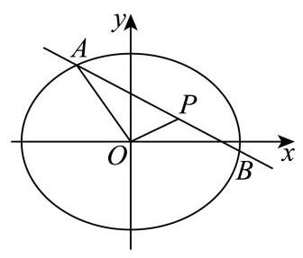
青浦 · 第20题 ★★★★☆ · 教师预估 已知椭圆 C 1 : x 2 4 + y 2 = 1 {C}_{1} : \frac{{x}^{2}}{4} + {y}^{2} = 1 C 1 : 4 x 2 + y 2 = 1 C 2 : x 2 2 + y 2 = 1 {C}_{2} : \frac{{x}^{2}}{2} + {y}^{2} = 1 C 2 : 2 x 2 + y 2 = 1 C 2 {C}_{2} C 2 F 1 {F}_{1} F 1 F 2 {F}_{2} F 2 P P P C 1 {C}_{1} C 1 l 1 、 l 2 {l}_{1}\text{ 、 }{l}_{2} l 1 、 l 2 P P P
(1)求 △ P F 1 F 2 \bigtriangleup {P{F}_{1}{F}_{2}} △ P F 1 F 2
(2)若 l 1 {l}_{1} l 1 F 1 {F}_{1} F 1 C 2 {C}_{2} C 2 D D D E E E l 2 {l}_{2} l 2 F 2 {F}_{2} F 2 C 2 {C}_{2} C 2 M M M N N N l 1 {l}_{1} l 1 l 2 {l}_{2} l 2 k 1 、 k 2 {k}_{1}\text{ 、 }{k}_{2} k 1 、 k 2 k 1 k 2 = 1 2 {k}_{1}{k}_{2} = \frac{1}{2} k 1 k 2 = 2 1 ∣ D E ∣ + ∣ M N ∣ \left| {DE}\right| + \left| {MN}\right| ∣ D E ∣ + ∣ MN ∣
(3)是否存在点 P P P l 1 、 l 2 {l}_{1}\text{ 、 }{l}_{2} l 1 、 l 2 C 2 {C}_{2} C 2 l 1 ⊥ l 2 {l}_{1} \bot {l}_{2} l 1 ⊥ l 2 P P P
考点： (1) 焦距与椭圆纵坐标求面积；(2) 焦点弦长与斜率关系证明定值；(3) 切线判别式与垂直求点。难度依据： 双椭圆焦点弦长定值与切线垂直
展开答案与解析 【答案】 (1) 1 (2) 证明见解析
(3)存在， ( 2 6 3 , 3 3 ) , ( 2 6 3 , − 3 3 ) , ( − 2 6 3 , 3 3 ) , ( − 2 6 3 , − 3 3 ) \left( {\frac{2\sqrt{6}}{3},\frac{\sqrt{3}}{3}}\right) ,\left( {\frac{2\sqrt{6}}{3}, - \frac{\sqrt{3}}{3}}\right) ,\left( {-\frac{2\sqrt{6}}{3},\frac{\sqrt{3}}{3}}\right) ,\left( {-\frac{2\sqrt{6}}{3}, - \frac{\sqrt{3}}{3}}\right) ( 3 2 6 , 3 3 ) , ( 3 2 6 , − 3 3 ) , ( − 3 2 6 , 3 3 ) , ( − 3 2 6 , − 3 3 )
【解析】
【分析】 (1) 利用椭圆 C 2 {C}_{2} C 2 C 1 {C}_{1} C 1
(2)通过联立直线与椭圆方程，用弦长公式表示 ∣ D E ∣ \left| {DE}\right| ∣ D E ∣ ∣ M N ∣ \left| {MN}\right| ∣ MN ∣ k 1 k 2 = 1 2 {k}_{1}{k}_{2} = \frac{1}{2} k 1 k 2 = 2 1
(3)利用直线与椭圆相切时的判别式条件，结合韦达定理和垂直关系，联立椭圆方程即可求解点 P P P
【小问 1 详解】
对于椭圆 C 2 : x 2 2 + y 2 = 1 {C}_{2} : \frac{{x}^{2}}{2} + {y}^{2} = 1 C 2 : 2 x 2 + y 2 = 1 a 2 = 2 , b 2 = 1 {a}^{2} = 2,{b}^{2} = 1 a 2 = 2 , b 2 = 1 c 2 = a 2 − b 2 = 1 {c}^{2} = {a}^{2} - {b}^{2} = 1 c 2 = a 2 − b 2 = 1 c = 1 c = 1 c = 1
焦点 F 1 ( − 1 , 0 ) , F 2 ( 1 , 0 ) , ∣ F 1 F 2 ∣ = 2 {F}_{1}\left( {-1,0}\right) ,{F}_{2}\left( {1,0}\right) ,\left| {{F}_{1}{F}_{2}}\right| = 2 F 1 ( − 1 , 0 ) , F 2 ( 1 , 0 ) , ∣ F 1 F 2 ∣ = 2 P ( x 0 , y 0 ) P\left( {{x}_{0},{y}_{0}}\right) P ( x 0 , y 0 ) C 1 : x 2 4 + y 2 = 1 {C}_{1} : \frac{{x}^{2}}{4} + {y}^{2} = 1 C 1 : 4 x 2 + y 2 = 1 ∣ y 0 ∣ ≤ 1 \left| {y}_{0}\right| \leq 1 ∣ y 0 ∣ ≤ 1
因为 △ P F 1 F 2 \bigtriangleup P{F}_{1}{F}_{2} △ P F 1 F 2 S = 1 2 ⋅ ∣ F 1 F 2 ∣ ⋅ ∣ y 0 ∣ = 1 2 × 2 ∣ y 0 ∣ = ∣ y 0 ∣ S = \frac{1}{2} \cdot \left| {{F}_{1}{F}_{2}}\right| \cdot \left| {y}_{0}\right| = \frac{1}{2} \times 2\left| {y}_{0}\right| = \left| {y}_{0}\right| S = 2 1 ⋅ ∣ F 1 F 2 ∣ ⋅ ∣ y 0 ∣ = 2 1 × 2 ∣ y 0 ∣ = ∣ y 0 ∣
所以当 ∣ y 0 ∣ = 1 \left| {y}_{0}\right| = 1 ∣ y 0 ∣ = 1
设直线 l 1 : y = k 1 ( x + 1 ) {l}_{1} : y = {k}_{1}\left( {x + 1}\right) l 1 : y = k 1 ( x + 1 ) { y = k 1 ( x + 1 ) x 2 2 + y 2 = 1 \left\{ \begin{array}{l} y = {k}_{1}\left( {x + 1}\right) \\ \frac{{x}^{2}}{2} + {y}^{2} = 1 \end{array}\right. { y = k 1 ( x + 1 ) 2 x 2 + y 2 = 1
整理得: ( 1 + 2 k 1 2 ) x 2 + 4 k 1 2 x + 2 k 1 2 − 2 = 0 \left( {1 + 2{k}_{1}^{2}}\right) {x}^{2} + 4{k}_{1}^{2}x + 2{k}_{1}^{2} - 2 = 0 ( 1 + 2 k 1 2 ) x 2 + 4 k 1 2 x + 2 k 1 2 − 2 = 0
其中 Δ = ( 4 k 1 2 ) 2 − 4 ( 1 + 2 k 1 2 ) ( 2 k 1 2 − 2 ) = 8 ( k 1 2 + 1 ) > 0 \Delta = {\left( 4{k}_{1}^{2}\right) }^{2} - 4\left( {1 + 2{k}_{1}^{2}}\right) \left( {2{k}_{1}^{2} - 2}\right) = 8\left( {{k}_{1}^{2} + 1}\right) > 0 Δ = ( 4 k 1 2 ) 2 − 4 ( 1 + 2 k 1 2 ) ( 2 k 1 2 − 2 ) = 8 ( k 1 2 + 1 ) > 0
设 D ( x 1 , y 1 ) , E ( x 2 , y 2 ) D\left( {{x}_{1},{y}_{1}}\right) , E\left( {{x}_{2},{y}_{2}}\right) D ( x 1 , y 1 ) , E ( x 2 , y 2 ) x 1 + x 2 = − 4 k 1 2 1 + 2 k 1 2 , x 1 x 2 = 2 k 1 2 − 2 1 + 2 k 1 2 {x}_{1} + {x}_{2} = - \frac{4{k}_{1}^{2}}{1 + 2{k}_{1}^{2}},{x}_{1}{x}_{2} = \frac{2{k}_{1}^{2} - 2}{1 + 2{k}_{1}^{2}} x 1 + x 2 = − 1 + 2 k 1 2 4 k 1 2 , x 1 x 2 = 1 + 2 k 1 2 2 k 1 2 − 2
所以 ∣ D E ∣ = 1 + k 1 2 ⋅ ( x 1 + x 2 ) 2 − 4 x 1 x 2 = 1 + k 1 2 ⋅ ( − 4 k 1 2 1 + 2 k 1 2 ) 2 − 4 × 2 k 1 2 − 2 1 + 2 k 1 2 = 2 2 ( 1 + k 1 2 ) 1 + 2 k 1 2 \left| {DE}\right| = \sqrt{1 + {k}_{1}^{2}} \cdot \sqrt{{\left( {x}_{1} + {x}_{2}\right) }^{2} - 4{x}_{1}{x}_{2}} = \sqrt{1 + {k}_{1}^{2}} \cdot \sqrt{{\left( -\frac{4{k}_{1}^{2}}{1 + 2{k}_{1}^{2}}\right) }^{2} - 4 \times \frac{2{k}_{1}^{2} - 2}{1 + 2{k}_{1}^{2}}} = \frac{2\sqrt{2}\left( {1 + {k}_{1}^{2}}\right) }{1 + 2{k}_{1}^{2}} ∣ D E ∣ = 1 + k 1 2 ⋅ ( x 1 + x 2 ) 2 − 4 x 1 x 2 = 1 + k 1 2 ⋅ ( − 1 + 2 k 1 2 4 k 1 2 ) 2 − 4 × 1 + 2 k 1 2 2 k 1 2 − 2 = 1 + 2 k 1 2 2 2 ( 1 + k 1 2 )
同理,设 l 2 : y = k 2 ( x − 1 ) {l}_{2} : y = {k}_{2}\left( {x - 1}\right) l 2 : y = k 2 ( x − 1 ) C 2 {C}_{2} C 2 ∣ M N ∣ = 2 2 ( 1 + k 2 2 ) 1 + 2 k 2 2 \left| {MN}\right| = \frac{2\sqrt{2}\left( {1 + {k}_{2}^{2}}\right) }{1 + 2{k}_{2}^{2}} ∣ MN ∣ = 1 + 2 k 2 2 2 2 ( 1 + k 2 2 )
已知 k 1 k 2 = 1 2 {k}_{1}{k}_{2} = \frac{1}{2} k 1 k 2 = 2 1 k 2 = 1 2 k 1 {k}_{2} = \frac{1}{2{k}_{1}} k 2 = 2 k 1 1 ∣ M N ∣ \left| {MN}\right| ∣ MN ∣ ∣ M N ∣ = 2 2 ( 1 + 1 4 k 1 2 ) 1 + 2 × 1 4 k 1 2 = 2 ( 1 + 4 k 1 2 ) 1 + 2 k 1 2 \left| {MN}\right| = \frac{2\sqrt{2}\left( {1 + \frac{1}{4{k}_{1}^{2}}}\right) }{1 + 2 \times \frac{1}{4{k}_{1}^{2}}} = \frac{\sqrt{2}\left( {1 + 4{k}_{1}^{2}}\right) }{1 + 2{k}_{1}^{2}} ∣ MN ∣ = 1 + 2 × 4 k 1 2 1 2 2 ( 1 + 4 k 1 2 1 ) = 1 + 2 k 1 2 2 ( 1 + 4 k 1 2 )
所以 ∣ D E ∣ + ∣ M N ∣ = 2 2 ( 1 + k 1 2 ) 1 + 2 k 1 2 + 2 ( 1 + 4 k 1 2 ) 1 + 2 k 1 2 = 3 2 ( 1 + 2 k 1 2 ) 1 + 2 k 1 2 = 3 2 \left| {DE}\right| + \left| {MN}\right| = \frac{2\sqrt{2}\left( {1 + {k}_{1}^{2}}\right) }{1 + 2{k}_{1}^{2}} + \frac{\sqrt{2}\left( {1 + 4{k}_{1}^{2}}\right) }{1 + 2{k}_{1}^{2}} = \frac{3\sqrt{2}\left( {1 + 2{k}_{1}^{2}}\right) }{1 + 2{k}_{1}^{2}} = 3\sqrt{2} ∣ D E ∣ + ∣ MN ∣ = 1 + 2 k 1 2 2 2 ( 1 + k 1 2 ) + 1 + 2 k 1 2 2 ( 1 + 4 k 1 2 ) = 1 + 2 k 1 2 3 2 ( 1 + 2 k 1 2 ) = 3 2
即 ∣ D E ∣ + ∣ M N ∣ \left| {DE}\right| + \left| {MN}\right| ∣ D E ∣ + ∣ MN ∣
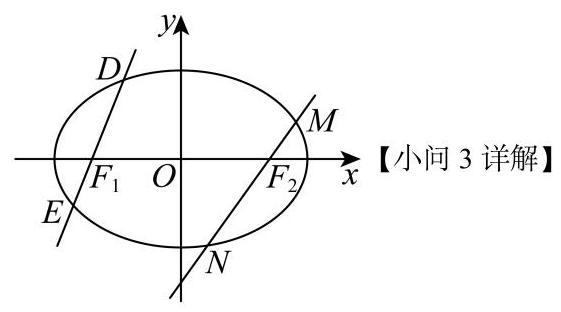
假设存在 P ( x 0 , y 0 ) P\left( {{x}_{0},{y}_{0}}\right) P ( x 0 , y 0 ) x 0 = ± 2 {x}_{0} = \pm \sqrt{2} x 0 = ± 2 ∣ y 0 ∣ = 2 2 \left| {y}_{0}\right| = \frac{\sqrt{2}}{2} ∣ y 0 ∣ = 2 2 l 1 , l 2 {l}_{1},{l}_{2} l 1 , l 2
因此直线 l 1 , l 2 {l}_{1},{l}_{2} l 1 , l 2 k 1 , k 2 {k}_{1},{k}_{2} k 1 , k 2 l 1 ⊥ l 2 {l}_{1} \bot {l}_{2} l 1 ⊥ l 2 k 1 k 2 = − 1 {k}_{1}{k}_{2} = - 1 k 1 k 2 = − 1
若直线 l : y − y 0 = k ( x − x 0 ) l : y - {y}_{0} = k\left( {x - {x}_{0}}\right) l : y − y 0 = k ( x − x 0 ) y = k ( x − x 0 ) + y 0 y = k\left( {x - {x}_{0}}\right) + {y}_{0} y = k ( x − x 0 ) + y 0
联立方程组 { y = k ( x − x 0 ) + y 0 x 2 2 + y 2 = 1 \left\{ \begin{array}{l} y = k\left( {x - {x}_{0}}\right) + {y}_{0} \\ \frac{{x}^{2}}{2} + {y}^{2} = 1 \end{array}\right. { y = k ( x − x 0 ) + y 0 2 x 2 + y 2 = 1 ( 1 + 2 k 2 ) x 2 + 4 k ( y 0 − k x 0 ) x + 2 ( y 0 − k x 0 ) 2 − 2 = 0 \left( {1 + 2{k}^{2}}\right) {x}^{2} + {4k}\left( {{y}_{0} - k{x}_{0}}\right) x + 2{\left( {y}_{0} - k{x}_{0}\right) }^{2} - 2 = 0 ( 1 + 2 k 2 ) x 2 + 4 k ( y 0 − k x 0 ) x + 2 ( y 0 − k x 0 ) 2 − 2 = 0
若 l l l C 2 {C}_{2} C 2 Δ = [ 4 k ( y 0 − k x 0 ) ] 2 − 4 ( 1 + 2 k 2 ) [ 2 ( y 0 − k x 0 ) 2 − 2 ] = 0 \Delta = {\left\lbrack 4k\left( {y}_{0} - k{x}_{0}\right) \right\rbrack }^{2} - 4\left( {1 + 2{k}^{2}}\right) \left\lbrack {2{\left( {y}_{0} - k{x}_{0}\right) }^{2} - 2}\right\rbrack = 0 Δ = [ 4 k ( y 0 − k x 0 ) ] 2 − 4 ( 1 + 2 k 2 ) [ 2 ( y 0 − k x 0 ) 2 − 2 ] = 0
化简得: ( 2 − x 0 2 ) k 2 + 2 x 0 y 0 k + 1 − y 0 2 = 0 \left( {2 - {x}_{0}^{2}}\right) {k}^{2} + 2{x}_{0}{y}_{0}k + 1 - {y}_{0}^{2} = 0 ( 2 − x 0 2 ) k 2 + 2 x 0 y 0 k + 1 − y 0 2 = 0
此方程的两根为 k 1 , k 2 {k}_{1},{k}_{2} k 1 , k 2 Δ ′ = ( 2 x 0 y 0 ) 2 − 4 ( 2 − x 0 2 ) ( 1 − y 0 2 ) = 4 ( x 0 2 + 2 y 0 2 − 2 ) > 0 {\Delta }^{\prime } = {\left( 2{x}_{0}{y}_{0}\right) }^{2} - 4\left( {2 - {x}_{0}^{2}}\right) \left( {1 - {y}_{0}^{2}}\right) = 4\left( {{x}_{0}^{2} + 2{y}_{0}^{2} - 2}\right) > 0 Δ ′ = ( 2 x 0 y 0 ) 2 − 4 ( 2 − x 0 2 ) ( 1 − y 0 2 ) = 4 ( x 0 2 + 2 y 0 2 − 2 ) > 0
所以 k 1 k 2 = 1 − y 0 2 2 − x 0 2 {k}_{1}{k}_{2} = \frac{1 - {y}_{0}^{2}}{2 - {x}_{0}^{2}} k 1 k 2 = 2 − x 0 2 1 − y 0 2 k 1 k 2 = − 1 {k}_{1}{k}_{2} = - 1 k 1 k 2 = − 1 1 − y 0 2 2 − x 0 2 = − 1 \frac{1 - {y}_{0}^{2}}{2 - {x}_{0}^{2}} = - 1 2 − x 0 2 1 − y 0 2 = − 1 x 0 2 + y 0 2 = 3 {x}_{0}^{2} + {y}_{0}^{2} = 3 x 0 2 + y 0 2 = 3
又因为 P ( x 0 , y 0 ) P\left( {{x}_{0},{y}_{0}}\right) P ( x 0 , y 0 ) C 1 {C}_{1} C 1 { x 0 2 + y 0 2 = 3 x 0 2 4 + y 0 2 = 1 \left\{ \begin{array}{l} {x}_{0}^{2} + {y}_{0}^{2} = 3 \\ \frac{{x}_{0}^{2}}{4} + {y}_{0}^{2} = 1 \end{array}\right. { x 0 2 + y 0 2 = 3 4 x 0 2 + y 0 2 = 1
解得 { x 0 = 2 6 3 y 0 = 3 3 \left\{ \begin{array}{l} {x}_{0} = \frac{2\sqrt{6}}{3} \\ {y}_{0} = \frac{\sqrt{3}}{3} \end{array}\right. { x 0 = 3 2 6 y 0 = 3 3 { x 0 = 2 6 3 y 0 = − 3 3 \left\{ \begin{array}{l} {x}_{0} = \frac{2\sqrt{6}}{3} \\ {y}_{0} = - \frac{\sqrt{3}}{3} \end{array}\right. { x 0 = 3 2 6 y 0 = − 3 3 { x 0 = − 2 6 3 y 0 = 3 3 \left\{ \begin{array}{l} {x}_{0} = - \frac{2\sqrt{6}}{3} \\ {y}_{0} = \frac{\sqrt{3}}{3} \end{array}\right. { x 0 = − 3 2 6 y 0 = 3 3 { x 0 = − 2 6 3 y 0 = − 3 3 \left\{ \begin{array}{l} {x}_{0} = - \frac{2\sqrt{6}}{3} \\ {y}_{0} = - \frac{\sqrt{3}}{3} \end{array}\right. { x 0 = − 3 2 6 y 0 = − 3 3
即存在点 P 1 ( 2 6 3 , 3 3 ) , P 2 ( 2 6 3 , − 3 3 ) , P 3 ( − 2 6 3 , 3 3 ) , P 4 ( − 2 6 3 , − 3 3 ) {P}_{1}\left( {\frac{2\sqrt{6}}{3},\frac{\sqrt{3}}{3}}\right) ,{P}_{2}\left( {\frac{2\sqrt{6}}{3}, - \frac{\sqrt{3}}{3}}\right) ,{P}_{3}\left( {-\frac{2\sqrt{6}}{3},\frac{\sqrt{3}}{3}}\right) ,{P}_{4}\left( {-\frac{2\sqrt{6}}{3}, - \frac{\sqrt{3}}{3}}\right) P 1 ( 3 2 6 , 3 3 ) , P 2 ( 3 2 6 , − 3 3 ) , P 3 ( − 3 2 6 , 3 3 ) , P 4 ( − 3 2 6 , − 3 3 )
静安 · 第20题 ★★★★☆ · 教师预估 在 x O y {xOy} x O y O O O Γ : x 2 a 2 + y 2 b 2 = 1 ( a > b > 0 ) , Γ \Gamma : \frac{{x}^{2}}{{a}^{2}} + \frac{{y}^{2}}{{b}^{2}} = 1\left( {a > b > 0}\right) ,\Gamma Γ : a 2 x 2 + b 2 y 2 = 1 ( a > b > 0 ) , Γ F 1 、 F 2 , ∣ F 1 F 2 ∣ = 2 , Γ {F}_{1}\text{ 、 }{F}_{2},\left| {{F}_{1}{F}_{2}}\right| = 2,\Gamma F 1 、 F 2 , ∣ F 1 F 2 ∣ = 2 , Γ 1 2 \frac{1}{2} 2 1
(1)求椭圆 Γ \Gamma Γ
(2)过原点 O O O Γ \Gamma Γ A 、 B A\text{ 、 }B A 、 B O O O A B {AB} A B
(3)过椭圆 Γ \Gamma Γ F 2 {F}_{2} F 2 l l l Γ \Gamma Γ P 、 Q P\text{ 、 }Q P 、 Q M M M P P P x x x x x x N N N M 、 Q 、 N M\text{ 、 }Q\text{ 、 }N M 、 Q 、 N N N N
考点： （1）焦距离心率求椭圆方程；（2）垂直射线与点到弦距离定值；（3）对称点和焦点弦定点。难度依据： 椭圆定距与定点
展开答案与解析 【答案】 (1) x 2 4 + y 2 3 = 1 \frac{{x}^{2}}{4} + \frac{{y}^{2}}{3} = 1 4 x 2 + 3 y 2 = 1
(2)证明见解析(3)存在定点 N ( 4 , 0 ) N\left( {4,0}\right) N ( 4 , 0 )
【解析】
【分析】 (1) 利用待定系数法可求得椭圆的标准方程；
(2)设直线 A B {AB} A B O A ⊥ O B {OA}\bot {OB} O A ⊥ OB
(3) 设直线 l l l x = m y + 1 ( m ≠ 0 ) x = {my} + 1\left( {m \neq 0}\right) x = m y + 1 ( m = 0 ) y 1 + y 2 , y 1 y 2 {y}_{1} + {y}_{2},{y}_{1}{y}_{2} y 1 + y 2 , y 1 y 2 k M N = k Q N {k}_{MN} = {k}_{QN} k MN = k QN
【小问 1 详解】
由题意知 2 c = 2 {2c} = 2 2 c = 2 c = 1 c = 1 c = 1
又因为离心率 e = c a = 1 2 e = \frac{c}{a} = \frac{1}{2} e = a c = 2 1 a = 2 a = 2 a = 2 b 2 = a 2 − c 2 = 4 − 1 = 3 {b}^{2} = {a}^{2} - {c}^{2} = 4 - 1 = 3 b 2 = a 2 − c 2 = 4 − 1 = 3
故椭圆 Γ \Gamma Γ x 2 4 + y 2 3 = 1 \frac{{x}^{2}}{4} + \frac{{y}^{2}}{3} = 1 4 x 2 + 3 y 2 = 1
【小问 2 详解】
证明: 设 A ( x 1 , y 1 ) , B ( x 2 , y 2 ) A\left( {{x}_{1},{y}_{1}}\right) , B\left( {{x}_{2},{y}_{2}}\right) A ( x 1 , y 1 ) , B ( x 2 , y 2 )
因为 O A ⊥ O B {OA} \bot {OB} O A ⊥ OB x 1 x 2 + y 1 y 2 = 0 {x}_{1}{x}_{2} + {y}_{1}{y}_{2} = 0 x 1 x 2 + y 1 y 2 = 0
设直线 A B {AB} A B x = m y + n x = {my} + n x = m y + n
联立方程组 { x = m y + n x 2 4 + y 2 3 = 1 \left\{ \begin{array}{l} x = {my} + n \\ \frac{{x}^{2}}{4} + \frac{{y}^{2}}{3} = 1 \end{array}\right. { x = m y + n 4 x 2 + 3 y 2 = 1 x x x ( 3 m 2 + 4 ) y 2 + 6 m n y + 3 n 2 − 12 = 0 \left( {3{m}^{2} + 4}\right) {y}^{2} + {6mny} + 3{n}^{2} - {12} = 0 ( 3 m 2 + 4 ) y 2 + 6 mn y + 3 n 2 − 12 = 0
由韦达定理得 y 1 + y 2 = − 6 m n 3 m 2 + 4 , y 1 y 2 = 3 n 2 − 12 3 m 2 + 4 {y}_{1} + {y}_{2} = \frac{-{6mn}}{3{m}^{2} + 4},{y}_{1}{y}_{2} = \frac{3{n}^{2} - {12}}{3{m}^{2} + 4} y 1 + y 2 = 3 m 2 + 4 − 6 mn , y 1 y 2 = 3 m 2 + 4 3 n 2 − 12
代入 x 1 x 2 + y 1 y 2 = 0 {x}_{1}{x}_{2} + {y}_{1}{y}_{2} = 0 x 1 x 2 + y 1 y 2 = 0 ( m y 1 + n ) ( m y 2 + n ) + y 1 y 2 = 0 \left( {m{y}_{1} + n}\right) \left( {m{y}_{2} + n}\right) + {y}_{1}{y}_{2} = 0 ( m y 1 + n ) ( m y 2 + n ) + y 1 y 2 = 0
整理得 ( m 2 + 1 ) y 1 y 2 + m n ( y 1 + y 2 ) + n 2 = 0 \left( {{m}^{2} + 1}\right) {y}_{1}{y}_{2} + {mn}\left( {{y}_{1} + {y}_{2}}\right) + {n}^{2} = 0 ( m 2 + 1 ) y 1 y 2 + mn ( y 1 + y 2 ) + n 2 = 0
代入韦达定理结果并化简得 7 n 2 = 12 ( m 2 + 1 ) 7{n}^{2} = {12}\left( {{m}^{2} + 1}\right) 7 n 2 = 12 ( m 2 + 1 )
原点 O O O A B {AB} A B d = ∣ n ∣ 1 + m 2 = n 2 m 2 + 1 = 12 7 = 2 21 7 d = \frac{\left| n\right| }{\sqrt{1 + {m}^{2}}} = \sqrt{\frac{{n}^{2}}{{m}^{2} + 1}} = \sqrt{\frac{12}{7}} = \frac{2\sqrt{21}}{7} d = 1 + m 2 ∣ n ∣ = m 2 + 1 n 2 = 7 12 = 7 2 21
所以原点 O O O A B {AB} A B 2 21 7 \frac{2\sqrt{21}}{7} 7 2 21
【小问 3 详解】
存在定点 N ( 4 , 0 ) N\left( {4,0}\right) N ( 4 , 0 )
由 (1) 知 F 2 ( 1 , 0 ) {F}_{2}\left( {1,0}\right) F 2 ( 1 , 0 ) l l l x = m y + 1 ( m ≠ 0 ) x = {my} + 1\left( {m \neq 0}\right) x = m y + 1 ( m = 0 )
设 P ( x 1 , y 1 ) , Q ( x 2 , y 2 ) P\left( {{x}_{1},{y}_{1}}\right) , Q\left( {{x}_{2},{y}_{2}}\right) P ( x 1 , y 1 ) , Q ( x 2 , y 2 ) M ( x 1 , − y 1 ) M\left( {{x}_{1}, - {y}_{1}}\right) M ( x 1 , − y 1 )
联立方程组 { x = m y + 1 x 2 4 + y 2 3 = 1 \left\{ \begin{array}{l} x = {my} + 1 \\ \frac{{x}^{2}}{4} + \frac{{y}^{2}}{3} = 1 \end{array}\right. { x = m y + 1 4 x 2 + 3 y 2 = 1 x x x ( 3 m 2 + 4 ) y 2 + 6 m y − 9 = 0 \left( {3{m}^{2} + 4}\right) {y}^{2} + {6my} - 9 = 0 ( 3 m 2 + 4 ) y 2 + 6 m y − 9 = 0 y 1 + y 2 = − 6 m 3 m 2 + 4 , y 1 y 2 = − 9 3 m 2 + 4 {y}_{1} + {y}_{2} = \frac{-{6m}}{3{m}^{2} + 4},{y}_{1}{y}_{2} = \frac{-9}{3{m}^{2} + 4} y 1 + y 2 = 3 m 2 + 4 − 6 m , y 1 y 2 = 3 m 2 + 4 − 9
设 N ( t , 0 ) N\left( {t,0}\right) N ( t , 0 ) M , Q , N M, Q, N M , Q , N k M N = k Q N {k}_{MN} = {k}_{QN} k MN = k QN
即 − y 1 x 1 − t = y 2 x 2 − t \frac{-{y}_{1}}{{x}_{1} - t} = \frac{{y}_{2}}{{x}_{2} - t} x 1 − t − y 1 = x 2 − t y 2 − y 1 ( x 2 − t ) = y 2 ( x 1 − t ) - {y}_{1}\left( {{x}_{2} - t}\right) = {y}_{2}\left( {{x}_{1} - t}\right) − y 1 ( x 2 − t ) = y 2 ( x 1 − t )
将 x 1 = m y 1 + 1 , x 2 = m y 2 + 1 {x}_{1} = m{y}_{1} + 1,{x}_{2} = m{y}_{2} + 1 x 1 = m y 1 + 1 , x 2 = m y 2 + 1 ( t − 1 ) ( y 1 + y 2 ) − 2 m y 1 y 2 = 0 \left( {t - 1}\right) \left( {{y}_{1} + {y}_{2}}\right) - {2m}{y}_{1}{y}_{2} = 0 ( t − 1 ) ( y 1 + y 2 ) − 2 m y 1 y 2 = 0
代入韦达定理结果，得 ( t − 1 ) − 6 m 3 m 2 + 4 − 2 m − 9 3 m 2 + 4 = 0 \left( {t - 1}\right) \frac{-{6m}}{3{m}^{2} + 4} - {2m}\frac{-9}{3{m}^{2} + 4} = 0 ( t − 1 ) 3 m 2 + 4 − 6 m − 2 m 3 m 2 + 4 − 9 = 0
化简得 3 ( t − 1 ) − 9 = 0 3\left( {t - 1}\right) - 9 = 0 3 ( t − 1 ) − 9 = 0 t = 4 t = 4 t = 4
所以存在定点 N ( 4 , 0 ) N\left( {4,0}\right) N ( 4 , 0 ) M , Q , N M, Q, N M , Q , N
黄浦 · 第20题 ★★★★★ · 教师预估 本题资料或解析有待核事项，预览不可作为已审定成品。
已知点 F 1 、 F 2 {F}_{1}\text{ 、 }{F}_{2} F 1 、 F 2 Γ : x 2 6 + y 2 2 = 1 \Gamma : \frac{{x}^{2}}{6} + \frac{{y}^{2}}{2} = 1 Γ : 6 x 2 + 2 y 2 = 1 l l l F 1 {F}_{1} F 1 F 2 {F}_{2} F 2 Γ \Gamma Γ P 、 Q P\text{ 、 }Q P 、 Q
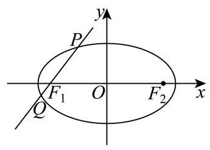
(1)求点 F 1 、 F 2 {F}_{1}\text{ 、 }{F}_{2} F 1 、 F 2
(2)若 F 2 P → ⋅ F 2 Q → = 11 \overrightarrow{{F}_{2}P} \cdot \overrightarrow{{F}_{2}Q} = {11} F 2 P ⋅ F 2 Q = 11 l l l
(3)设直线 l 1 {l}_{1} l 1 F 1 {F}_{1} F 1 l l l l 2 : x = m {l}_{2} : x = m l 2 : x = m l 1 {l}_{1} l 1 T T T m m m T T T Γ \Gamma Γ P Q {PQ} PQ ∣ P Q ∣ ∣ T F 1 ∣ \frac{\left| PQ\right| }{\left| T{F}_{1}\right| } ∣ T F 1 ∣ ∣ PQ ∣
考点： （1）椭圆焦点坐标；（2）向量数量积与弦；（3）弦中点定点及长度比最值。难度依据： 椭圆焦点弦与定点最值；数量积与弦
核查说明： 解析末尾均值不等式表达疑有OCR错误，需核原解。
展开答案与解析 【答案】 (1) F 1 ( − 2 , 0 ) 、 F 2 ( 2 , 0 ) {F}_{1}\left( {-2,0}\right) \text{ 、 }{F}_{2}\left( {2,0}\right) F 1 ( − 2 , 0 ) 、 F 2 ( 2 , 0 )
(2) x + y + 2 = 0 x + y + 2 = 0 x + y + 2 = 0 x − y + 2 = 0 x - y + 2 = 0 x − y + 2 = 0
(3) 3 \sqrt{3} 3
【解析】
【分析】 (1) 求出椭圆 Γ \Gamma Γ F 1 、 F 2 {F}_{1}\text{ 、 }{F}_{2} F 1 、 F 2
(2)设直线 l l l x = t y − 2 x = {ty} - 2 x = t y − 2 P ( x 1 , y 1 ) P\left( {{x}_{1},{y}_{1}}\right) P ( x 1 , y 1 ) Q ( x 2 , y 2 ) Q\left( {{x}_{2},{y}_{2}}\right) Q ( x 2 , y 2 ) t t t l l l
(3)求出线段 P Q {PQ} PQ N N N O N {ON} ON x = m x = m x = m T F 1 T{F}_{1} T F 1 T T T O T {OT} OT O N 、 O T {ON}\text{ 、 }{OT} ON 、 OT m m m ∣ P Q ∣ 、 ∣ T F 1 ∣ \left| {PQ}\right| \text{ 、 }\left| {T{F}_{1}}\right| ∣ PQ ∣ 、 ∣ T F 1 ∣ ∣ P Q ∣ ∣ T F 1 ∣ \frac{\left| PQ\right| }{\left| T{F}_{1}\right| } ∣ T F 1 ∣ ∣ PQ ∣
【小问 1 详解】
椭圆 Γ \Gamma Γ c = 6 − 2 = 2 c = \sqrt{6 - 2} = 2 c = 6 − 2 = 2 F 1 ( − 2 , 0 ) 、 F 2 ( 2 , 0 ) {F}_{1}\left( {-2,0}\right) \text{ 、 }{F}_{2}\left( {2,0}\right) F 1 ( − 2 , 0 ) 、 F 2 ( 2 , 0 )
【小问 2 详解】
由题意可知直线 l l l x x x l l l x = t y − 2 x = {ty} - 2 x = t y − 2 P ( x 1 , y 1 ) 、 Q ( x 2 , y 2 ) P\left( {{x}_{1},{y}_{1}}\right) \text{ 、 }Q\left( {{x}_{2},{y}_{2}}\right) P ( x 1 , y 1 ) 、 Q ( x 2 , y 2 )
将 x = t y − 2 x = {ty} - 2 x = t y − 2 x 2 6 + y 2 2 = 1 \frac{{x}^{2}}{6} + \frac{{y}^{2}}{2} = 1 6 x 2 + 2 y 2 = 1 ( t 2 + 3 ) y 2 − 4 t y − 2 = 0 \left( {{t}^{2} + 3}\right) {y}^{2} - {4ty} - 2 = 0 ( t 2 + 3 ) y 2 − 4 t y − 2 = 0 Δ = 16 t 2 + 8 ( t 2 + 3 ) = 24 ( t 2 + 1 ) > 0 , \Delta = {16}{t}^{2} + 8\left( {{t}^{2} + 3}\right) = {24}\left( {{t}^{2} + 1}\right) > 0, Δ = 16 t 2 + 8 ( t 2 + 3 ) = 24 ( t 2 + 1 ) > 0 ,
故 y 1 + y 2 = 4 t t 2 + 3 , y 1 ⋅ y 2 = − 2 t 2 + 3 {y}_{1} + {y}_{2} = \frac{4t}{{t}^{2} + 3},{y}_{1} \cdot {y}_{2} = \frac{-2}{{t}^{2} + 3} y 1 + y 2 = t 2 + 3 4 t , y 1 ⋅ y 2 = t 2 + 3 − 2
又 F 2 P → = ( x 1 − 2 , y 1 ) , F 2 Q → = ( x 2 − 2 , y 2 ) \overrightarrow{{F}_{2}P} = \left( {{x}_{1} - 2,{y}_{1}}\right) ,\overrightarrow{{F}_{2}Q} = \left( {{x}_{2} - 2,{y}_{2}}\right) F 2 P = ( x 1 − 2 , y 1 ) , F 2 Q = ( x 2 − 2 , y 2 )
F 2 P → ⋅ F 2 Q → = ( x 1 − 2 ) ( x 2 − 2 ) + y 1 y 2 = ( t y 1 − 4 ) ( t y 2 − 4 ) + y 1 y 2 = ( t 2 + 1 ) y 1 y 2 − 4 t ( y 1 + y 2 ) + 16 = t 2 + 1 t 2 + 3 ( − 2 ) − 4 t ⋅ 4 t t 2 + 3 + 16 = − 18 t 2 − 2 t 2 + 3 + 16 = 11 \overrightarrow{{F}_{2}P} \cdot \overrightarrow{{F}_{2}Q} = \left( {{x}_{1} - 2}\right) \left( {{x}_{2} - 2}\right) + {y}_{1}{y}_{2} = \left( {t{y}_{1} - 4}\right) \left( {t{y}_{2} - 4}\right) + {y}_{1}{y}_{2} = \left( {{t}^{2} + 1}\right) {y}_{1}{y}_{2} - {4t}\left( {{y}_{1} + {y}_{2}}\right) + {16} \; = \frac{{t}^{2} + 1}{{t}^{2} + 3}\left( {-2}\right) - {4t} \cdot \frac{4t}{{t}^{2} + 3} + {16} = \frac{-{18}{t}^{2} - 2}{{t}^{2} + 3} + {16} = {11} F 2 P ⋅ F 2 Q = ( x 1 − 2 ) ( x 2 − 2 ) + y 1 y 2 = ( t y 1 − 4 ) ( t y 2 − 4 ) + y 1 y 2 = ( t 2 + 1 ) y 1 y 2 − 4 t ( y 1 + y 2 ) + 16 = t 2 + 3 t 2 + 1 ( − 2 ) − 4 t ⋅ t 2 + 3 4 t + 16 = t 2 + 3 − 18 t 2 − 2 + 16 = 11 t = ± 1 t = \pm 1 t = ± 1
所以直线 l l l x + y + 2 = 0 x + y + 2 = 0 x + y + 2 = 0 x − y + 2 = 0 x - y + 2 = 0 x − y + 2 = 0
【小问 3 详解】
设线段 P Q {PQ} PQ N ( x 0 , y 0 ) N\left( {{x}_{0},{y}_{0}}\right) N ( x 0 , y 0 ) y 0 = 2 t t 2 + 3 , x 0 = t y 0 − 2 = − 6 t 2 + 3 {y}_{0} = \frac{2t}{{t}^{2} + 3},{x}_{0} = t{y}_{0} - 2 = \frac{-6}{{t}^{2} + 3} y 0 = t 2 + 3 2 t , x 0 = t y 0 − 2 = t 2 + 3 − 6 O N {ON} ON k 1 = − t 3 {k}_{1} = - \frac{t}{3} k 1 = − 3 t
易知直线 T F 1 T{F}_{1} T F 1 t ( x + 2 ) + y = 0 t\left( {x + 2}\right) + y = 0 t ( x + 2 ) + y = 0
将 x = m x = m x = m T F 1 T{F}_{1} T F 1 t ( x + 2 ) + y = 0 t\left( {x + 2}\right) + y = 0 t ( x + 2 ) + y = 0 T ( m , − ( m + 2 ) t ) T\left( {m, - \left( {m + 2}\right) t}\right) T ( m , − ( m + 2 ) t )
直线 O T {OT} OT k 2 = − ( m + 2 ) t m {k}_{2} = - \frac{\left( {m + 2}\right) t}{m} k 2 = − m ( m + 2 ) t
因为直线 O T {OT} OT P Q {PQ} PQ k 1 = k 2 {k}_{1} = {k}_{2} k 1 = k 2 − ( m + 2 ) t m = − t 3 - \frac{\left( {m + 2}\right) t}{m} = - \frac{t}{3} − m ( m + 2 ) t = − 3 t t t t
则 m + 2 m = 1 3 \frac{m + 2}{m} = \frac{1}{3} m m + 2 = 3 1 m = − 3 m = - 3 m = − 3
故存在唯一的常数 m m m O T {OT} OT P Q {PQ} PQ
此时 ∣ P Q ∣ = 1 + t 2 ∣ y 1 − y 2 ∣ = 1 + t 2 ⋅ ( 4 t t 2 + 3 ) 2 + 8 t 2 + 3 = 2 6 ( 1 + t 2 ) t 2 + 3 \left| {PQ}\right| = \sqrt{1 + {t}^{2}}\left| {{y}_{1} - {y}_{2}}\right| = \sqrt{1 + {t}^{2}} \cdot \sqrt{{\left( \frac{4t}{{t}^{2} + 3}\right) }^{2} + \frac{8}{{t}^{2} + 3}} = \frac{2\sqrt{6}\left( {1 + {t}^{2}}\right) }{{t}^{2} + 3} ∣ PQ ∣ = 1 + t 2 ∣ y 1 − y 2 ∣ = 1 + t 2 ⋅ ( t 2 + 3 4 t ) 2 + t 2 + 3 8 = t 2 + 3 2 6 ( 1 + t 2 )
∣ T F 1 ∣ = 1 + t 2 \left| {T{F}_{1}}\right| = \sqrt{1 + {t}^{2}} ∣ T F 1 ∣ = 1 + t 2 ∣ P Q ∣ ∣ T F 1 ∣ = 2 6 ⋅ 1 + t 2 t 2 + 3 \frac{\left| PQ\right| }{\left| T{F}_{1}\right| } = 2\sqrt{6} \cdot \frac{\sqrt{1 + {t}^{2}}}{{t}^{2} + 3} ∣ T F 1 ∣ ∣ PQ ∣ = 2 6 ⋅ t 2 + 3 1 + t 2
令 1 + t 2 = z \sqrt{1 + {t}^{2}} = z 1 + t 2 = z z ∈ [ 1 , + ∞ ) z \in \lbrack 1, + \infty ) z ∈ [ 1 , + ∞ ) ∣ P Q ∣ ∣ T F 1 ∣ = 2 6 z z 2 + 2 ≤ 2 6 z 2 2 z = 3 \frac{\left| PQ\right| }{\left| T{F}_{1}\right| } = \frac{2\sqrt{6}z}{{z}^{2} + 2} \leq \frac{2\sqrt{6}z}{2\sqrt{2z}} = \sqrt{3} ∣ T F 1 ∣ ∣ PQ ∣ = z 2 + 2 2 6 z ≤ 2 2 z 2 6 z = 3 z = 2 ∈ [ 1 , + ∞ ) z = \sqrt{2} \in \lbrack 1, + \infty ) z = 2 ∈ [ 1 , + ∞ )
时， ∣ P Q ∣ ∣ T F 1 ∣ = 3 \frac{\left| PQ\right| }{\left| T{F}_{1}\right| } = \sqrt{3} ∣ T F 1 ∣ ∣ PQ ∣ = 3
所以 ∣ P Q ∣ ∣ T F 1 ∣ \frac{\left| PQ\right| }{\left| T{F}_{1}\right| } ∣ T F 1 ∣ ∣ PQ ∣ 3 \sqrt{3} 3
轨迹、交点存在与几何计数 先把距离、对称和点集条件转换为轨迹，再讨论交点或构形。
嘉定 · 第11题 ★★★★☆ · 教师预估 本题资料或解析有待核事项，预览不可作为已审定成品。
将函数 y = x 2 , x ∈ [ 0 , 1 ] y = {x}^{2}, x \in \left\lbrack {0,1}\right\rbrack y = x 2 , x ∈ [ 0 , 1 ] θ ( 0 ≤ θ ≤ a ) \theta \left( {0 \leq \theta \leq a}\right) θ ( 0 ≤ θ ≤ a )
C. 若对于每一个角 θ \theta θ C C C a a a
考点： 旋转图像与函数图像判定；抛物线旋转与切线斜率。难度依据： 旋转曲线与函数定义的综合判定
核查说明： 题干与答案解析尚未逐页对照原卷，数学内容未独立终审。
展开答案与解析 【答案】 arctan 1 2 \arctan \frac{1}{2} arctan 2 1
【解析】
【详解】 由函数 y = x 2 , x ∈ [ 0 , 1 ] y = {x}^{2}, x \in \left\lbrack {0,1}\right\rbrack y = x 2 , x ∈ [ 0 , 1 ] y ′ = 2 x , x ∈ [ 0 , 1 ] {y}^{\prime } = {2x}, x \in \left\lbrack {0,1}\right\rbrack y ′ = 2 x , x ∈ [ 0 , 1 ]
因为 y ′ = 2 x {y}^{\prime } = {2x} y ′ = 2 x [ 0 , 1 ] \left\lbrack {0,1}\right\rbrack [ 0 , 1 ] y ′ ∈ [ 0 , 2 ] {y}^{\prime } \in \left\lbrack {0,2}\right\rbrack y ′ ∈ [ 0 , 2 ]
由题可知，当函数 y = x 2 y = {x}^{2} y = x 2 ( 1 , 1 ) \left( {1,1}\right) ( 1 , 1 )
即曲线 C C C x = 1 x = 1 x = 1
即曲线 C C C x = 1 x = 1 x = 1 π 2 \frac{\pi }{2} 2 π C C C π 2 \frac{\pi }{2} 2 π
此时,会出现一个 x x x y y y C C C
所以 a a a π 2 − arctan 2 = arctan 1 2 \frac{\pi }{2} - \arctan 2 = \arctan \frac{1}{2} 2 π − arctan 2 = arctan 2 1
嘉定 · 第17题 ★★★☆☆ · 教师预估 本题资料或解析有待核事项，预览不可作为已审定成品。
在复平面内,已知点 A 、 B 、 C A\text{ 、 }B\text{ 、 }C A 、 B 、 C z A = 0 、 z B = 6 、 z C = 4 + 3 i {z}_{A} = 0\text{ 、 }{z}_{B} = 6\text{ 、 }{z}_{C} = 4 + 3\mathrm{i} z A = 0 、 z B = 6 、 z C = 4 + 3 i i i i
(1)求 cos ∠ A C B \cos \angle {ACB} cos ∠ A CB
(2)若复数 z z z ∣ z − z A ∣ = ∣ z − z B ∣ = ∣ z B − z C ∣ \left| {z - {z}_{A}}\right| = \left| {z - {z}_{B}}\right| = \left| {{z}_{B} - {z}_{C}}\right| ∣ z − z A ∣ = ∣ z − z B ∣ = ∣ z B − z C ∣ z z z
考点： (1) 数量积求夹角余弦；(2) 复数模的几何意义与圆的交点。难度依据： 复平面几何与数量积
核查说明： 题干与答案解析尚未逐页对照原卷，数学内容未独立终审。
展开答案与解析 【答案】 (1) 13 65 \frac{\sqrt{13}}{65} 65 13
(2) z = 3 + 2 i z = 3 + {2\mathrm{i}} z = 3 + 2 i z = 3 − 2 i z = 3 - {2\mathrm{i}} z = 3 − 2 i
【解析】
【分析】 (1) 由已知写出点 A 、 B 、 C A\text{ 、 }B\text{ 、 }C A 、 B 、 C C A → , C B → \overrightarrow{CA},\overrightarrow{CB} C A , CB cos ∠ A C B \cos \angle {ACB} cos ∠ A CB
(2)由已知可得复数 z z z A ( 0 , 0 ) A\left( {0,0}\right) A ( 0 , 0 ) B ( 6 , 0 ) B\left( {6,0}\right) B ( 6 , 0 ) z z z A B {AB} A B z z z B B B C C C z z z z z z
【小问 1 详解】
由已知可得, A ( 0 , 0 ) , B ( 6 , 0 ) , C ( 4 , 3 ) A\left( {0,0}\right) , B\left( {6,0}\right) , C\left( {4,3}\right) A ( 0 , 0 ) , B ( 6 , 0 ) , C ( 4 , 3 ) C A → = ( − 4 , − 3 ) , C B → = ( 2 , − 3 ) \overrightarrow{CA} = \left( {-4, - 3}\right) ,\overrightarrow{CB} = \left( {2, - 3}\right) C A = ( − 4 , − 3 ) , CB = ( 2 , − 3 )
所以 cos ∠ A C B = C A → ⋅ C B → ∣ C A → ∣ ⋅ ∣ C B → ∣ = − 4 × 2 + ( − 3 ) × ( − 3 ) ( − 4 ) 2 + ( − 3 ) 2 ⋅ 2 2 + ( − 3 ) 2 = 13 65 \cos \angle {ACB} = \frac{\overrightarrow{CA} \cdot \overrightarrow{CB}}{\left| \overrightarrow{CA}\right| \cdot \left| \overrightarrow{CB}\right| } = \frac{-4 \times 2 + \left( {-3}\right) \times \left( {-3}\right) }{\sqrt{{\left( -4\right) }^{2} + {\left( -3\right) }^{2}} \cdot \sqrt{{2}^{2} + {\left( -3\right) }^{2}}} = \frac{\sqrt{13}}{65} cos ∠ A CB = C A ⋅ CB C A ⋅ CB = ( − 4 ) 2 + ( − 3 ) 2 ⋅ 2 2 + ( − 3 ) 2 − 4 × 2 + ( − 3 ) × ( − 3 ) = 65 13
【小问 2 详解】
因为 ∣ z − z A ∣ = ∣ z − z B ∣ , z A = 0 , z B = 6 \left| {z - {z}_{A}}\right| = \left| {z - {z}_{B}}\right| ,{z}_{A} = 0,{z}_{B} = 6 ∣ z − z A ∣ = ∣ z − z B ∣ , z A = 0 , z B = 6 ∣ z − 0 ∣ = ∣ z − 6 ∣ \left| {z - 0}\right| = \left| {z - 6}\right| ∣ z − 0 ∣ = ∣ z − 6 ∣
所以复数 z z z A ( 0 , 0 ) A\left( {0,0}\right) A ( 0 , 0 ) B ( 6 , 0 ) B\left( {6,0}\right) B ( 6 , 0 )
所以这两点的中垂线是直线 x = 3 x = 3 x = 3 z z z z = 3 + y i , y ∈ R z = 3 + y\mathrm{i},\;y \in \mathbf{R} z = 3 + y i , y ∈ R
所以 ∣ z − z A ∣ = ∣ z ∣ = ∣ 6 − ( 4 + 3 i ) ∣ = ∣ 2 − 3 i ∣ = 13 \left| {z - {z}_{A}}\right| = \left| z\right| = \left| {6 - \left( {4 + 3\mathrm{i}}\right) }\right| = \left| {2 - 3\mathrm{i}}\right| = \sqrt{13} ∣ z − z A ∣ = ∣ z ∣ = ∣ 6 − ( 4 + 3 i ) ∣ = ∣ 2 − 3 i ∣ = 13
所以 ∣ z ∣ = 3 2 + y 2 = 13 \left| z\right| = \sqrt{{3}^{2} + {y}^{2}} = \sqrt{13} ∣ z ∣ = 3 2 + y 2 = 13 y = ± 2 y = \pm 2 y = ± 2
所以 z = 3 + 2 i z = 3 + 2\mathrm{i} z = 3 + 2 i z = 3 − 2 i z = 3 - 2\mathrm{i} z = 3 − 2 i
崇明 · 第15题 ★★★☆☆ · 教师预估 已知 A ( − a , 0 ) , B ( a , 0 ) , l 1 : a x − y = 0 , l 2 : a x + y = 0 A\left( {-a,0}\right) , B\left( {a,0}\right) ,{l}_{1} : {ax} - y = 0,{l}_{2} : {ax} + y = 0 A ( − a , 0 ) , B ( a , 0 ) , l 1 : a x − y = 0 , l 2 : a x + y = 0 a > 1 a > 1 a > 1 P P P P P P l 1 , l 2 {l}_{1},{l}_{2} l 1 , l 2 d 1 , d 2 {d}_{1},{d}_{2} d 1 , d 2 P P P
A. ∣ P A ∣ + ∣ P B ∣ = 2 a \left| {PA}\right| + \left| {PB}\right| = {2a} ∣ P A ∣ + ∣ PB ∣ = 2 a
B. ∣ P A ∣ 2 + ∣ P B ∣ 2 = 4 a 2 {\left| PA\right| }^{2} + {\left| PB\right| }^{2} = 4{a}^{2} ∣ P A ∣ 2 + ∣ PB ∣ 2 = 4 a 2
C. d 1 2 + d 2 2 = 4 a 2 {d}_{1}^{2} + {d}_{2}^{2} = 4{a}^{2} d 1 2 + d 2 2 = 4 a 2
D. d 1 + d 2 = 4 a {d}_{1} + {d}_{2} = {4a} d 1 + d 2 = 4 a
考点： 点到两定直线距离和与轨迹辨析。难度依据： 点到两定直线距离和与轨迹辨析
展开答案与解析 【答案】 C
【解析】
【分析】 根据椭圆的定义可判断 A \mathrm{A} A P P P B C D \mathrm{{BCD}} BCD
【详解】 对于 A \mathrm{A} A ∣ P A ∣ + ∣ P B ∣ = 2 a = ∣ A B ∣ \left| {PA}\right| + \left| {PB}\right| = {2a} = \left| {AB}\right| ∣ P A ∣ + ∣ PB ∣ = 2 a = ∣ A B ∣ P P P A B {AB} A B A \mathrm{A} A B \mathrm{B} B P ( x , y ) P\left( {x, y}\right) P ( x , y ) ( x + a ) 2 + y 2 + ( x − a ) 2 + y 2 = 4 a 2 ⇒ x 2 + y 2 = a 2 {\left( x + a\right) }^{2} + {y}^{2} + {\left( x - a\right) }^{2} + {y}^{2} = 4{a}^{2} \Rightarrow {x}^{2} + {y}^{2} = {a}^{2} ( x + a ) 2 + y 2 + ( x − a ) 2 + y 2 = 4 a 2 ⇒ x 2 + y 2 = a 2 P P P
对于 C \mathrm{C} C ( ∣ a x − y ∣ a 2 + 1 ) 2 + ( ∣ a x + y ∣ a 2 + 1 ) 2 = 4 a 2 ⇒ a 2 x 2 + y 2 = 2 a 2 ( a 2 + 1 ) {\left( \frac{\left| ax - y\right| }{\sqrt{{a}^{2} + 1}}\right) }^{2} + {\left( \frac{\left| ax + y\right| }{\sqrt{{a}^{2} + 1}}\right) }^{2} = 4{a}^{2} \Rightarrow {a}^{2}{x}^{2} + {y}^{2} = 2{a}^{2}\left( {{a}^{2} + 1}\right) ( a 2 + 1 ∣ a x − y ∣ ) 2 + ( a 2 + 1 ∣ a x + y ∣ ) 2 = 4 a 2 ⇒ a 2 x 2 + y 2 = 2 a 2 ( a 2 + 1 )
因为 a > 1 a > 1 a > 1 x 2 2 ( a 2 + 1 ) + y 2 2 a 2 ( a 2 + 1 ) = 1 \frac{{x}^{2}}{2\left( {{a}^{2} + 1}\right) } + \frac{{y}^{2}}{2{a}^{2}\left( {{a}^{2} + 1}\right) } = 1 2 ( a 2 + 1 ) x 2 + 2 a 2 ( a 2 + 1 ) y 2 = 1 P P P C \mathrm{C} C D \mathrm{D} D ∣ a x − y ∣ a 2 + 1 + ∣ a x + y ∣ a 2 + 1 = 4 a ⇒ ∣ a x − y ∣ + ∣ a x + y ∣ = 4 a a 2 + 1 \frac{\left| ax - y\right| }{\sqrt{{a}^{2} + 1}} + \frac{\left| ax + y\right| }{\sqrt{{a}^{2} + 1}} = {4a} \Rightarrow \left| {{ax} - y}\right| + \left| {{ax} + y}\right| = {4a}\sqrt{{a}^{2} + 1} a 2 + 1 ∣ a x − y ∣ + a 2 + 1 ∣ a x + y ∣ = 4 a ⇒ ∣ a x − y ∣ + ∣ a x + y ∣ = 4 a a 2 + 1
① 当 a x − y ≥ 0 {ax} - y \geq 0 a x − y ≥ 0 a x + y ≥ 0 {ax} + y \geq 0 a x + y ≥ 0 − a x ≤ y ≤ a x - {ax} \leq y \leq {ax} − a x ≤ y ≤ a x
去绝对值可得 a x − y + a x + y = 4 a a 2 + 1 {ax} - y + {ax} + y = {4a}\sqrt{{a}^{2} + 1} a x − y + a x + y = 4 a a 2 + 1 x = 2 a 2 + 1 x = 2\sqrt{{a}^{2} + 1} x = 2 a 2 + 1
此时结合约束条件 − 2 a a 2 + 1 ≤ y ≤ 2 a a 2 + 1 - {2a}\sqrt{{a}^{2} + 1} \leq y \leq {2a}\sqrt{{a}^{2} + 1} − 2 a a 2 + 1 ≤ y ≤ 2 a a 2 + 1 P P P x x x
② 当 a x − y ≥ 0 {ax} - y \geq 0 a x − y ≥ 0 a x + y < 0 {ax} + y < 0 a x + y < 0 y < − a x y < - {ax} y < − a x y ≤ a x y \leq {ax} y ≤ a x
去绝对值可得 a x − y − a x − y = 4 a a 2 + 1 {ax} - y - {ax} - y = {4a}\sqrt{{a}^{2} + 1} a x − y − a x − y = 4 a a 2 + 1 y = − 2 a a 2 + 1 y = - {2a}\sqrt{{a}^{2} + 1} y = − 2 a a 2 + 1
此时结合约束条件 − 2 a 2 + 1 ≤ x < 2 a 2 + 1 - 2\sqrt{{a}^{2} + 1} \leq x < 2\sqrt{{a}^{2} + 1} − 2 a 2 + 1 ≤ x < 2 a 2 + 1 P P P y y y
③ 当 a x − y < 0 {ax} - y < 0 a x − y < 0 a x + y < 0 {ax} + y < 0 a x + y < 0 y < − a x y < - {ax} y < − a x y > a x y > {ax} y > a x
去绝对值可得 − a x + y − a x − y = 4 a a 2 + 1 - {ax} + y - {ax} - y = {4a}\sqrt{{a}^{2} + 1} − a x + y − a x − y = 4 a a 2 + 1 x = − 2 a 2 + 1 x = - 2\sqrt{{a}^{2} + 1} x = − 2 a 2 + 1
此时结合约束条件 − 2 a a 2 + 1 < y < 2 a a 2 + 1 - {2a}\sqrt{{a}^{2} + 1} < y < {2a}\sqrt{{a}^{2} + 1} − 2 a a 2 + 1 < y < 2 a a 2 + 1 P P P x x x
④ 当 a x − y < 0 {ax} - y < 0 a x − y < 0 a x + y ≥ 0 {ax} + y \geq 0 a x + y ≥ 0 y > a x y > {ax} y > a x − a x ≤ y - {ax} \leq y − a x ≤ y
去绝对值可得 − a x + y + a x + y = 4 a a 2 + 1 - {ax} + y + {ax} + y = {4a}\sqrt{{a}^{2} + 1} − a x + y + a x + y = 4 a a 2 + 1 y = 2 a a 2 + 1 y = {2a}\sqrt{{a}^{2} + 1} y = 2 a a 2 + 1
此时结合约束条件 − 2 a 2 + 1 ≤ x < 2 a 2 + 1 - 2\sqrt{{a}^{2} + 1} \leq x < 2\sqrt{{a}^{2} + 1} − 2 a 2 + 1 ≤ x < 2 a 2 + 1 P P P y y y
综上可知 P P P D \mathrm{D} D
徐汇 · 第16题 ★★★★☆ · 教师预估 本题资料或解析有待核事项，预览不可作为已审定成品。
设 m ∈ R m \in \mathbf{R} m ∈ R P ( m , 1 2 m − 1 ) P\left( {m,\frac{1}{2}m - 1}\right) P ( m , 2 1 m − 1 ) t − t - t − A P − t = { ( x , y ) ∥ x − m ∣ ≤ t {A}_{P - t} = \{ \left( {x, y}\right) \parallel x - m \mid \leq t A P − t = { ( x , y ) ∥ x − m ∣≤ t ∣ y − ( 1 2 m − 1 ) ∣ ≤ t } \left. {\left| {y - \left( {\frac{1}{2}m - 1}\right) }\right| \leq t}\right\} y − ( 2 1 m − 1 ) ≤ t } t t t
① 若 m = 0 m = 0 m = 0 A P − 1 {A}_{P - 1} A P − 1
② 设 t 0 > 0 {t}_{0} > 0 t 0 > 0 m m m t ≤ t 0 t \leq {t}_{0} t ≤ t 0 A P − t {A}_{P - t} A P − t x 2 = 2 y {x}^{2} = {2y} x 2 = 2 y t 0 < 7 12 {t}_{0} < \frac{7}{12} t 0 < 12 7
则正确的选项是 ( )
A. ①是真命题，②是真命题
B. ①是假命题，②是假命题
C. ①是真命题，②是假命题
D. ①是假命题，②是真命题
考点： 由绝对值定义识别正方形，对中心位置分类判断无交点。难度依据： 双重量词和几何位置分类
核查说明： 合并MD集合定义的绝对值符号错乱，需回看PDF恢复。
展开答案与解析 【答案】 D
【解析】
【分析】 对于①，先判断出相伴集合的对应平面图形为正方形，即可得到面积；对于②，根据无交点的限制得出正方形的点应满足 y < 1 2 x 2 y < \frac{1}{2}{x}^{2} y < 2 1 x 2 t t t t 0 {t}_{0} t 0
【详解】 根据定义点 P P P t t t P P P 2 t {2t} 2 t
若 m = 0 m = 0 m = 0 A P − 1 {A}_{P - 1} A P − 1 2 2 = 4 {2}^{2} = 4 2 2 = 4
集合 A P − t {A}_{P - t} A P − t x 2 = 2 y {x}^{2} = {2y} x 2 = 2 y y = 1 2 x 2 y = \frac{1}{2}{x}^{2} y = 2 1 x 2
则意味着这些正方形都在抛物线下方即正方形内的点均满足 y < 1 2 x 2 y < \frac{1}{2}{x}^{2} y < 2 1 x 2
有 y max = 1 2 m − 1 + t {y}_{\max } = \frac{1}{2}m - 1 + t y m a x = 2 1 m − 1 + t ∀ x ∈ [ m − t , m + t ] \forall x \in \left\lbrack {m - t, m + t}\right\rbrack ∀ x ∈ [ m − t , m + t ] 1 2 x 2 > 1 2 m − 1 + t \frac{1}{2}{x}^{2} > \frac{1}{2}m - 1 + t 2 1 x 2 > 2 1 m − 1 + t
设 f ( x ) = 1 2 x 2 , f ( x ) f\left( x\right) = \frac{1}{2}{x}^{2}, f\left( x\right) f ( x ) = 2 1 x 2 , f ( x ) [ m − t , m + t ] \left\lbrack {m - t, m + t}\right\rbrack [ m − t , m + t ] h ( m ) h\left( m\right) h ( m )
当 m > t m > t m > t h ( m ) = f ( m − t ) = 1 2 ( m − t ) 2 h\left( m\right) = f\left( {m - t}\right) = \frac{1}{2}{\left( m - t\right) }^{2} h ( m ) = f ( m − t ) = 2 1 ( m − t ) 2 1 2 ( m − t ) 2 > 1 2 m − 1 + t \frac{1}{2}{\left( m - t\right) }^{2} > \frac{1}{2}m - 1 + t 2 1 ( m − t ) 2 > 2 1 m − 1 + t
设 u = m − t u = m - t u = m − t u > 0 u > 0 u > 0 1 2 u 2 > 1 2 ( u + t ) − 1 + t \frac{1}{2}{u}^{2} > \frac{1}{2}\left( {u + t}\right) - 1 + t 2 1 u 2 > 2 1 ( u + t ) − 1 + t 1 2 u 2 − 1 2 u + 1 − 3 2 t > 0 \frac{1}{2}{u}^{2} - \frac{1}{2}u + 1 - \frac{3}{2}t > 0 2 1 u 2 − 2 1 u + 1 − 2 3 t > 0 g ( u ) = 1 2 u 2 − 1 2 u + 1 − 3 2 t g\left( u\right) = \frac{1}{2}{u}^{2} - \frac{1}{2}u + 1 - \frac{3}{2}t g ( u ) = 2 1 u 2 − 2 1 u + 1 − 2 3 t g ( u ) min = g ( 1 2 ) = 1 8 − 1 4 + 1 − 3 2 t = 7 8 − 3 2 t > 0 g{\left( u\right) }_{\min } = g\left( \frac{1}{2}\right) = \frac{1}{8} - \frac{1}{4} + 1 - \frac{3}{2}t = \frac{7}{8} - \frac{3}{2}t > 0 g ( u ) m i n = g ( 2 1 ) = 8 1 − 4 1 + 1 − 2 3 t = 8 7 − 2 3 t > 0 t < 7 12 t < \frac{7}{12} t < 12 7
当 − t < m ≤ t - t < m \leq t − t < m ≤ t h ( m ) = f ( 0 ) = 0 h\left( m\right) = f\left( 0\right) = 0 h ( m ) = f ( 0 ) = 0 0 > 1 2 m − 1 + t 0 > \frac{1}{2}m - 1 + t 0 > 2 1 m − 1 + t m m m
1 2 m − 1 + t \frac{1}{2}m - 1 + t 2 1 m − 1 + t 1 2 t − 1 + t = 3 2 t − 1 < 0 \frac{1}{2}t - 1 + t = \frac{3}{2}t - 1 < 0 2 1 t − 1 + t = 2 3 t − 1 < 0 t < 2 3 t < \frac{2}{3} t < 3 2
当 m ≤ − t m \leq - t m ≤ − t h ( m ) = f ( m + t ) = 1 2 ( m + t ) 2 h\left( m\right) = f\left( {m + t}\right) = \frac{1}{2}{\left( m + t\right) }^{2} h ( m ) = f ( m + t ) = 2 1 ( m + t ) 2 1 2 ( m + t ) 2 > 1 2 m − 1 + t \frac{1}{2}{\left( m + t\right) }^{2} > \frac{1}{2}m - 1 + t 2 1 ( m + t ) 2 > 2 1 m − 1 + t
设 v = m + t v = m + t v = m + t v ≤ 0 v \leq 0 v ≤ 0 1 2 v 2 > 1 2 ( v − t ) − 1 + t \frac{1}{2}{v}^{2} > \frac{1}{2}\left( {v - t}\right) - 1 + t 2 1 v 2 > 2 1 ( v − t ) − 1 + t 1 2 v 2 − 1 2 v + 1 − 1 2 t > 0 \frac{1}{2}{v}^{2} - \frac{1}{2}v + 1 - \frac{1}{2}t > 0 2 1 v 2 − 2 1 v + 1 − 2 1 t > 0
令 p ( v ) = 1 2 v 2 − 1 2 v + 1 − 1 2 t p\left( v\right) = \frac{1}{2}{v}^{2} - \frac{1}{2}v + 1 - \frac{1}{2}t p ( v ) = 2 1 v 2 − 2 1 v + 1 − 2 1 t p ( v ) min = p ( 0 ) = 1 − 1 2 t > 0 p{\left( v\right) }_{\min } = p\left( 0\right) = 1 - \frac{1}{2}t > 0 p ( v ) m i n = p ( 0 ) = 1 − 2 1 t > 0 t < 2 t < 2 t < 2
综上所述 t < 7 12 t < \frac{7}{12} t < 12 7 m m m t ≤ t 0 t \leq {t}_{0} t ≤ t 0 t 0 < 7 12 {t}_{0} < \frac{7}{12} t 0 < 12 7
杨浦 · 第10题 ★★★☆☆ · 教师预估 本题资料或解析有待核事项，预览不可作为已审定成品。
设集合 A = { z ∥ z + 1 ∣ = ∣ z − a ∣ , z ∈ C } , B = { z ∥ z ∣ = 1 , z ∈ C } A = \{ z\parallel z + 1 \mid = \left| {z - a}\right| , z \in \mathbf{C}\} , B = \{ z\parallel z \mid = 1, z \in \mathbf{C}\} A = { z ∥ z + 1 ∣= ∣ z − a ∣ , z ∈ C } , B = { z ∥ z ∣= 1 , z ∈ C } A ∩ B ≠ ∅ A \cap B \neq \varnothing A ∩ B = ∅ a a a
考点： 模的几何意义转化圆与直线相交，讨论退化。难度依据： 需处理两定点重合的退化情形
核查说明： 合并MD集合定义中绝对值与条件分隔符错乱，需对原卷修复。
展开答案与解析 【答案】 [ − 1 , 3 ] \left\lbrack {-1,3}\right\rbrack [ − 1 , 3 ]
【解析】
【分析】 由 ∣ z + 1 ∣ = ∣ z − a ∣ \left| {z + 1}\right| = \left| {z - a}\right| ∣ z + 1 ∣ = ∣ z − a ∣ z z z ( − 1 , 0 ) \left( {-1,0}\right) ( − 1 , 0 ) ( a , 0 ) \left( {a,0}\right) ( a , 0 ) B = { z ∥ z ∣ = 1 , z ∈ C } B = \{ z\parallel z \mid = 1, z \in \mathbf{C}\} B = { z ∥ z ∣= 1 , z ∈ C } a a a
【详解】 集合 A = { z ∥ z + 1 ∥ = ∣ z − a ∣ , z ∈ C } A = \left\{ {z\begin{Vmatrix}{z + 1}\end{Vmatrix} = \left| {z - a}\right| , z \in \mathbf{C}}\right\} A = { z z + 1 = ∣ z − a ∣ , z ∈ C } ∣ z + 1 ∣ = ∣ z − a ∣ \left| {z + 1}\right| = \left| {z - a}\right| ∣ z + 1 ∣ = ∣ z − a ∣ z z z ( − 1 , 0 ) \left( {-1,0}\right) ( − 1 , 0 ) ( a , 0 ) \left( {a,0}\right) ( a , 0 )
即 z z z ( − 1 , 0 ) \left( {-1,0}\right) ( − 1 , 0 ) ( a , 0 ) \left( {a,0}\right) ( a , 0 )
设 z = x + y i z = x + y\mathrm{i} z = x + y i ∣ x + 1 + y i ∣ = ∣ x − a − y i ∣ \left| {x + 1 + y\mathrm{i}}\right| = \left| {x - a - y\mathrm{i}}\right| ∣ x + 1 + y i ∣ = ∣ x − a − y i ∣ ( x + 1 ) 2 + y 2 = ( x − a ) 2 + y 2 {\left( x + 1\right) }^{2} + {y}^{2} = {\left( x - a\right) }^{2} + {y}^{2} ( x + 1 ) 2 + y 2 = ( x − a ) 2 + y 2 2 ( a + 1 ) x = a 2 − 1 , 2\left( {a + 1}\right) x = {a}^{2} - 1, 2 ( a + 1 ) x = a 2 − 1 ,
若 a = − 1 a = - 1 a = − 1 0 = 0 0 = 0 0 = 0 z z z A A A A ∩ B ≠ ∅ A \cap B \neq \varnothing A ∩ B = ∅
若 a ≠ − 1 a \neq - 1 a = − 1 x = a − 1 2 x = \frac{a - 1}{2} x = 2 a − 1 z z z x = a − 1 2 , B = { z ∥ z ∣ = 1 , z ∈ C } x = \frac{a - 1}{2}, B = \{ z\parallel z \mid = 1, z \in \mathbf{C}\} x = 2 a − 1 , B = { z ∥ z ∣= 1 , z ∈ C } x 2 + y 2 = 1 {x}^{2} + {y}^{2} = 1 x 2 + y 2 = 1
A ∩ B ≠ ∅ A \cap B \neq \varnothing A ∩ B = ∅ x = a − 1 2 x = \frac{a - 1}{2} x = 2 a − 1 x 2 + y 2 = 1 {x}^{2} + {y}^{2} = 1 x 2 + y 2 = 1 ∣ a − 1 2 ∣ ≤ 1 \left| \frac{a - 1}{2}\right| \leq 1 2 a − 1 ≤ 1 − 1 ≤ a ≤ 3 - 1 \leq a \leq 3 − 1 ≤ a ≤ 3 a a a [ − 1 , 3 ] \left\lbrack {-1,3}\right\rbrack [ − 1 , 3 ]
杨浦 · 第11题 ★★★★☆ · 教师预估 掷实心球时，将轨迹视为抛物线的一部分，设实心球离手位置在起掷点 O O O a a a a a a 0.1 ∘ {0.1}^{ \circ } 0.1 ∘
考点： 建立抛物线轨迹，利用高度和射程约束求切线角。难度依据： 建模并转化为参数取值
展开答案与解析 【答案】 28.7 ∘ {28.7}^{ \circ } 28.7 ∘
【解析】
【分析】 建立平面直角坐标系,设抛物线方程 y = a x 2 y = a{x}^{2} y = a x 2 a a a tan a \tan a tan a a a a
【详解】
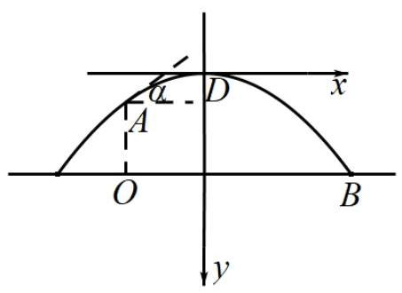
以最高点 D D D x x x y y y
设抛物线方程为 f ( x ) = a x 2 ( a > 0 ) f\left( x\right) = a{x}^{2}\left( {a > 0}\right) f ( x ) = a x 2 ( a > 0 )
则 A ( − 1 a , 1 ) , B ( 3 a , 3 ) A\left( {-\sqrt{\frac{1}{a}},1}\right) , B\left( {\sqrt{\frac{3}{a}},3}\right) A ( − a 1 , 1 ) , B ( a 3 , 3 )
由题意得 3 a − ( − 1 a ) ≥ 10 \sqrt{\frac{3}{a}} - \left( {-\sqrt{\frac{1}{a}}}\right) \geq {10} a 3 − ( − a 1 ) ≥ 10 1 + 3 a ≥ 10 \frac{1 + \sqrt{3}}{\sqrt{a}} \geq {10} a 1 + 3 ≥ 10 a ≤ ( 1 + 3 10 ) 2 a \leq {\left( \frac{1 + \sqrt{3}}{10}\right) }^{2} a ≤ ( 10 1 + 3 ) 2 a = ( 1 + 3 10 ) 2 a = {\left( \frac{1 + \sqrt{3}}{10}\right) }^{2} a = ( 10 1 + 3 ) 2
又 f ′ ( x ) = 2 a x {f}^{\prime }\left( x\right) = {2ax} f ′ ( x ) = 2 a x f ′ ( − 1 a ) = 2 a ( − 1 a ) = − 2 a {f}^{\prime }\left( {-\sqrt{\frac{1}{a}}}\right) = {2a}\left( {-\sqrt{\frac{1}{a}}}\right) = - 2\sqrt{a} f ′ ( − a 1 ) = 2 a ( − a 1 ) = − 2 a
易知 a a a tan a = 2 × 1 + 3 10 = 1 + 3 5 \tan a = 2 \times \frac{1 + \sqrt{3}}{10} = \frac{1 + \sqrt{3}}{5} tan a = 2 × 10 1 + 3 = 5 1 + 3
所以 a = arctan 1 + 3 5 ≈ 28.7 ∘ a = \arctan \frac{1 + \sqrt{3}}{5} \approx {28.7}^{ \circ } a = arctan 5 1 + 3 ≈ 28.7 ∘
故出手角度 a a a 28.7 ∘ {28.7}^{ \circ } 28.7 ∘
浦东 · 第10题 ★★★★☆ · 教师预估 本题资料或解析有待核事项，预览不可作为已审定成品。
已知,圆 O O O A B {AB} A B x x x A B ⌢ \overset{\frown}{AB} A B ⌢ A B {AB} A B y = x + m y = x + m y = x + m m m m
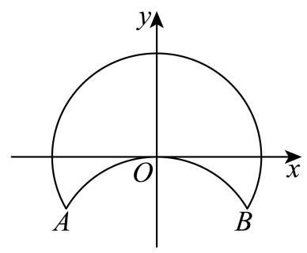
考点： 建立折叠后两圆弧并用交点范围约束。难度依据： 圆弧不是整圆，端点与相切须兼顾
核查说明： 题干第67字符附近：损坏字符或字体覆盖风险，需回源并视觉检查（底稿扫描记录）
展开答案与解析 【答案】 ( 3 − 1 2 , 2 − 1 ) \left( {\frac{\sqrt{3} - 1}{2},\sqrt{2} - 1}\right) ( 2 3 − 1 , 2 − 1 )
【解析】
【详解】 根据题意可知优弧 A B {AB} A B x 2 + y 2 = 1 {x}^{2} + {y}^{2} = 1 x 2 + y 2 = 1 A B {AB} A B x 2 + ( y + 1 ) 2 = 1 , {x}^{2} + {\left( y + 1\right) }^{2} = 1, x 2 + ( y + 1 ) 2 = 1 ,
因为直线 y = x + m y = x + m y = x + m
所以直线 y = x + m y = x + m y = x + m A B {AB} A B A B {AB} A B
所以 { ∣ m ∣ 2 < 1 ∣ 1 + m ∣ 2 < 1 \left\{ \begin{array}{l} \frac{\left| m\right| }{\sqrt{2}} < 1 \\ \frac{\left| 1 + m\right| }{\sqrt{2}} < 1 \end{array}\right. { 2 ∣ m ∣ < 1 2 ∣ 1 + m ∣ < 1 − 2 < m < 2 − 1 - \sqrt{2} < m < \sqrt{2} - 1 − 2 < m < 2 − 1
又直线 y = x + m y = x + m y = x + m A ( − 3 2 , − 1 2 ) A\left( {-\frac{\sqrt{3}}{2}, - \frac{1}{2}}\right) A ( − 2 3 , − 2 1 ) m = − 1 2 − ( − 3 2 ) = 3 − 1 2 m = - \frac{1}{2} - \left( {-\frac{\sqrt{3}}{2}}\right) = \frac{\sqrt{3} - 1}{2} m = − 2 1 − ( − 2 3 ) = 2 3 − 1
所以要使直线 y = x + m y = x + m y = x + m
m m m ( 3 − 1 2 , 2 − 1 ) \left( {\frac{\sqrt{3} - 1}{2},\sqrt{2} - 1}\right) ( 2 3 − 1 , 2 − 1 )
浦东 · 第11题 ★★★☆☆ · 教师预估 某光影科技实验室为长方体空间, 底面是边长为 4 米的正方形, 高为 3 米. 为营造动态光影效果，在底面一个顶点处安装射灯 A A A I I I G G G G G G
考点： 建立空间坐标，用垂直数量积确定天花板圆轨迹。难度依据： 将空间垂直转化轨迹方程
展开答案与解析 【答案】 2 2 π 2\sqrt{2}\pi 2 2 π
【解析】
【详解】 如图建立空间直角坐标系:
则 A ( 4 , 0 , 0 ) , I ( 0 , 4 , 1 ) A\left( {4,0,0}\right) , I\left( {0,4,1}\right) A ( 4 , 0 , 0 ) , I ( 0 , 4 , 1 ) G ( x , y , 3 ) G\left( {x, y,3}\right) G ( x , y , 3 )
所以 A G → = ( x − 4 , y , 3 ) , I G → = ( x , y − 4 , 2 ) \overrightarrow{AG} = \left( {x - 4, y,3}\right) ,\overrightarrow{IG} = \left( {x, y - 4,2}\right) A G = ( x − 4 , y , 3 ) , I G = ( x , y − 4 , 2 )
因为 A G ⊥ I G {AG} \bot {IG} A G ⊥ I G A G → ⋅ I G → = ( x − 4 ) x + ( y − 4 ) y + 3 × 2 = 0 \overrightarrow{AG} \cdot \overrightarrow{IG} = \left( {x - 4}\right) x + \left( {y - 4}\right) y + 3 \times 2 = 0 A G ⋅ I G = ( x − 4 ) x + ( y − 4 ) y + 3 × 2 = 0
整理得 ( x − 2 ) 2 + ( y − 2 ) 2 = 2 {\left( x - 2\right) }^{2} + {\left( y - 2\right) }^{2} = 2 ( x − 2 ) 2 + ( y − 2 ) 2 = 2
所以交点 G G G ( 2 , 2 , 3 ) \left( {2,2,3}\right) ( 2 , 2 , 3 ) 2 \sqrt{2} 2
所以交汇点 G G G 2 2 π 2\sqrt{2}\pi 2 2 π
虹口 · 第12题 ★★★★★ · 教师预估 原题对点集只给出单向限制，尚不能唯一确定完整取值范围；源答案与条件的对称性也存在冲突。
在以 O O O i → = ( 1 , 0 , 0 ) , j → = ( 0 , 1 , 0 ) , A \overrightarrow{i} = \left( {1,0,0}\right) ,\overrightarrow{j} = \left( {0,1,0}\right) , A i = ( 1 , 0 , 0 ) , j = ( 0 , 1 , 0 ) , A B B B A = { P ∣ O P → ⋅ j → = 1 , ⟨ O P → , j → ⟩ = π 4 } A = \left\{ {P\left| {\;\overrightarrow{OP} \cdot \overrightarrow{j} = 1}\right. ,\left\langle {\overrightarrow{OP},\overrightarrow{j}}\right\rangle = \frac{\pi }{4}}\right\} A = { P OP ⋅ j = 1 , ⟨ OP , j ⟩ = 4 π } Q ∈ B Q \in B Q ∈ B P ∈ A P \in A P ∈ A O P → ⋅ O Q → = 2 \overrightarrow{OP} \cdot \overrightarrow{OQ} = 2 OP ⋅ OQ = 2 T ∈ B , O T → = x i → + y j → ( x 、 y ∈ R ) T \in B,\overrightarrow{OT} = x\overrightarrow{i} + y\overrightarrow{j}\left( {x\text{ 、 }y \in \mathbf{R}}\right) T ∈ B , OT = x i + y j ( x 、 y ∈ R ) ∣ O T → − j → ∣ = 2 \left| {\overrightarrow{OT} - \overrightarrow{j}}\right| = 2 OT − j = 2 O T → ⋅ i → \overrightarrow{OT} \cdot \overrightarrow{i} OT ⋅ i
考点： 空间数量积及向量夹角；圆与直线交点存在性；存在量词与点集条件。难度依据： 空间数量积及向量夹角；圆与直线交点存在性；存在量词与点集条件
核查说明： 题设仅说Q属于B时满足存在P的条件，并未说B等于所有满足条件的点构成的最大集合。即使按最大集合理解，T=(x,y,0)的存在条件为|2-y|≤|x|，与x²+(y-1)²=4联立关于x对称，源答案区间不关于x对称，不能作为字面题设已确定的完整范围。
展开答案与解析 【答案】 [ − 2 , − 1 − 7 2 ] ∪ [ − 1 + 7 2 , 2 ] \left\lbrack {-2,\frac{-1 - \sqrt{7}}{2}}\right\rbrack \cup \left\lbrack {\frac{-1 + \sqrt{7}}{2},2}\right\rbrack [ − 2 , 2 − 1 − 7 ] ∪ [ 2 − 1 + 7 , 2 ]
【解析】
【分析】 根据空间向量数量积的坐标表示公式, 结合直线与圆的位置关系进行求解即可.
【详解】 设 P ( x 1 , y 1 , z 1 ) P\left( {{x}_{1},{y}_{1},{z}_{1}}\right) P ( x 1 , y 1 , z 1 ) O P → ⋅ j → = 1 , O P → , j → = π 4 \overrightarrow{OP} \cdot \overrightarrow{j} = 1,\overrightarrow{OP},\overrightarrow{j} = \frac{\pi }{4} OP ⋅ j = 1 , OP , j = 4 π
所以 y 1 = 1 {y}_{1} = 1 y 1 = 1 x 1 2 + 1 + z 1 2 ⋅ 1 ⋅ 2 2 = 1 ⇒ x 1 2 + 1 + z 1 2 = 2 ⇒ x 1 2 + z 1 2 = 1 \sqrt{{x}_{1}^{2} + 1 + {z}_{1}^{2}} \cdot 1 \cdot \frac{\sqrt{2}}{2} = 1 \Rightarrow {x}_{1}^{2} + 1 + {z}_{1}^{2} = 2 \Rightarrow {x}_{1}^{2} + {z}_{1}^{2} = 1 x 1 2 + 1 + z 1 2 ⋅ 1 ⋅ 2 2 = 1 ⇒ x 1 2 + 1 + z 1 2 = 2 ⇒ x 1 2 + z 1 2 = 1
即 P ( x 1 , 1 , z 1 ) P\left( {{x}_{1},1,{z}_{1}}\right) P ( x 1 , 1 , z 1 ) x 1 2 + z 1 2 = 1 {x}_{1}^{2} + {z}_{1}^{2} = 1 x 1 2 + z 1 2 = 1 − 1 ≤ x 1 ≤ 1 - 1 \leq {x}_{1} \leq 1 − 1 ≤ x 1 ≤ 1
设 Q ( a , b , c ) Q\left( {a, b, c}\right) Q ( a , b , c ) O P → ⋅ O Q → = 2 \overrightarrow{OP} \cdot \overrightarrow{OQ} = 2 OP ⋅ OQ = 2 a x 1 + b + c z 1 = 2 a{x}_{1} + b + c{z}_{1} = 2 a x 1 + b + c z 1 = 2
因为 O T → = x i → + y j → ( x 、 y ∈ R ) \overrightarrow{OT} = x\overrightarrow{i} + y\overrightarrow{j}\left( {x\text{ 、 }y \in \mathbf{R}}\right) OT = x i + y j ( x 、 y ∈ R )
所以 O T → = ( x , y , 0 ) \overrightarrow{OT} = \left( {x, y,0}\right) OT = ( x , y , 0 )
因为 ∣ O T → − j → ∣ = 2 \left| {\overrightarrow{OT} - \overrightarrow{j}}\right| = 2 OT − j = 2
所以 x 2 + ( y − 1 ) 2 = 2 ⇒ x 2 + ( y − 1 ) 2 = 4 \sqrt{{x}^{2} + {\left( y - 1\right) }^{2}} = 2 \Rightarrow {x}^{2} + {\left( y - 1\right) }^{2} = 4 x 2 + ( y − 1 ) 2 = 2 ⇒ x 2 + ( y − 1 ) 2 = 4
因为 T ∈ B T \in B T ∈ B x x 1 + y = 2 ⇒ y = 2 − x x 1 x{x}_{1} + y = 2 \Rightarrow y = 2 - x{x}_{1} x x 1 + y = 2 ⇒ y = 2 − x x 1 x 2 + ( y − 1 ) 2 = 4 {x}^{2} + {\left( y - 1\right) }^{2} = 4 x 2 + ( y − 1 ) 2 = 4
得 x 2 + ( 2 − x x 1 − 1 ) 2 = 4 ⇒ ( 1 + x 1 2 ) x 2 − 2 x 1 x − 3 = 0 {x}^{2} + {\left( 2 - x{x}_{1} - 1\right) }^{2} = 4 \Rightarrow \left( {1 + {x}_{1}^{2}}\right) {x}^{2} - 2{x}_{1}x - 3 = 0 x 2 + ( 2 − x x 1 − 1 ) 2 = 4 ⇒ ( 1 + x 1 2 ) x 2 − 2 x 1 x − 3 = 0
Δ = 4 x 1 2 + 12 ( 1 + x 1 2 ) = 12 + 16 x 1 2 > 0 , \Delta = 4{x}_{1}^{2} + {12}\left( {1 + {x}_{1}^{2}}\right) = {12} + {16}{x}_{1}^{2} > 0, Δ = 4 x 1 2 + 12 ( 1 + x 1 2 ) = 12 + 16 x 1 2 > 0 ,
因此直线 x x 1 + y − 2 = 0 x{x}_{1} + y - 2 = 0 x x 1 + y − 2 = 0 x 2 + ( y − 1 ) 2 = 4 {x}^{2} + {\left( y - 1\right) }^{2} = 4 x 2 + ( y − 1 ) 2 = 4
因为 − 1 ≤ x 1 ≤ 1 - 1 \leq {x}_{1} \leq 1 − 1 ≤ x 1 ≤ 1 y = 2 − x x 1 y = 2 - x{x}_{1} y = 2 − x x 1 − x 1 - {x}_{1} − x 1 − 1 ≤ − x 1 ≤ 1 - 1 \leq - {x}_{1} \leq 1 − 1 ≤ − x 1 ≤ 1
由 { x 2 + ( y − 1 ) 2 = 4 y = x + 2 ⇒ 2 x 2 + 2 x − 3 = 0 ⇒ x = − 1 ± 7 2 \left\{ {\begin{array}{l} {x}^{2} + {\left( y - 1\right) }^{2} = 4 \\ y = x + 2 \end{array} \Rightarrow 2{x}^{2} + {2x} - 3 = 0 \Rightarrow x = \frac{-1 \pm \sqrt{7}}{2}}\right. { x 2 + ( y − 1 ) 2 = 4 y = x + 2 ⇒ 2 x 2 + 2 x − 3 = 0 ⇒ x = 2 − 1 ± 7
直线 y = x + 2 y = x + 2 y = x + 2 x 2 + ( y − 1 ) 2 = 4 {x}^{2} + {\left( y - 1\right) }^{2} = 4 x 2 + ( y − 1 ) 2 = 4 A ( − 1 − 7 2 , 0 ) , B ( − 1 + 7 2 , 0 ) A\left( {\frac{-1 - \sqrt{7}}{2},0}\right) , B\left( {\frac{-1 + \sqrt{7}}{2},0}\right) A ( 2 − 1 − 7 , 0 ) , B ( 2 − 1 + 7 , 0 ) y = x + 2 y = x + 2 y = x + 2 y = − x + 2 y = - x + 2 y = − x + 2 ( 0 , 2 ) \left( {0,2}\right) ( 0 , 2 ) x 2 + ( y − 1 ) 2 = 4 {x}^{2} + {\left( y - 1\right) }^{2} = 4 x 2 + ( y − 1 ) 2 = 4
所以当 − 1 ≤ − x 1 ≤ 1 - 1 \leq - {x}_{1} \leq 1 − 1 ≤ − x 1 ≤ 1 x ∈ [ − 2 , − 1 − 7 2 ] ∪ [ − 1 + 7 2 , 2 ] x \in \left\lbrack {-2,\frac{-1 - \sqrt{7}}{2}}\right\rbrack \cup \left\lbrack {\frac{-1 + \sqrt{7}}{2},2}\right\rbrack x ∈ [ − 2 , 2 − 1 − 7 ] ∪ [ 2 − 1 + 7 , 2 ]
因为 O T → ⋅ i → = x \overrightarrow{OT} \cdot \overrightarrow{i} = x OT ⋅ i = x
所以 O T → ⋅ i → \overrightarrow{OT} \cdot \overrightarrow{i} OT ⋅ i [ − 2 , − 1 − 7 2 ] ∪ [ − 1 + 7 2 , 2 ] \left\lbrack {-2,\frac{-1 - \sqrt{7}}{2}}\right\rbrack \cup \left\lbrack {\frac{-1 + \sqrt{7}}{2},2}\right\rbrack [ − 2 , 2 − 1 − 7 ] ∪ [ 2 − 1 + 7 , 2 ]
长宁 · 第12题 ★★★☆☆ · 教师预估 等腰 A B C {ABC} A BC Γ : x 2 2026 + y 2 = 1 \Gamma : \frac{{x}^{2}}{2026} + {y}^{2} = 1 Γ : 2026 x 2 + y 2 = 1 A 、 B 、 C A\text{ 、 }B\text{ 、 }C A 、 B 、 C Γ \Gamma Γ A B C {ABC} A BC
考点： 椭圆顶点与等腰三角形计数。难度依据： 椭圆顶点与等腰三角形计数
展开答案与解析 【答案】 20
【解析】
【详解】 如图所示:
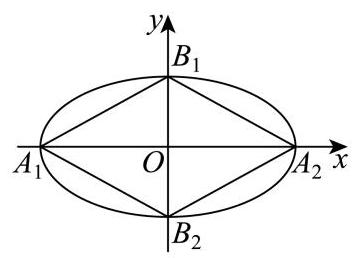
由题意可得 A 1 ( − 2026 , 0 ) , A 2 ( 2026 , 0 ) , B 1 ( 0 , 1 ) , B 2 ( 0 , − 1 ) {A}_{1}\left( {-\sqrt{2026},0}\right) ,{A}_{2}\left( {\sqrt{2026},0}\right) ,{B}_{1}\left( {0,1}\right) ,{B}_{2}\left( {0, - 1}\right) A 1 ( − 2026 , 0 ) , A 2 ( 2026 , 0 ) , B 1 ( 0 , 1 ) , B 2 ( 0 , − 1 )
以 A 1 B 1 {A}_{1}{B}_{1} A 1 B 1 A 1 B 2 {A}_{1}{B}_{2} A 1 B 2 A 2 B 1 {A}_{2}{B}_{1} A 2 B 1 A 2 B 2 {A}_{2}{B}_{2} A 2 B 2
在两侧可各作一个等腰三角形,共有 4 × 2 = 8 4 \times 2 = 8 4 × 2 = 8
以 A 1 B 1 {A}_{1}{B}_{1} A 1 B 1 A 1 B 2 {A}_{1}{B}_{2} A 1 B 2 A 2 B 1 {A}_{2}{B}_{1} A 2 B 1 A 2 B 2 {A}_{2}{B}_{2} A 2 B 2
则 ∣ A 1 B 1 ∣ = 2026 + 1 = 2027 \left| {{A}_{1}{B}_{1}}\right| = \sqrt{{2026} + 1} = \sqrt{2027} ∣ A 1 B 1 ∣ = 2026 + 1 = 2027
设另一点为 P ( x , y ) P\left( {x, y}\right) P ( x , y )
若 ∣ P B 1 ∣ = ∣ A 1 B 1 ∣ \left| {P{B}_{1}}\right| = \left| {{A}_{1}{B}_{1}}\right| ∣ P B 1 ∣ = ∣ A 1 B 1 ∣
即 x 2 + ( y − 1 ) 2 = 2027 {x}^{2} + {\left( y - 1\right) }^{2} = {2027} x 2 + ( y − 1 ) 2 = 2027
由 { x 2 + ( y − 1 ) 2 = 2027 x 2 2026 + y 2 = 1 \left\{ \begin{array}{l} {x}^{2} + {\left( y - 1\right) }^{2} = {2027} \\ \frac{{x}^{2}}{2026} + {y}^{2} = 1 \end{array}\right. { x 2 + ( y − 1 ) 2 = 2027 2026 x 2 + y 2 = 1 y = − 2 2025 ∈ ( − 1 , 1 ) y = - \frac{2}{2025} \in \left( {-1,1}\right) y = − 2025 2 ∈ ( − 1 , 1 ) y = 0 y = 0 y = 0
同理,若 ∣ P A 2 ∣ = ∣ A 2 B 1 ∣ \left| {P{A}_{2}}\right| = \left| {{A}_{2}{B}_{1}}\right| ∣ P A 2 ∣ = ∣ A 2 B 1 ∣
即 ( x − 2026 ) 2 + y 2 = 2027 {\left( x - \sqrt{2026}\right) }^{2} + {y}^{2} = {2027} ( x − 2026 ) 2 + y 2 = 2027
由 { ( x − 2026 ) 2 + y 2 = 2027 x 2 2026 + y 2 = 1 \left\{ \begin{array}{l} {\left( x - \sqrt{2026}\right) }^{2} + {y}^{2} = {2027} \\ \frac{{x}^{2}}{2026} + {y}^{2} = 1 \end{array}\right. { ( x − 2026 ) 2 + y 2 = 2027 2026 x 2 + y 2 = 1 x = 405 + 2026 2025 > 2026 x = \frac{{405} + \sqrt{2026}}{2025} > \sqrt{2026} x = 2025 405 + 2026 > 2026
故只能 ∣ P B 1 ∣ = ∣ A 1 B 1 ∣ \left| {P{B}_{1}}\right| = \left| {{A}_{1}{B}_{1}}\right| ∣ P B 1 ∣ = ∣ A 1 B 1 ∣
这样的点关于 y y y
故共有 4 × 2 = 8 4 \times 2 = 8 4 × 2 = 8
以 B 1 B 2 {B}_{1}{B}_{2} B 1 B 2
因为 ∣ B 1 B 2 ∣ = 2 \left| {{B}_{1}{B}_{2}}\right| = 2 ∣ B 1 B 2 ∣ = 2
设另一点为 P ( x , y ) P\left( {x, y}\right) P ( x , y )
若 ∣ P B 1 ∣ = ∣ B 1 B 2 ∣ = 2 \left| {P{B}_{1}}\right| = \left| {{B}_{1}{B}_{2}}\right| = 2 ∣ P B 1 ∣ = ∣ B 1 B 2 ∣ = 2
即 x 2 + ( y − 1 ) 2 = 4 {x}^{2} + {\left( y - 1\right) }^{2} = 4 x 2 + ( y − 1 ) 2 = 4
由 { x 2 + ( y − 1 ) 2 = 4 x 2 2026 + y 2 = 1 \left\{ \begin{array}{l} {x}^{2} + {\left( y - 1\right) }^{2} = 4 \\ \frac{{x}^{2}}{2026} + {y}^{2} = 1 \end{array}\right. { x 2 + ( y − 1 ) 2 = 4 2026 x 2 + y 2 = 1 y = 2023 2025 ∈ ( − 1 , 1 ) y = \frac{2023}{2025} \in \left( {-1,1}\right) y = 2025 2023 ∈ ( − 1 , 1 )
同理若 ∣ P B 2 ∣ = ∣ B 1 B 2 ∣ = 2 \left| {P{B}_{2}}\right| = \left| {{B}_{1}{B}_{2}}\right| = 2 ∣ P B 2 ∣ = ∣ B 1 B 2 ∣ = 2
即 x 2 + ( y + 1 ) 2 = 4 {x}^{2} + {\left( y + 1\right) }^{2} = 4 x 2 + ( y + 1 ) 2 = 4
由 { x 2 + ( y + 1 ) 2 = 4 x 2 2026 + y 2 = 1 \left\{ \begin{array}{l} {x}^{2} + {\left( y + 1\right) }^{2} = 4 \\ \frac{{x}^{2}}{2026} + {y}^{2} = 1 \end{array}\right. { x 2 + ( y + 1 ) 2 = 4 2026 x 2 + y 2 = 1 y = − 2023 2025 ∈ ( − 1 , 1 ) y = - \frac{2023}{2025} \in \left( {-1,1}\right) y = − 2025 2023 ∈ ( − 1 , 1 )
这样的点关于 y y y
若 A 1 A 2 , B 1 B 2 {A}_{1}{A}_{2},{B}_{1}{B}_{2} A 1 A 2 , B 1 B 2 Γ \Gamma Γ
综上,共有 8 + 8 + 4 = 20 8 + 8 + 4 = {20} 8 + 8 + 4 = 20
闵行 · 第15题 ★★★☆☆ · 教师预估 本题资料或解析有待核事项，预览不可作为已审定成品。
若平面直角坐标系 x O y {xOy} x O y P P P x x x y y y
①存在点 P P P x x x y y y
②存在点 P P P x x x y y y
则以下选项正确的是 ( )
A. ①不正确，②不正确
B. ①正确，②正确
C. ①正确，②不正确
D. ①不正确，②正确
考点： 点到坐标轴距离；基本不等式。难度依据： 点到坐标轴距离；基本不等式
核查说明： 底稿B、C选项文字相同，需回核题图。
展开答案与解析 【答案】 C
【解析】
【详解】 设 P ( m , n ) P\left( {m, n}\right) P ( m , n ) ∣ m ∣ + ∣ n ∣ = 1 \left| m\right| + \left| n\right| = 1 ∣ m ∣ + ∣ n ∣ = 1
对于①,当 m = 0 m = 0 m = 0 ∣ n ∣ = 1 \left| n\right| = 1 ∣ n ∣ = 1 ∣ n ∣ − ∣ m ∣ = 1 \left| n\right| - \left| m\right| = 1 ∣ n ∣ − ∣ m ∣ = 1 P P P x x x y y y
对于②，由基本不等式可得 ∣ m ∣ + ∣ n ∣ ≥ 2 ∣ m ∣ ⋅ ∣ n ∣ \left| m\right| + \left| n\right| \geq 2\sqrt{\left| m\right| \cdot \left| n\right| } ∣ m ∣ + ∣ n ∣ ≥ 2 ∣ m ∣ ⋅ ∣ n ∣ 2 ∣ m ∣ ⋅ ∣ n ∣ ≤ 1 2\sqrt{\left| m\right| \cdot \left| n\right| } \leq 1 2 ∣ m ∣ ⋅ ∣ n ∣ ≤ 1 ∣ m ∣ ⋅ ∣ n ∣ ≤ 1 4 \left| m\right| \cdot \left| n\right| \leq \frac{1}{4} ∣ m ∣ ⋅ ∣ n ∣ ≤ 4 1
青浦 · 第15题 ★★★☆☆ · 教师预估 已知垂直竖在水平地面上相距 20 米的两根旗杆的高分别为 10 米和 15 米, 地面上的动点 P P P P P P
A. 椭圆
B. 圆
C. 双曲线
D. 抛物线
考点： 等仰角转距离比与圆轨迹。难度依据： 等仰角转距离比与圆轨迹
展开答案与解析 【答案】 B
【解析】
【详解】 如图, 建立直角坐标系
依题意可得, ∣ O A ∣ = 10 , ∣ B C ∣ = 15 , ∣ O B ∣ = 20 , ∠ A P O = ∠ B P C \left| {OA}\right| = {10},\left| {BC}\right| = {15},\left| {OB}\right| = {20},\angle {APO} = \angle {BPC} ∣ O A ∣ = 10 , ∣ BC ∣ = 15 , ∣ OB ∣ = 20 , ∠ A PO = ∠ BPC
则 O ( 0 , 0 ) , A ( 0 , 10 ) , B ( 20 , 0 ) , C ( 20 , 15 ) O\left( {0,0}\right) , A\left( {0,{10}}\right) , B\left( {{20},0}\right) , C\left( {{20},{15}}\right) O ( 0 , 0 ) , A ( 0 , 10 ) , B ( 20 , 0 ) , C ( 20 , 15 )
设 P ( x , y ) P\left( {x, y}\right) P ( x , y ) ∠ A P O = ∠ B P C \angle {APO} = \angle {BPC} ∠ A PO = ∠ BPC tan ∠ A P O = tan ∠ B P C \tan \angle {APO} = \tan \angle {BPC} tan ∠ A PO = tan ∠ BPC
则 ∣ O A ∣ ∣ O P ∣ = ∣ B C ∣ ∣ B P ∣ \frac{\left| OA\right| }{\left| OP\right| } = \frac{\left| BC\right| }{\left| BP\right| } ∣ OP ∣ ∣ O A ∣ = ∣ BP ∣ ∣ BC ∣ 10 x 2 + y 2 = 15 ( x − 20 ) 2 + y 2 \frac{10}{\sqrt{{x}^{2} + {y}^{2}}} = \frac{15}{\sqrt{{\left( x - {20}\right) }^{2} + {y}^{2}}} x 2 + y 2 10 = ( x − 20 ) 2 + y 2 15
化简可得 x 2 + 32 x + y 2 − 320 = 0 {x}^{2} + {32x} + {y}^{2} - {320} = 0 x 2 + 32 x + y 2 − 320 = 0 ( x + 16 ) 2 + y 2 = 576 {\left( x + {16}\right) }^{2} + {y}^{2} = {576} ( x + 16 ) 2 + y 2 = 576
所以 P P P
静安 · 第11题 ★★★★☆ · 教师预估 本题资料或解析有待核事项，预览不可作为已审定成品。
若满足 ∣ z ∣ = 5 \left| z\right| = 5 ∣ z ∣ = 5 ∣ z + 5 ∣ − ∣ z − 5 ∣ = 6 \left| {z + 5}\right| - \left| {z - 5}\right| = 6 ∣ z + 5 ∣ − ∣ z − 5 ∣ = 6 z z z z 1 、 z 2 {z}_{1}\text{ 、 }{z}_{2} z 1 、 z 2 ∣ z 1 − z 2 ∣ = \left| {{z}_{1} - {z}_{2}}\right| = ∣ z 1 − z 2 ∣ =
考点： 复数对应点与轨迹；圆与双曲线交点。难度依据： 复数对应点与轨迹；圆与双曲线交点
核查说明： 仅本题解析局部回核；其他题未据此判定终审通过。；源解析曾误写y²=±16/5；已回源并独立复核修订为y=±16/5。
展开答案与解析 【答案】 32 5 \frac{32}{5} 5 32
【解析】
【分析】 设 Z ( x , y ) Z\left( {x, y}\right) Z ( x , y ) x 2 + y 2 = 25 , x 2 9 − y 2 16 = 1 ( x > 0 ) {x}^{2} + {y}^{2} = {25},\frac{{x}^{2}}{9} - \frac{{y}^{2}}{16} = 1\left( {x > 0}\right) x 2 + y 2 = 25 , 9 x 2 − 16 y 2 = 1 ( x > 0 )
【详解】 设 Z ( x , y ) , O ( 0 , 0 ) , F 1 ( − 5 , 0 ) , F 2 ( 5 , 0 ) Z\left( {x, y}\right) , O\left( {0,0}\right) ,{F}_{1}\left( {-5,0}\right) ,{F}_{2}\left( {5,0}\right) Z ( x , y ) , O ( 0 , 0 ) , F 1 ( − 5 , 0 ) , F 2 ( 5 , 0 )
因为 ∣ z ∣ = 5 \left| z\right| = 5 ∣ z ∣ = 5 ∣ O Z ∣ = 5 \left| {OZ}\right| = 5 ∣ OZ ∣ = 5 Z Z Z O ( 0 , 0 ) O\left( {0,0}\right) O ( 0 , 0 )
可得 x 2 + y 2 = 25 {x}^{2} + {y}^{2} = {25} x 2 + y 2 = 25
且 ∣ z + 5 ∣ − ∣ z − 5 ∣ = 6 \left| {z + 5}\right| - \left| {z - 5}\right| = 6 ∣ z + 5 ∣ − ∣ z − 5 ∣ = 6 ∣ Z F 1 ∣ − ∣ Z F 2 ∣ = 6 < 10 \left| {Z{F}_{1}}\right| - \left| {Z{F}_{2}}\right| = 6 < {10} ∣ Z F 1 ∣ − ∣ Z F 2 ∣ = 6 < 10 Z Z Z F 1 , F 2 {F}_{1},{F}_{2} F 1 , F 2
则 a = 3 , c = 5 , b = c 2 − a 2 = 4 a = 3, c = 5, b = \sqrt{{c}^{2} - {a}^{2}} = 4 a = 3 , c = 5 , b = c 2 − a 2 = 4 x 2 9 − y 2 16 = 1 ( x > 0 ) \frac{{x}^{2}}{9} - \frac{{y}^{2}}{16} = 1\left( {x > 0}\right) 9 x 2 − 16 y 2 = 1 ( x > 0 )
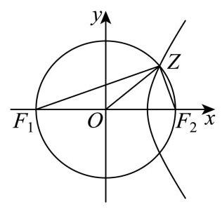
联立方程 { x 2 + y 2 = 25 x 2 9 − y 2 16 = 1 \left\{ \begin{array}{l} {x}^{2} + {y}^{2} = {25} \\ \frac{{x}^{2}}{9} - \frac{{y}^{2}}{16} = 1 \end{array}\right. { x 2 + y 2 = 25 9 x 2 − 16 y 2 = 1 { x 2 = 369 25 y 2 = 256 25 \left\{ \begin{array}{l} {x}^{2} = \frac{369}{25} \\ {y}^{2} = \frac{256}{25} \end{array}\right. { x 2 = 25 369 y 2 = 25 256
且 x > 0 x > 0 x > 0 { x = 3 41 5 y = ± 16 5 \left\{ \begin{array}{l} x = \frac{3\sqrt{41}}{5} \\ y = \pm \frac{16}{5} \end{array}\right. { x = 5 3 41 y = ± 5 16 Z 1 ( 3 41 5 , 16 5 ) , Z 2 ( 3 41 5 , − 16 5 ) {Z}_{1}\left( {\frac{3\sqrt{41}}{5},\frac{16}{5}}\right) ,{Z}_{2}\left( {\frac{3\sqrt{41}}{5}, - \frac{16}{5}}\right) Z 1 ( 5 3 41 , 5 16 ) , Z 2 ( 5 3 41 , − 5 16 )
所以 ∣ z 1 − z 2 ∣ = ∣ Z 1 − Z 2 ∣ = 32 5 \left| {{z}_{1} - {z}_{2}}\right| = \left| {{Z}_{1} - {Z}_{2}}\right| = \frac{32}{5} ∣ z 1 − z 2 ∣ = ∣ Z 1 − Z 2 ∣ = 5 32
【复核修订说明】上述开平方后的变量由原合并稿误写的 y 2 y^2 y 2 y y y y 2 = 256 / 25 y^2=256/25 y 2 = 256/25 y = ± 16 / 5 y=\pm16/5 y = ± 16/5 32 / 5 32/5 32/5
距离、范围与面积最值 把复数或几何约束化为圆弧、公共区域及目标函数，检验最值可达。
宝山 · 第11题 ★★★★☆ · 教师预估 已知点 P 、 Q P\text{ 、 }Q P 、 Q x 2 9 + y 2 5 = 1 \frac{{x}^{2}}{9} + \frac{{y}^{2}}{5} = 1 9 x 2 + 5 y 2 = 1 ( x − 2 ) 2 + y 2 = 1 {\left( x - 2\right) }^{2} + {y}^{2} = 1 ( x − 2 ) 2 + y 2 = 1 A ( 2 , 1 ) A\left( {2,1}\right) A ( 2 , 1 ) ∣ P A ∣ + ∣ P Q ∣ \left| {PA}\right| + \left| {PQ}\right| ∣ P A ∣ + ∣ PQ ∣
考点： 椭圆焦点定义与圆上距离最值；三角不等式及等号条件。难度依据： 椭圆焦点定义与圆上距离最值；三角不等式及等号条件
展开答案与解析 【答案】 7 + 17 7 + \sqrt{17} 7 + 17 17 + 7 \sqrt{17} + 7 17 + 7
【解析】
【分析】 根据给定条件,利用椭圆的定义将所求最大值转化为求值 5 + ∣ P A ∣ − ∣ P F ′ ∣ 5 + \left| {PA}\right| - \left| {P{F}^{\prime }}\right| 5 + ∣ P A ∣ − ∣ P F ′ ∣
【详解】 因为 F ( 2 , 0 ) F\left( {2,0}\right) F ( 2 , 0 ) x 2 9 + y 2 5 = 1 \frac{{x}^{2}}{9} + \frac{{y}^{2}}{5} = 1 9 x 2 + 5 y 2 = 1 F ′ ( − 2 , 0 ) {F}^{\prime }\left( {-2,0}\right) F ′ ( − 2 , 0 )
圆 ( x − 2 ) 2 + y 2 = 1 {\left( x - 2\right) }^{2} + {y}^{2} = 1 ( x − 2 ) 2 + y 2 = 1 C ( 2 , 0 ) C\left( {2,0}\right) C ( 2 , 0 ) r = 1 r = 1 r = 1 ∣ P F ∣ = 6 − ∣ P F ′ ∣ \left| {PF}\right| = 6 - \left| {P{F}^{\prime }}\right| ∣ PF ∣ = 6 − ∣ P F ′ ∣
则 ∣ P Q ∣ + ∣ P A ∣ ≤ ∣ P F ∣ + 1 + ∣ P A ∣ = 6 − ∣ P F ′ ∣ + 1 + ∣ P A ∣ = 7 + ∣ P A ∣ − ∣ P F ′ ∣ \left| {PQ}\right| + \left| {PA}\right| \leq \left| {PF}\right| + 1 + \left| {PA}\right| = 6 - \left| {P{F}^{\prime }}\right| + 1 + \left| {PA}\right| = 7 + \left| {PA}\right| - \left| {P{F}^{\prime }}\right| ∣ PQ ∣ + ∣ P A ∣ ≤ ∣ PF ∣ + 1 + ∣ P A ∣ = 6 − ∣ P F ′ ∣ + 1 + ∣ P A ∣ = 7 + ∣ P A ∣ − ∣ P F ′ ∣
而 ∣ P A ∣ − ∣ P F ′ ∣ ≤ ∣ A F ′ ∣ = 16 + 1 = 17 \left| {PA}\right| - \left| {P{F}^{\prime }}\right| \leq \left| {A{F}^{\prime }}\right| = \sqrt{{16} + 1} = \sqrt{17} ∣ P A ∣ − ∣ P F ′ ∣ ≤ ∣ A F ′ ∣ = 16 + 1 = 17 P P P A F ′ A{F}^{\prime } A F ′ P P P A F ′ A{F}^{\prime } A F ′ Q Q Q P F {PF} PF ∣ P A ∣ + ∣ P Q ∣ \left| {PA}\right| + \left| {PQ}\right| ∣ P A ∣ + ∣ PQ ∣ 7 + 17 7 + \sqrt{17} 7 + 17
徐汇 · 第11题 ★★★★☆ · 教师预估 本题资料或解析有待核事项，预览不可作为已审定成品。
已知复数 w 1 , w 2 {w}_{1},{w}_{2} w 1 , w 2 w 1 ‾ − w 2 ‾ = 4 w 1 − w 2 \overline{{w}_{1}} - \overline{{w}_{2}} = \frac{4}{{w}_{1} - {w}_{2}} w 1 − w 2 = w 1 − w 2 4 ∣ z − w i ∣ ∈ [ 1 , 3 ] ( i = 1 , 2 ) \left| {z - {w}_{i}}\right| \in \left\lbrack {1,3}\right\rbrack \left( {i = 1,2}\right) ∣ z − w i ∣ ∈ [ 1 , 3 ] ( i = 1 , 2 ) z z z A A A z 1 ∈ A {z}_{1} \in A z 1 ∈ A z 2 ∈ A {z}_{2} \in A z 2 ∈ A ∣ z 1 − z 2 ∣ \left| {{z}_{1} - {z}_{2}}\right| ∣ z 1 − z 2 ∣
考点： 模约束确定圆环交集与最远点距离。难度依据： 需辨认两个约束同时成立并优化距离
核查说明： 教研整理PDF第1页题面同时满足两圆环，第8页答案为[0,4√2]；合并MD答案[0,8]与两圆环交集条件不符，原解析把两个点分别放在不同圆环上，须整体重写并独立复核。
展开答案与解析 【答案】 [ 0 , 4 2 ] [0,4\sqrt{2}] [ 0 , 4 2 ]
【解析·独立复核修订】
由题设分式有意义，w 1 ≠ w 2 w_1\ne w_2 w 1 = w 2 w 1 − w 2 w_1-w_2 w 1 − w 2
∣ w 1 − w 2 ∣ 2 = 4 , ∣ w 1 − w 2 ∣ = 2.
|w_1-w_2|^2=4,\qquad |w_1-w_2|=2.
∣ w 1 − w 2 ∣ 2 = 4 , ∣ w 1 − w 2 ∣ = 2.
设两圆心的中点为 m = ( w 1 + w 2 ) / 2 m=(w_1+w_2)/2 m = ( w 1 + w 2 ) /2 z ∈ A z\in A z ∈ A
∣ z − w 1 ∣ 2 + ∣ z − w 2 ∣ 2 = 2 ∣ z − m ∣ 2 + 1 2 ∣ w 1 − w 2 ∣ 2 = 2 ∣ z − m ∣ 2 + 2.
|z-w_1|^2+|z-w_2|^2
=2|z-m|^2+\frac12|w_1-w_2|^2
=2|z-m|^2+2.
∣ z − w 1 ∣ 2 + ∣ z − w 2 ∣ 2 = 2∣ z − m ∣ 2 + 2 1 ∣ w 1 − w 2 ∣ 2 = 2∣ z − m ∣ 2 + 2.
因为两个距离都不超过 3 3 3 2 ∣ z − m ∣ 2 + 2 ≤ 18 2|z-m|^2+2\le18 2∣ z − m ∣ 2 + 2 ≤ 18 ∣ z − m ∣ ≤ 2 2 |z-m|\le2\sqrt2 ∣ z − m ∣ ≤ 2 2
∣ z 1 − z 2 ∣ ≤ ∣ z 1 − m ∣ + ∣ z 2 − m ∣ ≤ 4 2 .
|z_1-z_2|\le |z_1-m|+|z_2-m|\le4\sqrt2.
∣ z 1 − z 2 ∣ ≤ ∣ z 1 − m ∣ + ∣ z 2 − m ∣ ≤ 4 2 .
还需证明每个值可以达到。令 u = ( w 1 − w 2 ) / 2 u=(w_1-w_2)/2 u = ( w 1 − w 2 ) /2 ∣ u ∣ = 1 |u|=1 ∣ u ∣ = 1 t ∈ [ 0 , 2 2 ] t\in[0,2\sqrt2] t ∈ [ 0 , 2 2 ]
z 1 = m + i t u , z 2 = m − i t u .
z_1=m+\mathrm{i}tu,\qquad z_2=m-\mathrm{i}tu.
z 1 = m + i t u , z 2 = m − i t u .
由于 u u u i u \mathrm{i}u i u 1 + t 2 \sqrt{1+t^2} 1 + t 2 [ 1 , 3 ] [1,3] [ 1 , 3 ] z 1 , z 2 ∈ A z_1,z_2\in A z 1 , z 2 ∈ A ∣ z 1 − z 2 ∣ = 2 t |z_1-z_2|=2t ∣ z 1 − z 2 ∣ = 2 t t t t [ 0 , 2 2 ] [0,2\sqrt2] [ 0 , 2 2 ] [ 0 , 4 2 ] [0,4\sqrt2] [ 0 , 4 2 ]
因此答案为 [ 0 , 4 2 ] [0,4\sqrt2] [ 0 , 4 2 ] [ 0 , 8 ] [0,8] [ 0 , 8 ] z 1 , z 2 z_1,z_2 z 1 , z 2
普陀 · 第16题 ★★★★☆ · 教师预估 在直角坐标平面中,方程 ( x + 9 − y 2 ) ( x − 18 − 2 y 2 ) = 0 \left( {x + \sqrt{9 - {y}^{2}}}\right) \left( {x - \sqrt{{18} - 2{y}^{2}}}\right) = 0 ( x + 9 − y 2 ) ( x − 18 − 2 y 2 ) = 0 G G G P , Q P, Q P , Q G G G O O O
①若点 A ( − 3 , 0 ) 、 B ( 3 , 0 ) A\left( {-3,0}\right) \text{ 、 }B\left( {3,0}\right) A ( − 3 , 0 ) 、 B ( 3 , 0 ) ∣ P A ∣ + ∣ P B ∣ \left| {PA}\right| + \left| {PB}\right| ∣ P A ∣ + ∣ PB ∣
②若 O P ⊥ O Q {OP} \bot {OQ} OP ⊥ OQ 1 ∣ O P ∣ 2 + 1 ∣ O Q ∣ 2 \frac{1}{{\left| OP\right| }^{2}} + \frac{1}{{\left| OQ\right| }^{2}} ∣ OP ∣ 2 1 + ∣ OQ ∣ 2 1 [ 1 6 , 2 9 ] \left\lbrack {\frac{1}{6},\frac{2}{9}}\right\rbrack [ 6 1 , 9 2 ]
则下列结论中正确的是 ( )
A. ①为真②为真
B. ①为真②为假
C. ①为假②为真
D. ①为假 ②为假
考点： 半圆半椭圆拼接曲线及距离范围；新定义曲线与命题真假；垂直向量坐标关系。难度依据： 半圆半椭圆拼接曲线及距离范围；新定义曲线与命题真假；垂直向量坐标关系
展开答案与解析 【答案】 C
【解析】
【分析】 先根据方程可得曲线是由半个圆和半个椭圆组成的一条曲线, 再对条件①判断, 根据椭圆的定义及计算圆的一点到两个定点的距离和范围可得命题的真假; 对条件②根据 P , Q P, Q P , Q
【详解】 因为方程 ( x + 9 − y 2 ) ( x − 18 − 2 y 2 ) = 0 \left( {x + \sqrt{9 - {y}^{2}}}\right) \left( {x - \sqrt{{18} - 2{y}^{2}}}\right) = 0 ( x + 9 − y 2 ) ( x − 18 − 2 y 2 ) = 0 x + 9 − y 2 = 0 ( x ≤ 0 ) x + \sqrt{9 - {y}^{2}} = 0\left( {x \leq 0}\right) x + 9 − y 2 = 0 ( x ≤ 0 ) x − 18 − 2 y 2 = 0 ( x ≥ 0 ) . x - \sqrt{{18} - 2{y}^{2}} = 0\left( {x \geq 0}\right) . x − 18 − 2 y 2 = 0 ( x ≥ 0 ) .
若 x + 9 − y 2 = 0 ( x ≤ 0 ) x + \sqrt{9 - {y}^{2}} = 0\left( {x \leq 0}\right) x + 9 − y 2 = 0 ( x ≤ 0 ) x 2 + y 2 = 9 ( x ≤ 0 ) {x}^{2} + {y}^{2} = 9\left( {x \leq 0}\right) x 2 + y 2 = 9 ( x ≤ 0 ) O O O r = 3 r = 3 r = 3
若 x − 18 − 2 y 2 = 0 ( x ≥ 0 ) x - \sqrt{{18} - 2{y}^{2}} = 0\left( {x \geq 0}\right) x − 18 − 2 y 2 = 0 ( x ≥ 0 ) x 2 18 + y 2 9 = 1 ( x ≥ 0 ) \frac{{x}^{2}}{18} + \frac{{y}^{2}}{9} = 1\left( {x \geq 0}\right) 18 x 2 + 9 y 2 = 1 ( x ≥ 0 ) a = 3 2 a = 3\sqrt{2} a = 3 2 b = 3 b = 3 b = 3
对于①，若点 P P P A ( − 3 , 0 ) A\left( {-3,0}\right) A ( − 3 , 0 ) B ( 3 , 0 ) B\left( {3,0}\right) B ( 3 , 0 ) x 2 18 + y 2 9 = 1 \frac{{x}^{2}}{18} + \frac{{y}^{2}}{9} = 1 18 x 2 + 9 y 2 = 1 ∣ P A ∣ + ∣ P B ∣ = 2 a = 6 2 > 8 \left| {PA}\right| + \left| {PB}\right| = {2a} = 6\sqrt{2} > 8 ∣ P A ∣ + ∣ PB ∣ = 2 a = 6 2 > 8 P P P ∣ P A ∣ + ∣ P B ∣ = 8 \left| {PA}\right| + \left| {PB}\right| = 8 ∣ P A ∣ + ∣ PB ∣ = 8
若点 P P P A ( − 3 , 0 ) 、 B ( 3 , 0 ) A\left( {-3,0}\right) \text{ 、 }B\left( {3,0}\right) A ( − 3 , 0 ) 、 B ( 3 , 0 ) x 2 + y 2 = 9 {x}^{2} + {y}^{2} = 9 x 2 + y 2 = 9 P ( x , y ) P\left( {x, y}\right) P ( x , y ) ∣ P A ∣ + ∣ P B ∣ = ( x + 3 ) 2 + y 2 + ( x − 3 ) 2 + y 2 = 18 + 6 x + 18 − 6 x \left| {PA}\right| + \left| {PB}\right| = \sqrt{{\left( x + 3\right) }^{2} + {y}^{2}} + \sqrt{{\left( x - 3\right) }^{2} + {y}^{2}} = \sqrt{{18} + {6x}} + \sqrt{{18} - {6x}} ∣ P A ∣ + ∣ PB ∣ = ( x + 3 ) 2 + y 2 + ( x − 3 ) 2 + y 2 = 18 + 6 x + 18 − 6 x ( ∣ P A ∣ + ∣ P B ∣ ) 2 = 36 + 2 ( 18 + 6 x ) ( 18 − 6 x ) = 36 + 12 9 − x 2 {\left( \left| PA\right| + \left| PB\right| \right) }^{2} = {36} + 2\sqrt{\left( {{18} + {6x}}\right) \left( {{18} - {6x}}\right) } = {36} + {12}\sqrt{9 - {x}^{2}} ( ∣ P A ∣ + ∣ PB ∣ ) 2 = 36 + 2 ( 18 + 6 x ) ( 18 − 6 x ) = 36 + 12 9 − x 2
因为 − 3 ≤ x ≤ 0 - 3 \leq x \leq 0 − 3 ≤ x ≤ 0 0 ≤ 9 − x 2 ≤ 9 , 0 ≤ 9 − x 2 ≤ 3 , 36 ≤ ( ∣ P A ∣ + ∣ P B ∣ ) 2 ≤ 36 + 36 0 \leq 9 - {x}^{2} \leq 9,0 \leq \sqrt{9 - {x}^{2}} \leq 3,{36} \leq {\left( \left| PA\right| + \left| PB\right| \right) }^{2} \leq {36} + {36} 0 ≤ 9 − x 2 ≤ 9 , 0 ≤ 9 − x 2 ≤ 3 , 36 ≤ ( ∣ P A ∣ + ∣ PB ∣ ) 2 ≤ 36 + 36 6 ≤ ∣ P A ∣ + ∣ P B ∣ ≤ 6 2 6 \leq \left| {PA}\right| + \left| {PB}\right| \leq 6\sqrt{2} 6 ≤ ∣ P A ∣ + ∣ PB ∣ ≤ 6 2 8 ∈ [ 6 , 6 2 ] 8 \in \left\lbrack {6,6\sqrt{2}}\right\rbrack 8 ∈ [ 6 , 6 2 ] P P P ∣ P A ∣ + ∣ P B ∣ = 8 \left| {PA}\right| + \left| {PB}\right| = 8 ∣ P A ∣ + ∣ PB ∣ = 8
对于②，若 P P P ∣ O P ∣ = 3 \left| {OP}\right| = 3 ∣ OP ∣ = 3 1 ∣ O P ∣ 2 = 1 9 \frac{1}{{\left| OP\right| }^{2}} = \frac{1}{9} ∣ OP ∣ 2 1 = 9 1
若 P P P ∣ O P ∣ 2 = x 2 + y 2 = 18 − 2 y 2 + y 2 = 18 − y 2 {\left| OP\right| }^{2} = {x}^{2} + {y}^{2} = {18} - 2{y}^{2} + {y}^{2} = {18} - {y}^{2} ∣ OP ∣ 2 = x 2 + y 2 = 18 − 2 y 2 + y 2 = 18 − y 2 − 3 ≤ y ≤ 3 - 3 \leq y \leq 3 − 3 ≤ y ≤ 3 9 ≤ 18 − y 2 ≤ 18 9 \leq {18} - {y}^{2} \leq {18} 9 ≤ 18 − y 2 ≤ 18 9 ≤ ∣ O P ∣ 2 ≤ 18 , 1 ∣ O P ∣ 2 ∈ [ 1 18 , 1 9 ] 9 \leq {\left| OP\right| }^{2} \leq {18},\frac{1}{{\left| OP\right| }^{2}} \in \left\lbrack {\frac{1}{18},\frac{1}{9}}\right\rbrack 9 ≤ ∣ OP ∣ 2 ≤ 18 , ∣ OP ∣ 2 1 ∈ [ 18 1 , 9 1 ] P , Q P, Q P , Q
(i) 若 P , Q P, Q P , Q ∣ O P ∣ = 3 , ∣ O Q ∣ = 3 , 1 ∣ O P ∣ 2 = 1 9 , 1 ∣ O Q ∣ 2 = 1 9 \left| {OP}\right| = 3,\left| {OQ}\right| = 3,\frac{1}{{\left| OP\right| }^{2}} = \frac{1}{9},\frac{1}{{\left| OQ\right| }^{2}} = \frac{1}{9} ∣ OP ∣ = 3 , ∣ OQ ∣ = 3 , ∣ OP ∣ 2 1 = 9 1 , ∣ OQ ∣ 2 1 = 9 1 1 ∣ O P ∣ 2 + 1 ∣ O Q ∣ 2 = 1 9 + 1 9 = 2 9 \frac{1}{{\left| OP\right| }^{2}} + \frac{1}{{\left| OQ\right| }^{2}} = \frac{1}{9} + \frac{1}{9} = \frac{2}{9} ∣ OP ∣ 2 1 + ∣ OQ ∣ 2 1 = 9 1 + 9 1 = 9 2
(ii) 若 P P P Q Q Q 1 ∣ O P ∣ 2 = 1 9 , 1 ∣ O Q ∣ 2 ∈ [ 1 18 , 1 9 ] \frac{1}{{\left| OP\right| }^{2}} = \frac{1}{9},\frac{1}{{\left| OQ\right| }^{2}} \in \left\lbrack {\frac{1}{18},\frac{1}{9}}\right\rbrack ∣ OP ∣ 2 1 = 9 1 , ∣ OQ ∣ 2 1 ∈ [ 18 1 , 9 1 ] 1 9 + 1 18 ≤ 1 ∣ O P ∣ 2 + 1 ∣ O Q ∣ 2 ≤ 1 9 + 1 9 \frac{1}{9} + \frac{1}{18} \leq \frac{1}{{\left| OP\right| }^{2}} + \frac{1}{{\left| OQ\right| }^{2}} \leq \frac{1}{9} + \frac{1}{9} 9 1 + 18 1 ≤ ∣ OP ∣ 2 1 + ∣ OQ ∣ 2 1 ≤ 9 1 + 9 1 1 ∣ O P ∣ 2 + 1 ∣ O Q ∣ 2 ∈ [ 1 6 , 2 9 ] \frac{1}{{\left| OP\right| }^{2}} + \frac{1}{{\left| OQ\right| }^{2}} \in \left\lbrack {\frac{1}{6},\frac{2}{9}}\right\rbrack ∣ OP ∣ 2 1 + ∣ OQ ∣ 2 1 ∈ [ 6 1 , 9 2 ]
(iii) 若 Q Q Q P P P 1 ∣ O Q ∣ 2 = 1 9 , 1 ∣ O P ∣ 2 ∈ [ 1 18 , 1 9 ] \frac{1}{{\left| OQ\right| }^{2}} = \frac{1}{9},\frac{1}{{\left| OP\right| }^{2}} \in \left\lbrack {\frac{1}{18},\frac{1}{9}}\right\rbrack ∣ OQ ∣ 2 1 = 9 1 , ∣ OP ∣ 2 1 ∈ [ 18 1 , 9 1 ] 1 9 + 1 18 ≤ 1 ∣ O Q ∣ 2 + 1 ∣ O P ∣ 2 ≤ 1 9 + 1 9 \frac{1}{9} + \frac{1}{18} \leq \frac{1}{{\left| OQ\right| }^{2}} + \frac{1}{{\left| OP\right| }^{2}} \leq \frac{1}{9} + \frac{1}{9} 9 1 + 18 1 ≤ ∣ OQ ∣ 2 1 + ∣ OP ∣ 2 1 ≤ 9 1 + 9 1 1 ∣ O P ∣ 2 + 1 ∣ O Q ∣ 2 ∈ [ 1 6 , 2 9 ] \frac{1}{{\left| OP\right| }^{2}} + \frac{1}{{\left| OQ\right| }^{2}} \in \left\lbrack {\frac{1}{6},\frac{2}{9}}\right\rbrack ∣ OP ∣ 2 1 + ∣ OQ ∣ 2 1 ∈ [ 6 1 , 9 2 ]
(iv) 若 P , Q P, Q P , Q P ( 3 2 cos a , 3 sin a ) , Q ( 3 2 cos β , 3 sin β ) P\left( {3\sqrt{2}\cos a,3\sin a}\right) , Q\left( {3\sqrt{2}\cos \beta ,3\sin \beta }\right) P ( 3 2 cos a , 3 sin a ) , Q ( 3 2 cos β , 3 sin β ) a , β ∈ [ − π 2 , π 2 ] a,\beta \in \left\lbrack {-\frac{\pi }{2},\frac{\pi }{2}}\right\rbrack a , β ∈ [ − 2 π , 2 π ] O P ⊥ O Q {OP} \bot {OQ} OP ⊥ OQ O P → ⋅ O Q → = 0 \overrightarrow{OP} \cdot \overrightarrow{OQ} = 0 OP ⋅ OQ = 0
即 18 cos a cos β + 9 sin a sin β = 0 , 2 cos a cos β = − sin a sin β {18}\cos a\cos \beta + 9\sin a\sin \beta = 0,2\cos a\cos \beta = - \sin a\sin \beta 18 cos a cos β + 9 sin a sin β = 0 , 2 cos a cos β = − sin a sin β
所以 1 ∣ O P ∣ 2 = 1 18 cos 2 a + 9 sin 2 a = 1 9 ( cos 2 a + 1 ) \frac{1}{{\left| OP\right| }^{2}} = \frac{1}{{18}{\cos }^{2}a + 9{\sin }^{2}a} = \frac{1}{9\left( {{\cos }^{2}a + 1}\right) } ∣ OP ∣ 2 1 = 18 c o s 2 a + 9 s i n 2 a 1 = 9 ( c o s 2 a + 1 ) 1
1 ∣ O Q ∣ 2 = 1 18 cos 2 β + 9 sin 2 β = 1 9 ( cos 2 β + 1 ) , \frac{1}{{\left| OQ\right| }^{2}} = \frac{1}{{18}{\cos }^{2}\beta + 9{\sin }^{2}\beta } = \frac{1}{9\left( {{\cos }^{2}\beta + 1}\right) }, ∣ OQ ∣ 2 1 = 18 c o s 2 β + 9 s i n 2 β 1 = 9 ( c o s 2 β + 1 ) 1 ,
所以 1 ∣ O P ∣ 2 + 1 ∣ O Q ∣ 2 = 1 9 ( cos 2 a + 1 ) + 1 9 ( cos 2 β + 1 ) = 1 9 ( 1 cos 2 a + 1 + 1 cos 2 β + 1 ) = cos 2 a + cos 2 β + 2 9 ( cos 2 a ⋅ cos 2 β + cos 2 a + cos 2 β + 1 ) , \frac{1}{{\left| OP\right| }^{2}} + \frac{1}{{\left| OQ\right| }^{2}} = \frac{1}{9\left( {{\cos }^{2}a + 1}\right) } + \frac{1}{9\left( {{\cos }^{2}\beta + 1}\right) } = \frac{1}{9}\left( {\frac{1}{{\cos }^{2}a + 1} + \frac{1}{{\cos }^{2}\beta + 1}}\right) \; = \frac{{\cos }^{2}a + {\cos }^{2}\beta + 2}{9\left( {{\cos }^{2}a \cdot {\cos }^{2}\beta + {\cos }^{2}a + {\cos }^{2}\beta + 1}\right) }, ∣ OP ∣ 2 1 + ∣ OQ ∣ 2 1 = 9 ( c o s 2 a + 1 ) 1 + 9 ( c o s 2 β + 1 ) 1 = 9 1 ( c o s 2 a + 1 1 + c o s 2 β + 1 1 ) = 9 ( c o s 2 a ⋅ c o s 2 β + c o s 2 a + c o s 2 β + 1 ) c o s 2 a + c o s 2 β + 2 ,
又因为 2 cos a cos β = − sin a sin β 2\cos a\cos \beta = - \sin a\sin \beta 2 cos a cos β = − sin a sin β 4 cos 2 a cos 2 β = sin 2 a sin 2 β 4{\cos }^{2}a{\cos }^{2}\beta = {\sin }^{2}a{\sin }^{2}\beta 4 cos 2 a cos 2 β = sin 2 a sin 2 β 4 cos 2 a cos 2 β = ( 1 − cos 2 a ) ( 1 − cos 2 β ) 4{\cos }^{2}a{\cos }^{2}\beta = \left( {1 - {\cos }^{2}a}\right) \left( {1 - {\cos }^{2}\beta }\right) 4 cos 2 a cos 2 β = ( 1 − cos 2 a ) ( 1 − cos 2 β )
3 cos 2 a cos 2 β = 1 − cos 2 a − cos 2 β , 3{\cos }^{2}a{\cos }^{2}\beta = 1 - {\cos }^{2}a - {\cos }^{2}\beta , 3 cos 2 a cos 2 β = 1 − cos 2 a − cos 2 β ,
所以
1 ∣ O P ∣ 2 + 1 ∣ O Q ∣ 2 = cos 2 a + cos 2 β + 2 3 ( 1 − cos 2 a − cos 2 β ) + 9 cos 2 a + 9 cos 2 β + 9
\frac{1}{{\left| OP\right| }^{2}} + \frac{1}{{\left| OQ\right| }^{2}} = \frac{{\cos }^{2}a + {\cos }^{2}\beta + 2}{3\left( {1 - {\cos }^{2}a - {\cos }^{2}\beta }\right) + 9{\cos }^{2}a + 9{\cos }^{2}\beta + 9}
∣ OP ∣ 2 1 + ∣ OQ ∣ 2 1 = 3 ( 1 − cos 2 a − cos 2 β ) + 9 cos 2 a + 9 cos 2 β + 9 cos 2 a + cos 2 β + 2
cos 2 a + cos 2 β + 2 6 ( cos 2 a + cos 2 β + 2 ) = 1 6 .
\frac{{\cos }^{2}a + {\cos }^{2}\beta + 2}{6\left( {{\cos }^{2}a + {\cos }^{2}\beta + 2}\right) } = \frac{1}{6}.
6 ( cos 2 a + cos 2 β + 2 ) cos 2 a + cos 2 β + 2 = 6 1 .
综上所述， 1 ∣ O P ∣ 2 + 1 ∣ O Q ∣ 2 \frac{1}{{\left| OP\right| }^{2}} + \frac{1}{{\left| OQ\right| }^{2}} ∣ OP ∣ 2 1 + ∣ OQ ∣ 2 1 [ 1 6 , 2 9 ] \left\lbrack {\frac{1}{6},\frac{2}{9}}\right\rbrack [ 6 1 , 9 2 ]
松江 · 第12题 ★★★★★ · 教师预估 记号 max { a , b } \max \{ a, b\} max { a , b } a 、 b a\text{ 、 }b a 、 b max { 1 , 2 } = 2 \max \{ 1,2\} = 2 max { 1 , 2 } = 2 d ( A , B ) = max { ∣ x 1 − x 2 ∣ , ∣ y 1 − y 2 ∣ } d\left( {A, B}\right) = \max \left\{ {\left| {{x}_{1} - {x}_{2}}\right| ,\left| {{y}_{1} - {y}_{2}}\right| }\right\} d ( A , B ) = max { ∣ x 1 − x 2 ∣ , ∣ y 1 − y 2 ∣ } A ( x 1 , y 1 ) 、 B ( x 2 , y 2 ) A\left( {{x}_{1},{y}_{1}}\right) \text{ 、 }B\left( {{x}_{2},{y}_{2}}\right) A ( x 1 , y 1 ) 、 B ( x 2 , y 2 ) O O O C C C ( x − 1 ) 2 + ( y − 1 ) 2 = 1 {\left( x - 1\right) }^{2} + {\left( y - 1\right) }^{2} = 1 ( x − 1 ) 2 + ( y − 1 ) 2 = 1 A A A 3 x + 4 y − 10 = 0 {3x} + {4y} - {10} = 0 3 x + 4 y − 10 = 0 d ( C , A ) + d ( C , O ) d\left( {C, A}\right) + d\left( {C, O}\right) d ( C , A ) + d ( C , O )
考点： 将新距离转为正方形边长，分类求最值。难度依据： 新距离建模及圆上分段优化
展开答案与解析 【答案】 10 7 \frac{10}{7} 7 10
【解析】
【分析】 先利用几何直观判断 d ( C , A ) d\left( {C, A}\right) d ( C , A ) d ( C , O ) d\left( {C, O}\right) d ( C , O )
【详解】 设点 C ( x , y ) C\left( {x, y}\right) C ( x , y ) C C C R R R C C C 2 R {2R} 2 R
要让 R R R ( x − R , y − R ) \left( {x - R, y - R}\right) ( x − R , y − R ) ( x + R , y + R ) \left( {x + R, y + R}\right) ( x + R , y + R )
代入直线方程可得 3 ( x − R ) + 4 ( y − R ) − 10 = 0 3\left( {x - R}\right) + 4\left( {y - R}\right) - {10} = 0 3 ( x − R ) + 4 ( y − R ) − 10 = 0 3 ( x + R ) + 4 ( y + R ) − 10 = 0 3\left( {x + R}\right) + 4\left( {y + R}\right) - {10} = 0 3 ( x + R ) + 4 ( y + R ) − 10 = 0
于是有 R min = ∣ 3 x + 4 y − 10 ∣ 3 + 4 {R}_{\min } = \frac{\left| 3x + 4y - {10}\right| }{3 + 4} R m i n = 3 + 4 ∣ 3 x + 4 y − 10 ∣ d ( C , A ) d\left( {C, A}\right) d ( C , A ) ∣ 3 x + 4 y − 10 ∣ 7 \frac{\left| 3x + 4y - {10}\right| }{7} 7 ∣ 3 x + 4 y − 10 ∣
由圆的圆心为 ( 1 , 1 ) \left( {1,1}\right) ( 1 , 1 ) x ≥ 0 , y ≥ 0 x \geq 0, y \geq 0 x ≥ 0 , y ≥ 0
则 d ( C , O ) = max { ∣ x − 0 ∣ , ∣ y − 0 ∣ } = max { x , y } d\left( {C, O}\right) = \max \{ \left| {x - 0}\right| ,\left| {y - 0}\right| \} = \max \{ x, y\} d ( C , O ) = max { ∣ x − 0 ∣ , ∣ y − 0 ∣ } = max { x , y }
因此需要优化的目标函数为 f ( x , y ) = ∣ 3 x + 4 y − 10 ∣ 7 + max { x , y } f\left( {x, y}\right) = \frac{\left| 3x + 4y - {10}\right| }{7} + \max \{ x, y\} f ( x , y ) = 7 ∣ 3 x + 4 y − 10 ∣ + max { x , y }
当 3 x + 4 y ≤ 10 {3x} + {4y} \leq {10} 3 x + 4 y ≤ 10 x ≥ y x \geq y x ≥ y f ( x , y ) = 10 − 3 x − 4 y 7 + x = 10 + 4 ( x − y ) 7 ≥ 10 7 f\left( {x, y}\right) = \frac{{10} - {3x} - {4y}}{7} + x = \frac{{10} + 4\left( {x - y}\right) }{7} \geq \frac{10}{7} f ( x , y ) = 7 10 − 3 x − 4 y + x = 7 10 + 4 ( x − y ) ≥ 7 10
当 3 x + 4 y ≤ 10 {3x} + {4y} \leq {10} 3 x + 4 y ≤ 10 x ≤ y x \leq y x ≤ y f ( x , y ) = 10 − 3 x − 4 y 7 + y = 10 + 3 ( y − x ) 7 ≥ 10 7 f\left( {x, y}\right) = \frac{{10} - {3x} - {4y}}{7} + y = \frac{{10} + 3\left( {y - x}\right) }{7} \geq \frac{10}{7} f ( x , y ) = 7 10 − 3 x − 4 y + y = 7 10 + 3 ( y − x ) ≥ 7 10
即当 3 x + 4 y ≤ 10 {3x} + {4y} \leq {10} 3 x + 4 y ≤ 10 f ( x , y ) ≥ 10 7 f\left( {x, y}\right) \geq \frac{10}{7} f ( x , y ) ≥ 7 10 x = y x = y x = y
当 x = y x = y x = y x = y x = y x = y ( x − 1 ) 2 + ( x − 1 ) 2 = 1 {\left( x - 1\right) }^{2} + {\left( x - 1\right) }^{2} = 1 ( x − 1 ) 2 + ( x − 1 ) 2 = 1 x = y = 1 ± 2 2 x = y = 1 \pm \frac{\sqrt{2}}{2} x = y = 1 ± 2 2
取较小的一组解 x = y = 1 − 2 2 x = y = 1 - \frac{\sqrt{2}}{2} x = y = 1 − 2 2 3 x + 4 y = 7 ( 1 − 2 2 ) < 10 {3x} + {4y} = 7\left( {1 - \frac{\sqrt{2}}{2}}\right) < {10} 3 x + 4 y = 7 ( 1 − 2 2 ) < 10
当 3 x + 4 y > 10 {3x} + {4y} > {10} 3 x + 4 y > 10 x ≤ 10 7 x \leq \frac{10}{7} x ≤ 7 10 y ≤ 10 7 y \leq \frac{10}{7} y ≤ 7 10
3 x + 4 y ≤ 3 × 10 7 + 4 × 10 7 = 10 {3x} + {4y} \leq 3 \times \frac{10}{7} + 4 \times \frac{10}{7} = {10} 3 x + 4 y ≤ 3 × 7 10 + 4 × 7 10 = 10
因此必定有 max { x , y } > 10 7 \max \{ x, y\} > \frac{10}{7} max { x , y } > 7 10 f ( x , y ) = 3 x + 4 y − 10 7 + max { x , y } > 0 + 10 7 = 10 7 f\left( {x, y}\right) = \frac{{3x} + {4y} - {10}}{7} + \max \{ x, y\} > 0 + \frac{10}{7} = \frac{10}{7} f ( x , y ) = 7 3 x + 4 y − 10 + max { x , y } > 0 + 7 10 = 7 10
综上所述， f ( x , y ) f\left( {x, y}\right) f ( x , y ) d ( C , A ) + d ( C , O ) d\left( {C, A}\right) + d\left( {C, O}\right) d ( C , A ) + d ( C , O ) 10 7 \frac{10}{7} 7 10
【点睛】 目标函数优化问题一定要注意计算出来的最值能否取得.
虹口 · 第9题 ★★★☆☆ · 教师预估 本题资料或解析有待核事项，预览不可作为已审定成品。
已知复数 z z z z + 1 z z + \frac{1}{z} z + z 1 ∣ z − 2 − i 2 ∣ \left| {z - 2 - \frac{\mathrm{i}}{2}}\right| z − 2 − 2 i
考点： 实数条件与模的几何最值；实轴与单位圆上的距离最值。难度依据： 实数条件与模的几何最值；实轴与单位圆上的距离最值
核查说明： 仅本题解析局部回核；其他题未据此判定终审通过。
展开答案与解析 【答案】 1 2 \frac{1}{2} 2 1
【解析】
【分析】 设 z = a + b i z = a + b\mathrm{i} z = a + b i z + 1 z z + \frac{1}{z} z + z 1 z + 1 z z + \frac{1}{z} z + z 1 b = 0 b = 0 b = 0 a 2 + b 2 = 1 {a}^{2} + {b}^{2} = 1 a 2 + b 2 = 1 ∣ z − 2 − i 2 ∣ \left| {z - 2 - \frac{\mathrm{i}}{2}}\right| z − 2 − 2 i
【详解】 设 z = a + b i z = a + b\mathrm{i} z = a + b i z + 1 z = a + b i + 1 a + b i = a + b i + a − b i ( a + b i ) ( a − b i ) = a + a a 2 + b 2 + ( b − b a 2 + b 2 ) i , z + \frac{1}{z} = a + b\mathrm{i} + \frac{1}{a + b\mathrm{i}} = a + b\mathrm{i} + \frac{a - b\mathrm{i}}{\left( {a + b\mathrm{i}}\right) \left( {a - b\mathrm{i}}\right) } \; = a + \frac{a}{{a}^{2} + {b}^{2}} + \left( {b - \frac{b}{{a}^{2} + {b}^{2}}}\right) \mathrm{i}, z + z 1 = a + b i + a + b i 1 = a + b i + ( a + b i ) ( a − b i ) a − b i = a + a 2 + b 2 a + ( b − a 2 + b 2 b ) i ,
因为 z + 1 z z + \frac{1}{z} z + z 1 b − b a 2 + b 2 = b ( a 2 + b 2 − 1 ) a 2 + b 2 = 0 b - \frac{b}{{a}^{2} + {b}^{2}} = \frac{b\left( {{a}^{2} + {b}^{2} - 1}\right) }{{a}^{2} + {b}^{2}} = 0 b − a 2 + b 2 b = a 2 + b 2 b ( a 2 + b 2 − 1 ) = 0
所以 b = 0 b = 0 b = 0 a 2 + b 2 = 1 {a}^{2} + {b}^{2} = 1 a 2 + b 2 = 1
当 b = 0 b = 0 b = 0 z z z x x x
此时 ∣ z − 2 − i 2 ∣ \left| {z - 2 - \frac{\mathrm{i}}{2}}\right| z − 2 − 2 i x x x ( 2 , 1 2 ) \left( {2,\frac{1}{2}}\right) ( 2 , 2 1 ) ∣ z − 2 − i 2 ∣ ≥ 1 2 \left| {z - 2 - \frac{\mathrm{i}}{2}}\right| \geq \frac{1}{2} z − 2 − 2 i ≥ 2 1
当 a 2 + b 2 = 1 {a}^{2} + {b}^{2} = 1 a 2 + b 2 = 1 z z z
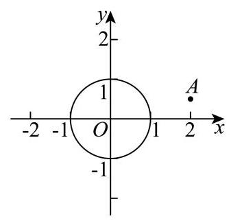
根据复数模的几何意义可知, ∣ z − 2 − i 2 ∣ \left| {z - 2 - \frac{\mathrm{i}}{2}}\right| z − 2 − 2 i ( 2 , 1 2 ) \left( {2,\frac{1}{2}}\right) ( 2 , 2 1 )
由图可知, ∣ z − 2 − i 2 ∣ \left| {z - 2 - \frac{\mathrm{i}}{2}}\right| z − 2 − 2 i ∣ O A ∣ − 1 = 2 2 + ( 1 2 ) 2 − 1 = 17 2 − 1 \left| {OA}\right| - 1 = \sqrt{{2}^{2} + {\left( \frac{1}{2}\right) }^{2}} - 1 = \frac{\sqrt{17}}{2} - 1 ∣ O A ∣ − 1 = 2 2 + ( 2 1 ) 2 − 1 = 2 17 − 1
因为 17 2 − 1 > 1 2 \frac{\sqrt{17}}{2} - 1 > \frac{1}{2} 2 17 − 1 > 2 1 ∣ z − 2 − i 2 ∣ \left| {z - 2 - \frac{\mathrm{i}}{2}}\right| z − 2 − 2 i 1 2 \frac{1}{2} 2 1
【复核修订说明】依据教研整理PDF第7页答案，去除合并稿答案后的OCR脏串。另独立验证：z ≠ 0 z\ne0 z = 0 z = 2 z=2 z = 2 1 / 2 1/2 1/2 17 / 2 − 1 > 1 / 2 \sqrt{17}/2-1>1/2 17 /2 − 1 > 1/2 1 / 2 1/2 1/2
长宁 · 第10题 ★★★★☆ · 教师预估 已知复数 z z z ∣ z ∣ = 1 \left| z\right| = 1 ∣ z ∣ = 1 ∣ z − i ∣ ≤ 1 \left| {z - \mathrm{i}}\right| \leq 1 ∣ z − i ∣ ≤ 1 ∣ z i − 1 ∣ \left| {z\mathrm{i} - 1}\right| ∣ z i − 1 ∣
考点： 复数模与圆弧最值；圆弧距离最值。难度依据： 复数模与圆弧最值；圆弧距离最值
展开答案与解析 【答案】 3 \sqrt{3} 3
【解析】
【分析】 设 z = a + b i , a ∈ R , b ∈ R z = a + b\mathrm{i}, a \in \mathbf{R}, b \in \mathbf{R} z = a + b i , a ∈ R , b ∈ R a 2 + b 2 = 1 , 1 2 ≤ b ≤ 1 {a}^{2} + {b}^{2} = 1,\frac{1}{2} \leq b \leq 1 a 2 + b 2 = 1 , 2 1 ≤ b ≤ 1 ∣ z i − 1 ∣ \left| {z\mathrm{i} - 1}\right| ∣ z i − 1 ∣
【详解】 设 z = a + b i , a ∈ R , b ∈ R z = a + b\mathrm{i}, a \in \mathbf{R}, b \in \mathbf{R} z = a + b i , a ∈ R , b ∈ R
则 ∣ z ∣ = a 2 + b 2 = 1 ⇒ a 2 + b 2 = 1 \left| z\right| = \sqrt{{a}^{2} + {b}^{2}} = 1 \Rightarrow {a}^{2} + {b}^{2} = 1 ∣ z ∣ = a 2 + b 2 = 1 ⇒ a 2 + b 2 = 1
∣ z − i ∣ = ∣ a + ( b − 1 ) i ∣ = a 2 + ( b − 1 ) 2 ≤ 1 ⇒ a 2 + ( b − 1 ) 2 ≤ 1 \left| {z - \mathrm{i}}\right| = \left| {a + \left( {b - 1}\right) \mathrm{i}}\right| = \sqrt{{a}^{2} + {\left( b - 1\right) }^{2}} \leq 1 \Rightarrow {a}^{2} + {\left( b - 1\right) }^{2} \leq 1 ∣ z − i ∣ = ∣ a + ( b − 1 ) i ∣ = a 2 + ( b − 1 ) 2 ≤ 1 ⇒ a 2 + ( b − 1 ) 2 ≤ 1
化简得: a 2 + b 2 − 2 b + 1 ≤ 1 ⇒ 1 2 ≤ b ≤ 1 {a}^{2} + {b}^{2} - {2b} + 1 \leq 1 \Rightarrow \frac{1}{2} \leq b \leq 1 a 2 + b 2 − 2 b + 1 ≤ 1 ⇒ 2 1 ≤ b ≤ 1
∣ z i − 1 ∣ = ∣ a i − b − 1 ∣ = ( − b − 1 ) 2 + a 2 = a 2 + b 2 + 2 b + 1 = 2 b + 2 \left| {z\mathrm{i} - 1}\right| = \left| {a\mathrm{i} - b - 1}\right| = \sqrt{{\left( -b - 1\right) }^{2} + {a}^{2}} = \sqrt{{a}^{2} + {b}^{2} + {2b} + 1} = \sqrt{{2b} + 2} ∣ z i − 1 ∣ = ∣ a i − b − 1 ∣ = ( − b − 1 ) 2 + a 2 = a 2 + b 2 + 2 b + 1 = 2 b + 2
又 1 2 ≤ b ≤ 1 \frac{1}{2} \leq b \leq 1 2 1 ≤ b ≤ 1
所以 3 ≤ 2 b + 2 ≤ 4 3 \leq {2b} + 2 \leq 4 3 ≤ 2 b + 2 ≤ 4
所以 3 ≤ 2 b + 2 ≤ 2 \sqrt{3} \leq \sqrt{{2b} + 2} \leq 2 3 ≤ 2 b + 2 ≤ 2
所以 ∣ z i − 1 ∣ \left| {z\mathrm{i} - 1}\right| ∣ z i − 1 ∣ 3 \sqrt{3} 3
青浦 · 第12题 ★★★★☆ · 教师预估 已知平面内的三个非零向量 a → , b → , c → \overrightarrow{a},\overrightarrow{b},\overrightarrow{c} a , b , c ⟨ a → , b → ⟩ = π 4 \left\langle {\overrightarrow{a},\overrightarrow{b}}\right\rangle = \frac{\pi }{4} ⟨ a , b ⟩ = 4 π ∣ a → − b → ∣ = 2 \left| {\overrightarrow{a} - \overrightarrow{b}}\right| = 2 a − b = 2 ∣ b → − c → ∣ = ∣ c → − a → ∣ = 17 \left| {\overrightarrow{b} - \overrightarrow{c}}\right| = \left| {\overrightarrow{c} - \overrightarrow{a}}\right| = \sqrt{17} b − c = c − a = 17 a → ⋅ c → − b → ⋅ c → ∣ c → ∣ \frac{\overrightarrow{a} \cdot \overrightarrow{c} - \overrightarrow{b} \cdot \overrightarrow{c}}{\left| \overrightarrow{c}\right| } ∣ c ∣ a ⋅ c − b ⋅ c ∣ c → ∣ = \left| \overrightarrow{c}\right| = c =
考点： 数量积投影最值及向量终点几何；圆周角轨迹与坐标；基本不等式求最值。难度依据： 数量积投影最值及向量终点几何；圆周角轨迹与坐标；基本不等式求最值
展开答案与解析 【答案】 7 \sqrt{7} 7
【解析】
【分析】 先通过题干向量关系和几何法确定过点 A , B A, B A , B
【详解】 设 A , B A, B A , B a → , b → \overrightarrow{a},\overrightarrow{b} a , b M M M A B {AB} A B ∣ a → − b → ∣ = ∣ A B ∣ = 2 \left| {\overrightarrow{a} - \overrightarrow{b}}\right| = \left| {AB}\right| = 2 a − b = ∣ A B ∣ = 2 ∣ A M ∣ = 1 \left| {AM}\right| = 1 ∣ A M ∣ = 1 ∣ c → − a → ∣ = ∣ c → − b → ∣ = 17 \left| {\overrightarrow{c} - \overrightarrow{a}}\right| = \left| {\overrightarrow{c} - \overrightarrow{b}}\right| = \sqrt{17} c − a = c − b = 17 c → \overrightarrow{c} c C C C A B {AB} A B
且由勾股定理得 ∣ C M ∣ = ∣ A C → ∣ 2 − ∣ A M ∣ 2 = 17 − 1 = 4 \left| {CM}\right| = \sqrt{{\left| \overrightarrow{AC}\right| }^{2} - {\left| AM\right| }^{2}} = \sqrt{{17} - 1} = 4 ∣ CM ∣ = A C 2 − ∣ A M ∣ 2 = 17 − 1 = 4
如图所示，建立坐标系:
M ( 0 , 0 ) , A ( 1 , 0 ) , B ( − 1 , 0 ) , C ( 0 , ± 4 ) , M\left( {0,0}\right) ,\;A\left( {1,0}\right) ,\;B\left( {-1,0}\right) ,\;C\left( {0, \pm 4}\right) , M ( 0 , 0 ) , A ( 1 , 0 ) , B ( − 1 , 0 ) , C ( 0 , ± 4 ) ,
公共起点 O ( x , y ) O\left( {x, y}\right) O ( x , y ) a → = O A → , b → = O B → , c → = O C → \overrightarrow{a} = \overrightarrow{OA},\overrightarrow{b} = \overrightarrow{OB},\overrightarrow{c} = \overrightarrow{OC} a = O A , b = OB , c = OC
在 △ O A B \bigtriangleup {OAB} △ O A B A B sin ∠ A O B = 2 sin π 4 = 2 2 = 2 R \frac{AB}{\sin \angle {AOB}} = \frac{2}{\sin \frac{\pi }{4}} = 2\sqrt{2} = {2R} s i n ∠ A OB A B = s i n 4 π 2 = 2 2 = 2 R
R R R △ O A B \bigtriangleup {OAB} △ O A B R = 2 R = \sqrt{2} R = 2
令 △ O A B \bigtriangleup {OAB} △ O A B G G G G G G A B {AB} A B ( 0 , ± 1 ) \left( {0, \pm 1}\right) ( 0 , ± 1 )
根据对称性,以 C ( 0 , 4 ) , G ( 0 , 1 ) C\left( {0,4}\right) , G\left( {0,1}\right) C ( 0 , 4 ) , G ( 0 , 1 ) O O O x 2 + ( y − 1 ) 2 = 2 {x}^{2} + {\left( y - 1\right) }^{2} = 2 x 2 + ( y − 1 ) 2 = 2
a → − b → = O A → − O B → = ( 2 , 0 ) , c → = O C → = ( − x , 4 − y ) \overrightarrow{a} - \overrightarrow{b} = \overrightarrow{OA} - \overrightarrow{OB} = \left( {2,0}\right) ,\overrightarrow{c} = \overrightarrow{OC} = \left( {-x,4 - y}\right) a − b = O A − OB = ( 2 , 0 ) , c = OC = ( − x , 4 − y ) k = a → ⋅ c → − b → ⋅ c → ∣ c → ∣ k = \frac{\overrightarrow{a} \cdot \overrightarrow{c} - \overrightarrow{b} \cdot \overrightarrow{c}}{\left| \overrightarrow{c}\right| } k = ∣ c ∣ a ⋅ c − b ⋅ c
则 k = ( a → − b → ) ⋅ c → ∣ c → ∣ = − 2 x x 2 + ( y − 4 ) 2 k = \frac{\left( {\overrightarrow{a} - \overrightarrow{b}}\right) \cdot \overrightarrow{c}}{\left| \overrightarrow{c}\right| } = \frac{-{2x}}{\sqrt{{x}^{2} + {\left( y - 4\right) }^{2}}} k = ∣ c ∣ ( a − b ) ⋅ c = x 2 + ( y − 4 ) 2 − 2 x
代入 x 2 = − y 2 + 2 y + 1 {x}^{2} = - {y}^{2} + {2y} + 1 x 2 = − y 2 + 2 y + 1 k 2 = 4 ( − y 2 + 2 y + 1 ) − 6 y + 17 {k}^{2} = \frac{4\left( {-{y}^{2} + {2y} + 1}\right) }{-{6y} + {17}} k 2 = − 6 y + 17 4 ( − y 2 + 2 y + 1 )
令 t = − 6 y + 17 ( t > 0 ) t = - {6y} + {17}\left( {t > 0}\right) t = − 6 y + 17 ( t > 0 ) k 2 = − t − 49 t + 22 9 ≤ − 14 + 22 9 = 8 9 {k}^{2} = \frac{-t - \frac{49}{t} + {22}}{9} \leq \frac{-{14} + {22}}{9} = \frac{8}{9} k 2 = 9 − t − t 49 + 22 ≤ 9 − 14 + 22 = 9 8
当且仅当 t = 7 t = 7 t = 7 ∣ c → ∣ 2 = t = 7 {\left| \overrightarrow{c}\right| }^{2} = t = 7 c 2 = t = 7 ∣ c → ∣ = 7 \left| \overrightarrow{c}\right| = \sqrt{7} c = 7
由对称性可知当 C ( 0 , − 4 ) C\left( {0, - 4}\right) C ( 0 , − 4 ) x 2 + ( y + 1 ) 2 = 2 {x}^{2} + {\left( y + 1\right) }^{2} = 2 x 2 + ( y + 1 ) 2 = 2 7 \sqrt{7} 7
静安 · 第12题 ★★★★☆ · 教师预估 设 a > 0 a > 0 a > 0 f ( x ) = { x + 2 , x < − a a 2 − x 2 , − a ≤ x ≤ a − x − 1 , x > a f\left( x\right) = \left\{ \begin{array}{l} x + 2, x < - a \\ \sqrt{{a}^{2} - {x}^{2}}, - a \leq x \leq a \\ - \sqrt{x} - 1, x > a \end{array}\right. f ( x ) = ⎩ ⎨ ⎧ x + 2 , x < − a a 2 − x 2 , − a ≤ x ≤ a − x − 1 , x > a
① y = f ( x ) y = f\left( x\right) y = f ( x ) ( a − 1 , + ∞ ) \left( {a - 1, + \infty }\right) ( a − 1 , + ∞ )
② 当 a ≥ 1 a \geq 1 a ≥ 1 y = f ( x ) y = f\left( x\right) y = f ( x )
③ 设 M ( x 1 , f ( x 1 ) ) ( x 1 ≤ a ) , N ( x 2 , f ( x 2 ) ) ( x 2 > a ) M\left( {{x}_{1}, f\left( {x}_{1}\right) }\right) \left( {{x}_{1} \leq a}\right) , N\left( {{x}_{2}, f\left( {x}_{2}\right) }\right) \left( {{x}_{2} > a}\right) M ( x 1 , f ( x 1 ) ) ( x 1 ≤ a ) , N ( x 2 , f ( x 2 ) ) ( x 2 > a ) ∣ M N ∣ > 1 \left| {MN}\right| > 1 ∣ MN ∣ > 1
其中所有正确结论的序号是___.
考点： 分段函数最值；点间距离。难度依据： 分段函数最值；点间距离
展开答案与解析 【答案】 ②③
【解析】
【分析】 对①: 结合 f ( x ) = x + 2 , x < − a f\left( x\right) = x + 2, x < - a f ( x ) = x + 2 , x < − a a − 1 < − a a - 1 < - a a − 1 < − a y = f ( x ) y = f\left( x\right) y = f ( x ) { a ≥ − a + 2 a ≥ − a − 1 \left\{ \begin{array}{l} a \geq - a + 2 \\ a \geq - \sqrt{a} - 1 \end{array}\right. { a ≥ − a + 2 a ≥ − a − 1 x 1 < − a {x}_{1} < - a x 1 < − a − a ≤ x 1 ≤ a - a \leq {x}_{1} \leq a − a ≤ x 1 ≤ a x 1 < − a {x}_{1} < - a x 1 < − a − a ≤ x 1 ≤ a - a \leq {x}_{1} \leq a − a ≤ x 1 ≤ a y M − y N {y}_{M} - {y}_{N} y M − y N
【详解】 对①:若 a − 1 < − a a - 1 < - a a − 1 < − a 0 < a < 1 2 0 < a < \frac{1}{2} 0 < a < 2 1 f ( x ) = x + 2 , x < − a f\left( x\right) = x + 2, x < - a f ( x ) = x + 2 , x < − a
则 y = f ( x ) y = f\left( x\right) y = f ( x ) ( a − 1 , − a ) \left( {a - 1, - a}\right) ( a − 1 , − a )
对②:由 f ( x ) = { x + 2 , x < − a a 2 − x 2 , − a ≤ x ≤ a − x − 1 , x > a f\left( x\right) = \left\{ \begin{matrix} x + 2, x < - a \\ \sqrt{{a}^{2} - {x}^{2}}, - a \leq x \leq a \\ - \sqrt{x} - 1, x > a \end{matrix}\right. f ( x ) = ⎩ ⎨ ⎧ x + 2 , x < − a a 2 − x 2 , − a ≤ x ≤ a − x − 1 , x > a
则当 x < − a x < - a x < − a f ( x ) f\left( x\right) f ( x ) − a ≤ x ≤ 0 - a \leq x \leq 0 − a ≤ x ≤ 0 f ( x ) f\left( x\right) f ( x )
当 0 < x ≤ a 0 < x \leq a 0 < x ≤ a f ( x ) f\left( x\right) f ( x ) x > a x > a x > a f ( x ) f\left( x\right) f ( x )
则 x < − a x < - a x < − a f ( x ) = x + 2 < − a + 2 f\left( x\right) = x + 2 < - a + 2 f ( x ) = x + 2 < − a + 2 − a ≤ x ≤ a - a \leq x \leq a − a ≤ x ≤ a f ( x ) = a 2 − x 2 ≤ a f\left( x\right) = \sqrt{{a}^{2} - {x}^{2}} \leq a f ( x ) = a 2 − x 2 ≤ a
当 x > a x > a x > a f ( x ) = − x − 1 < − a − 1 f\left( x\right) = - \sqrt{x} - 1 < - \sqrt{a} - 1 f ( x ) = − x − 1 < − a − 1
要使得 y = f ( x ) y = f\left( x\right) y = f ( x ) { a ≥ − a + 2 a ≥ − a − 1 \left\{ \begin{array}{l} a \geq - a + 2 \\ a \geq - \sqrt{a} - 1 \end{array}\right. { a ≥ − a + 2 a ≥ − a − 1 a ≥ 1 a \geq 1 a ≥ 1
对③:由题意可得 N ( x 2 , − x 2 − 1 ) N\left( {{x}_{2}, - \sqrt{{x}_{2}} - 1}\right) N ( x 2 , − x 2 − 1 ) x 1 < − a {x}_{1} < - a x 1 < − a M M M y = x + 2 ( x < − a ) y = x + 2\left( {x < - a}\right) y = x + 2 ( x < − a )
则 ∣ M N ∣ ≥ ∣ x 2 + x 2 + 1 + 2 ∣ 2 = ∣ x 2 + x 2 + 3 ∣ 2 \left| {MN}\right| \geq \frac{\left| {x}_{2} + \sqrt{{x}_{2}} + 1 + 2\right| }{\sqrt{2}} = \frac{\left| {x}_{2} + \sqrt{{x}_{2}} + 3\right| }{\sqrt{2}} ∣ MN ∣ ≥ 2 ∣ x 2 + x 2 + 1 + 2 ∣ = 2 ∣ x 2 + x 2 + 3 ∣
由 x 2 > a > 0 {x}_{2} > a > 0 x 2 > a > 0 ∣ M N ∣ ≥ ∣ x 2 + x 2 + 3 ∣ 2 > 3 2 > 1 \left| {MN}\right| \geq \frac{\left| {x}_{2} + \sqrt{{x}_{2}} + 3\right| }{\sqrt{2}} > \frac{3}{\sqrt{2}} > 1 ∣ MN ∣ ≥ 2 ∣ x 2 + x 2 + 3 ∣ > 2 3 > 1
若 − a ≤ x 1 ≤ a - a \leq {x}_{1} \leq a − a ≤ x 1 ≤ a M ( x 1 , a 2 − x 1 2 ) M\left( {{x}_{1},\sqrt{{a}^{2} - {x}_{1}^{2}}}\right) M ( x 1 , a 2 − x 1 2 )
有 y M − y N = a 2 − x 1 2 − ( − x 2 − 1 ) > 0 + a + 1 > 1 {y}_{M} - {y}_{N} = \sqrt{{a}^{2} - {x}_{1}^{2}} - \left( {-\sqrt{{x}_{2}} - 1}\right) > 0 + \sqrt{a} + 1 > 1 y M − y N = a 2 − x 1 2 − ( − x 2 − 1 ) > 0 + a + 1 > 1 ∣ M N ∣ > 1 \left| {MN}\right| > 1 ∣ MN ∣ > 1
综上可得: ∣ M N ∣ > 1 \left| {MN}\right| > 1 ∣ MN ∣ > 1
黄浦 · 第12题 ★★★★☆ · 教师预估 如图所示，某圆形游乐园的半径为 140 米，其圆心在点 A A A A A A B B B A A A B B B O O O C , D C, D C , D △ O C D \bigtriangleup {OCD} △ OC D
考点： 圆与三角形面积最值；导数求最值。难度依据： 圆与三角形面积最值；导数求最值
展开答案与解析 【答案】 750 15 {750}\sqrt{15} 750 15
【解析】
【分析】 过点 B B B B E ⊥ O D {BE} \bot {OD} BE ⊥ O D E E E ∣ O D ∣ = 2 B D 2 − B E 2 \left| {OD}\right| = 2\sqrt{B{D}^{2} - B{E}^{2}} ∣ O D ∣ = 2 B D 2 − B E 2 A A A O D {OD} O D d d d C C C O D {OD} O D ∣ C A ∣ + d = 140 + d \left| {CA}\right| + d = {140} + d ∣ C A ∣ + d = 140 + d O O O O B {OB} OB x x x O O O O B {OB} OB y y y O D {OD} O D y = k x y = {kx} y = k x △ O C D \bigtriangleup {OCD} △ OC D k k k
【详解】 由题意知, ∣ A B ∣ = 60 , ∣ O B ∣ = 20 , ∣ A C ∣ = 140 , ∣ B D ∣ = 20 \left| {AB}\right| = {60},\left| {OB}\right| = {20},\left| {AC}\right| = {140},\left| {BD}\right| = {20} ∣ A B ∣ = 60 , ∣ OB ∣ = 20 , ∣ A C ∣ = 140 , ∣ B D ∣ = 20
所以 ∣ A O ∣ = 40 \left| {AO}\right| = {40} ∣ A O ∣ = 40
过点 B B B B E ⊥ O D {BE} \bot {OD} BE ⊥ O D E E E ∣ O D ∣ = 2 B D 2 − B E 2 \left| {OD}\right| = 2\sqrt{B{D}^{2} - B{E}^{2}} ∣ O D ∣ = 2 B D 2 − B E 2
记点 A A A O D {OD} O D d d d C C C O D {OD} O D ∣ C A ∣ + d = 140 + d \left| {CA}\right| + d = {140} + d ∣ C A ∣ + d = 140 + d O O O O B {OB} OB x x x O O O O B {OB} OB y y y
则 O ( 0 , 0 ) , A ( − 40 , 0 ) , B ( 20 , 0 ) O\left( {0,0}\right) , A\left( {-{40},0}\right) , B\left( {{20},0}\right) O ( 0 , 0 ) , A ( − 40 , 0 ) , B ( 20 , 0 )
易知,直线 O D {OD} O D O D {OD} O D y = k x y = {kx} y = k x k x − y = 0 {kx} - y = 0 k x − y = 0
则 ∣ B E ∣ = ∣ 20 k ∣ k 2 + 1 , d = ∣ 40 k ∣ k 2 + 1 \left| {BE}\right| = \frac{\left| {20}k\right| }{\sqrt{{k}^{2} + 1}},\;d = \frac{\left| {40}k\right| }{\sqrt{{k}^{2} + 1}} ∣ BE ∣ = k 2 + 1 ∣ 20 k ∣ , d = k 2 + 1 ∣ 40 k ∣
所以 ∣ O D ∣ = 2 400 − 400 k 2 k 2 + 1 = 40 k 2 + 1 \left| {OD}\right| = 2\sqrt{{400} - \frac{{400}{k}^{2}}{{k}^{2} + 1}} = \frac{40}{\sqrt{{k}^{2} + 1}} ∣ O D ∣ = 2 400 − k 2 + 1 400 k 2 = k 2 + 1 40
△ O C D \bigtriangleup {OCD} △ OC D
1 2 ∣ O D ∣ ( 140 + d ) = 1 2 ⋅ 40 k 2 + 1 ⋅ ( 140 + ∣ 40 k ∣ k 2 + 1 ) = 2800 k 2 + 1 + 800 ∣ k ∣ k 2 + 1 = 400 ( 7 k 2 + 1 + 2 ∣ k ∣ k 2 + 1 )
\frac{1}{2}\left| {OD}\right| \left( {{140} + d}\right) = \frac{1}{2} \cdot \frac{40}{\sqrt{{k}^{2} + 1}} \cdot \left( {{140} + \frac{\left| {40}k\right| }{\sqrt{{k}^{2} + 1}}}\right) = \frac{2800}{\sqrt{{k}^{2} + 1}} + \frac{{800}\left| k\right| }{{k}^{2} + 1} = {400}\left( {\frac{7}{\sqrt{{k}^{2} + 1}} + \frac{2\left| k\right| }{{k}^{2} + 1}}\right)
2 1 ∣ O D ∣ ( 140 + d ) = 2 1 ⋅ k 2 + 1 40 ⋅ ( 140 + k 2 + 1 ∣ 40 k ∣ ) = k 2 + 1 2800 + k 2 + 1 800 ∣ k ∣ = 400 ( k 2 + 1 7 + k 2 + 1 2 ∣ k ∣ )
由圆的对称性,不妨令 k ≥ 0 k \geq 0 k ≥ 0
设 f ( k ) = 400 ( 7 k 2 + 1 + 2 k k 2 + 1 ) , k ≥ 0 f\left( k\right) = {400}\left( {\frac{7}{\sqrt{{k}^{2} + 1}} + \frac{2k}{{k}^{2} + 1}}\right) , k \geq 0 f ( k ) = 400 ( k 2 + 1 7 + k 2 + 1 2 k ) , k ≥ 0
f ′ ( k ) = 400 [ 7 × ( − 1 2 ) × 2 k ( k 2 + 1 ) k 2 + 1 + 2 ( k 2 + 1 ) − 2 k ⋅ 2 k ( k 2 + 1 ) 2 ] = 400 × − 7 k k 2 + 1 − 2 k 2 + 2 ( k 2 + 1 ) 2 , {f}^{\prime }\left( k\right) = {400}\left\lbrack {\frac{7 \times \left( {-\frac{1}{2}}\right) \times {2k}}{\left( {{k}^{2} + 1}\right) \sqrt{{k}^{2} + 1}} + \frac{2\left( {{k}^{2} + 1}\right) - {2k} \cdot {2k}}{{\left( {k}^{2} + 1\right) }^{2}}}\right\rbrack = {400} \times \frac{-{7k}\sqrt{{k}^{2} + 1} - 2{k}^{2} + 2}{{\left( {k}^{2} + 1\right) }^{2}}, f ′ ( k ) = 400 [ ( k 2 + 1 ) k 2 + 1 7 × ( − 2 1 ) × 2 k + ( k 2 + 1 ) 2 2 ( k 2 + 1 ) − 2 k ⋅ 2 k ] = 400 × ( k 2 + 1 ) 2 − 7 k k 2 + 1 − 2 k 2 + 2 ,
令 g ( k ) = − 7 k k 2 + 1 − 2 k 2 + 2 g\left( k\right) = - {7k}\sqrt{{k}^{2} + 1} - 2{k}^{2} + 2 g ( k ) = − 7 k k 2 + 1 − 2 k 2 + 2 g ′ ( k ) = − 7 ( k 2 + 1 + k 2 k 2 + 1 ) − 4 k < 0 {g}^{\prime }\left( k\right) = - 7\left( {\sqrt{{k}^{2} + 1} + \frac{{k}^{2}}{\sqrt{{k}^{2} + 1}}}\right) - {4k} < 0 g ′ ( k ) = − 7 ( k 2 + 1 + k 2 + 1 k 2 ) − 4 k < 0
所以 g ( k ) g\left( k\right) g ( k ) [ 0 , + ∞ ) \lbrack 0, + \infty ) [ 0 , + ∞ )
令 g ( k ) = 0 g\left( k\right) = 0 g ( k ) = 0 − 7 k k 2 + 1 − 2 k 2 + 2 = 0 - {7k}\sqrt{{k}^{2} + 1} - 2{k}^{2} + 2 = 0 − 7 k k 2 + 1 − 2 k 2 + 2 = 0
即 7 k k 2 + 1 = − 2 k 2 + 2 {7k}\sqrt{{k}^{2} + 1} = - 2{k}^{2} + 2 7 k k 2 + 1 = − 2 k 2 + 2 ( 15 k 2 − 1 ) ( 3 k 2 + 4 ) = 0 \left( {{15}{k}^{2} - 1}\right) \left( {3{k}^{2} + 4}\right) = 0 ( 15 k 2 − 1 ) ( 3 k 2 + 4 ) = 0
因为 3 k 2 + 4 > 0 3{k}^{2} + 4 > 0 3 k 2 + 4 > 0 k 2 = 1 15 {k}^{2} = \frac{1}{15} k 2 = 15 1 k = 15 15 k = \frac{\sqrt{15}}{15} k = 15 15
所以当 0 ≤ k < 15 15 0 \leq k < \frac{\sqrt{15}}{15} 0 ≤ k < 15 15 g ( k ) > 0 , f ′ ( k ) > 0 g\left( k\right) > 0,{f}^{\prime }\left( k\right) > 0 g ( k ) > 0 , f ′ ( k ) > 0 k ≥ 15 15 k \geq \frac{\sqrt{15}}{15} k ≥ 15 15 g ( k ) < 0 , f ′ ( k ) < 0 g\left( k\right) < 0,{f}^{\prime }\left( k\right) < 0 g ( k ) < 0 , f ′ ( k ) < 0
所以 f ( k ) f\left( k\right) f ( k ) [ 0 , 15 15 ) \left\lbrack {0,\frac{\sqrt{15}}{15}}\right) [ 0 , 15 15 ) ( 15 15 , + ∞ ) \left( {\frac{\sqrt{15}}{15}, + \infty }\right) ( 15 15 , + ∞ )
所以 f ( k ) f\left( k\right) f ( k ) k = 15 15 k = \frac{\sqrt{15}}{15} k = 15 15
f ( 15 15 ) = 400 × 15 15 8 = 750 15 . f\left( \frac{\sqrt{15}}{15}\right) = {400} \times \frac{{15}\sqrt{15}}{8} = {750}\sqrt{15}. f ( 15 15 ) = 400 × 8 15 15 = 750 15 .
所以 △ O C D \bigtriangleup {OCD} △ OC D 750 15 {750}\sqrt{15} 750 15